| ＹｏｕＴｕｂｅで食べていく～「動画投稿」という生き方～ (光文社新書) | |
| 愛場 大介 （ジェット☆ダイスケ） | |
| (2014) | |
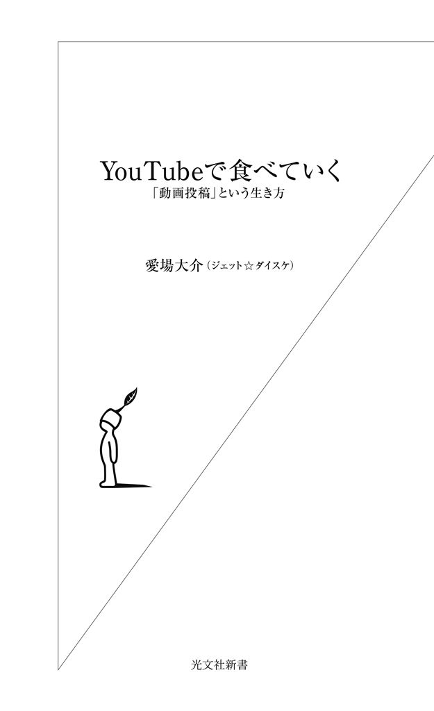
２０１３年２月13日水曜日の夜、私は「クローズアップ現代」にゲスト出演するため、ＮＨＫのスタジオにいました。その日の放送は「収入源は動画投稿 ～急増 アマチュア映像作家～」と題し、おもにＹｏｕＴｕｂｅを中心とした動画投稿で生計を立てている人びとに焦点を当てた内容でした。
今やテレビをしのぐほどの影響力を持つと言われる動画サイトですが、これ一本で食べていくとは一体どういうことなのでしょう？
現在、動画投稿で得た収益で生活しているのは北米のＹｏｕＴｕｂｅユーザーが中心ですが、一説によると、日本におけるＹｏｕＴｕｂｅ動画の総再生回数は米国に次いで世界第２位とも言われます。こうした、ＹｏｕＴｕｂｅに動画をアップして人気者になったり、お金を稼いだりしている人たちのことを〝ユーチューバー〟と呼びます。
みなさんも、ＹｏｕＴｕｂｅのことはご存じでしょう。アーティストのプロモーションビデオや、企業ＣＭ、テレビ番組（もしかしたら違法アップロードされたものかもしれませんけど）などをパソコンなり、スマートフォンなりで見たことはあるでしょう。ＹｏｕＴｕｂｅのサイト上やアプリで直接動画を見ていないとしても、さまざまなウェブサイト上にＹｏｕＴｕｂｅの動画が埋め込まれて表示されるようになっています。
ＹｏｕＴｕｂｅの動画は、企業やプロが作ったものだけではありません。むしろ「普通の人びとの投稿をみんなで共有して楽しむ」というのが、動画共有サービスＹｏｕＴｕｂｅが持つ本質とも言えます。最近では面白い動画を紹介する「バイラルメディア」と呼ばれるサイトも増えていますが、そういうサイトで紹介されている動画の多くもＹｏｕＴｕｂｅに投稿されたものです。
会社勤めの傍ら趣味の動画をアップし続けていたら、いつの間にかＹｏｕＴｕｂｅからの報酬が給料を大きく上回り、脱サラした方もいます。動画を作ってネットに公開するだけでお金を稼ぐことができるというのは、考えてみればすごい話です。
けれどもＹｏｕＴｕｂｅ、いや、動画が持つ可能性は、小金が稼げるというだけではありません。個人が動画というメディアを駆使できるようになったことで、働き方やコミュニケーションのあり方まで変わりつつあるのです。
自己紹介が遅れてしまいました。私はジェット☆ダイスケというユーザー名で、２００６年からＹｏｕＴｕｂｅに動画を投稿しているビデオブロガーです。カメラやゲーム機、スマートフォンなどデジタルグッズを紹介する動画が多いので、より具体的に「デジモノ紹介ビデオブロガー」と称することもあります。
といっても、日々ビデオブログだけをやっているわけではありません。日本でインターネットやＤＴＶ（デスクトップビデオ：パソコンを用いたビデオ編集）が普及し始めた90年代後半頃より、個人によるウェブ動画の配信方法について試行錯誤を繰り返してきました。またブログと並行するかたちで、動画共有サービスの立ち上げや、動画を活用したマーケティング事業などにも携わってきました。
そんなウェブ動画をライフワークとする私からすると、誰もがスマートフォンで動画を撮影して、編集、公開できる今の時代は夢のようです。さらには、その動画を見た人たちとの間で共感やコミュニケーションが生まれたり、新しいビジネスを生み出したり......。
ＹｏｕＴｕｂｅは２００５年に米国で設立され、もうすぐ10年になろうとしています。たった10年足らずのうちに、毎月10億人以上のユーザーがアクセスし、毎月60億時間以上の動画が視聴されるという巨大なプラットフォームになりました。これからウェブ動画は今以上に、コンテンツとして、ビジネスとして、コミュニケーションツールとしてますます重要になるのは間違いありません。
ではＹｏｕＴｕｂｅを利用して成功するにはどうしたらいいのでしょうか？ 動画をビジネスにどう生かせばいいのでしょうか？ 代表的なユーチューバーたちの生き様を紹介しながら、動画サービスがどんな可能性を開いていくのかを見ていくことにしましょう。
面白トーク、商品の紹介、一発芸、短編映画、コメディー、話題のニュース......。ＹｏｕＴｕｂｅで公開されている動画のジャンルは多岐にわたります。投稿された動画の人気度に応じて報酬が得られる仕組みをグーグルが用意していることも、ＹｏｕＴｕｂｅにどんどん動画が集まってくる大きな要因となっています。
ユーチューバーの多くは、自ら企画を立てて動画に出演し、ビデオカメラを駆使して撮影し、パソコンなどを用いて編集・配信までを行います。従来の映画・テレビ制作に見られる大所帯の「水平分業型」ではなく、プロデューサーやディレクター・カメラマン・タレントと一人何役もこなす、いわば究極的にミニマムな「垂直統合型」プロダクション。ミニマムな制作環境で自分一人の身を立てるくらいであれば十分、といった参入障壁の低さから、休日の副業として始める人もいます。そこにはパソコンからスマートフォンへ、そしてより安価なアプリの登場といったツールの変遷も影響しているでしょう。敷居はもはやないに等しいのです。
ＹｏｕＴｕｂｅのビジネスモデルは、広告収入モデルです。ＹｏｕＴｕｂｅで動画を再生しようとすると、ほとんどの動画で再生が始まる前に広告が流れたり、動画上にバナーが表示されたりします。視聴者がそうした広告を再生したりクリックしたりすると、グーグルから動画の投稿者に報酬が支払われます。
動画の投稿者が報酬を受け取るには、「ＹｏｕＴｕｂｅパートナープログラム」に参加している必要があります。このプログラムは２００７年から始まり（日本では２００８年開始）、今では30カ国以上、１００万人以上のユーチューバーがパートナーとして広告収入を得ています。以前は、グーグルから一部の投稿者（当然人気を集めている人）あてにこのプログラムへの招待メールが送られていたのですが、現在では誰でもＹｏｕＴｕｂｅパートナープログラムに参加できるようになりました。
すでに２００４年ごろから、ミクシィやｏｒｋｕｔ（オーカット）といったＳＮＳ（ソーシャル・ネットワーキング・サービス）が流行しており、「Ｙａｈｏｏ！知恵袋」や「教えて！ｇｏｏ」のようなＱ＆Ａサイト、写真投稿サイトの「Ｆｌｉｃｋｒ」なども登場。自前でウェブサーバを用意せずともブログを始められるブログホスティングサービスも、各社から続々と登場していました。
これらのウェブサービスが既存のものと一線を画したのは、サイト運営者が用意したコンテンツを一方的に見せるのではなく、利用者自身がコンテンツを作って配信できる場所が用意されたことです。ユーザー（消費者）がコンテンツを生成するメディアということで、ＵＧＭ（ユーザー・ジェネレイテッド・メディア）もしくはＣＧＭ（コンシューマー・ジェネレイテッド・メディア）とも呼ばれ、そういった時代の潮流を「ウェブ２・０」とも呼びました。
これらが画期的だったのは、主に広告媒体化により、簡単なユーザー登録をするだけで、無料で利用できるようになった点です。
なかでも最も上手く立ち回ったのが、ＹｏｕＴｕｂｅを運営するグーグルでしょう。ロボット型の検索エンジンの会社として始まり、その検索結果として表示される多くのウェブページに、「アドセンス」という広告を配信しています。ブロガーは、ブログにアドセンス広告を貼って収益を得ることができ、アドセンス側としてはグーグルが得た広告収益を、それを貼ってくれたウェブサイトに分配することで、広告の表示枠を増やしているのです。
ＹｏｕＴｕｂｅは動画に特化したＣＧＭであり、ＳＮＳとも言えます。自分のウェブサイトを持たずとも、ＹｏｕＴｕｂｅ上でコンテンツを発表することが可能です。誰かが動画をアップロードするごとに、グーグルは新たな広告表示の機会を得、また投稿者には再生数などに応じた金額が分配されます。
ＹｏｕＴｕｂｅで動画を見ていると、いろいろな種類の広告が貼られているのがわかるでしょう。これらの広告には、「ディスプレイ広告」「オーバーレイＩｎＶｉｄｅｏ広告」「ＴｒｕｅＶｉｅｗインストリーム広告」「標準インストリーム広告」の４種類があります。
●「ディスプレイ広告」......関連動画リストの上などに表示されるバナー広告。
●「オーバーレイＩｎＶｉｄｅｏ広告」......動画再生中、動画に重なって小さく表示される半透明の広告。
●「インストリーム広告」......動画を再生する前、再生中、再生が終わったあとに再生される動画広告。「ＴｒｕｅＶｉｅｗインストリーム広告」は、広告再生が始まってから５秒経つとスキップできますが、「標準インストリーム広告」はスキップができません。
ＹｏｕＴｕｂｅパートナーになると、管理画面でこうした広告の表示／非表示を動画ごとに設定することができます。
報酬が発生する条件は、細かく定められています。たとえば、インストリーム広告なら最後まで再生されるか、30秒以上再生される必要があります。同じ視聴者がひとつの動画広告を繰り返し再生して、不正に報酬を得ていないかもチェックされています。
３分程度の動画だと、広告は頭に付けるしかありませんが、10分を超えるものだと、ミッドロールとエンドロールが入れられます。ミッドロールなら、自分の好きなタイミングで「ここでＣＭです！」と入れることも可能です。視聴者に広告を最後まで再生させるためには、エンドロールが一番いいでしょう。長めの動画をダラダラ見ている人は、ほぼ確実に、そのままの流れで再生してくれるのです。
ユーチューバーには再生回数が通知されるので、動画ごとに、何秒までどのくらいの人が見たのか、といったデータがわかります。報酬額は基本的に動画の再生回数に大きく左右されますが、グーグルは１再生当たりの報酬額は公開していません。また、ユーチューバーも報酬額を公開してはいけない規約になっています。
報酬額は変動しますしユーチューバーによっても違ってきますが、だいたいの見当としては、１再生当たり０・１～０・３円というところでしょう。仮に１再生当たり０・１円だとしたら、１万回再生されて１０００円。１００万回再生されて10万円です。「動画投稿で稼げる！」といったオイシイ話を耳にしたことのある人は、あまりの少なさに意外に思えるのではないでしょうか。
動画で稼ぐこと、動画一本で食べていくことは、本当に大変なことです。報酬を得るために、ユーチューバーたちはどうやったら動画を見てもらえるか、１００万回再生されるネタとは何か、頭をひねっているのです。
ただ単に、撮った動画をアップしているだけでは効率がよくありません。定期的に自分の動画を見てくれる人を増やし、より多く収益を上げるためにユーチューバーたちが次に取る手段として、「チャンネル登録」があります。
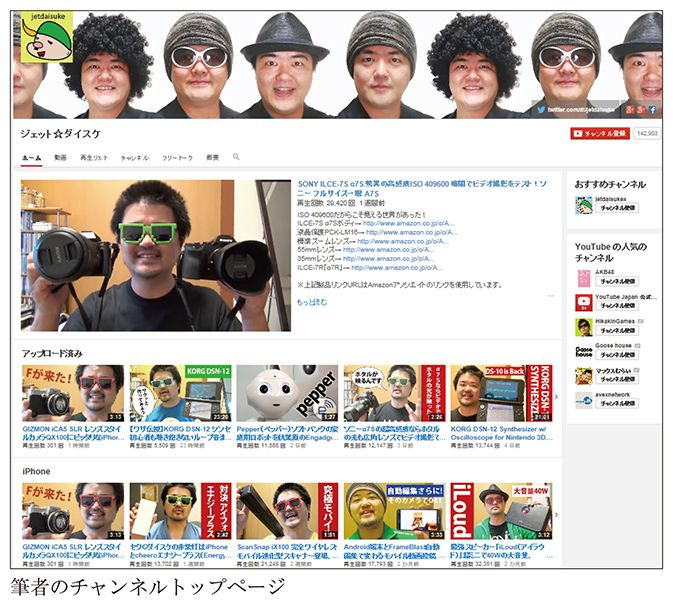
ユーチューバーたちは自分オリジナルの「チャンネル」を持ち、そこに、これまでに投稿した動画の一覧や掲示板などが表示されるようにしています。
チャンネル登録をしなくても、ＹｏｕＴｕｂｅ上の動画は誰でも自由に見ることができますが、お気に入りのユーチューバーがいるのなら、そのチャンネルを視聴登録することで、新着情報を見逃すことなくチェックすることができます（ただし、グーグルアカウントを取得していることが前提です）。
チャンネル登録者数を増やすことは、より収益を上げたいユーチューバーにとっても、非常に大きな意味があります。チャンネル登録をしてもらうことで、新たに投稿した動画をすぐに見てもらいやすくなるのです。動画の中に自分のチャンネルへのリンクを埋め込んだり、「ここをクリックしてね↓」などとチャンネル登録ボタンあたりを指差したりする人もいます。
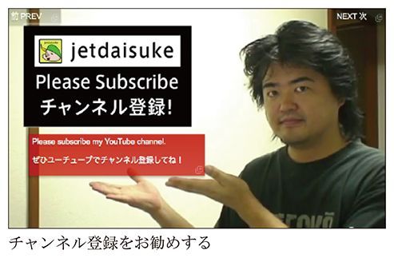
ただし、私の経験からすると、もうチャンネル登録者の数を競うことの意味は薄れてきたように感じます。最近は、フェイスブックやツイッターといったソーシャルメディアやグーグル検索などから、直接動画を見に来る視聴者が増えてきました。また、ＹｏｕＴｕｂｅから離れて別のウェブサイトに動画が貼り付けられた場合、元の文脈から切り離されるので、あまりＹｏｕＴｕｂｅを見ない人にとっては「チャンネル登録」を促す行為も何を指しているのかわかりにくいものとなります。
ちなみに、動画本編ほどではないにしろ、チャンネル内のコメント欄もしっかり視聴者に見られています。私の場合は、製品レビューを中心にやっているので、その製品の購入を検討している人が検索経由で見に来ます。当然、メーカーの方も検索や製品エゴサーチをたどって見に来ます。彼らの関心事は、動画のなかで商品がどう紹介されているのかだけでなく、コメント欄での視聴者の反応だったりします。コメント欄で会話や議論が活発に飛び交っていると、心証も良いようです。イベントやオフ会などで偶然会った企業の方から、「コメント欄の意見が参考になりました」と言われることもあります。
ただの「動画の置き場」ではない、こうしたコミュニケーションもまたＹｏｕＴｕｂｅの魅力なのです。
ウェブサイトやブログの運営者には、「グーグル アナリティクス」を導入している方も多くいます。グーグル アナリティクスとは、検索エンジンサービスを展開するグーグルならではの、非常に細かいところまで行き届いたアクセス解析ツールです。無料で提供されるものとしては、これを超える仕様のものはないでしょう。ＹｏｕＴｕｂｅ上でもそれに似たツールとして、動画視聴やユーザーの反応などに特化した、「ＹｏｕＴｕｂｅ アナリティクス」が提供されています。
トップページでは、ざっと次のような項目から、おおよそのチャンネル運営状況を把握することができます（図１）。
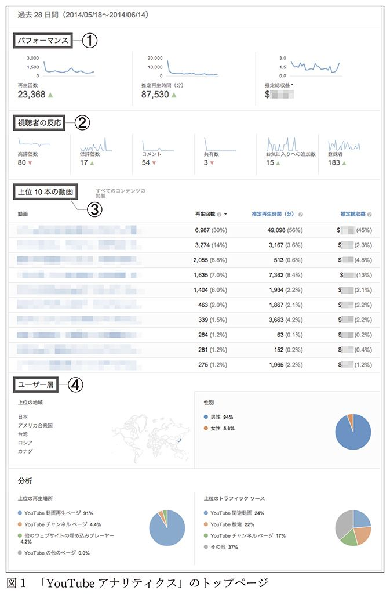
① 再生回数や推定総収益など「パフォーマンス」に関する項目
② 高評価・低評価をつけた人の数、コメント数、お気に入り数など「視聴者の反応」
③ チャンネル内の、再生回数が上位10本の動画のリストアップ
④ 視聴ユーザー層などに関する項目
これも私の経験上の推測ですが、トップページでのこの項目の並びは、だいたいチャンネル運営において重要なポイントの順になっています。
再生回数や収益の推移を見ると、視聴者の反応を予想することができます。自分の作ったコンテンツと視聴者の趣向がマッチしているのかを知り、今後、どういった題材を取り上げていくのか、方向性を考えるのに大いに役立ちます。また、上位10本の動画は、チャンネルを牽引する人気動画です。こういった上位の動画のみでチャンネル全体の収益額の大半を占める場合もあるので（まさにパレートの法則ですね）、他の動画に比べてなぜ再生され続けるのか、きちんと分析しておきたいところです。
チャンネル全体の集計だけでなく、細かく指定して分類すると、任意のコンテンツ、地域、日付（期間）のデータも表示されます。また、ＣＳＶファイルとしてダウンロードもできますので、エクセルのような表計算ソフトを使ってさらなる分析に応用もできるのです。特に、複数のチャンネルを運営している方にとって利用価値が高いでしょう。
次のページには、推定収益額と再生回数の比較が表示されます（図２）。
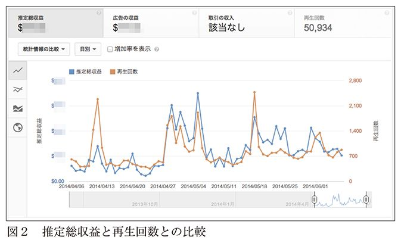
推定総収益は再生回数に因るため、この２つのグラフにはある程度の相似性が見られます。また、先述のようなチャンネル登録を促す動画を投稿した際には、その前後で登録者がどのように推移したか見てみるとよいでしょう。
アクセス解析結果から、再生回数の多かった動画の人気の理由について仮説を立てて、さまざまな角度から検証してみます。ただ単に人気の高かったものと同じような動画を投稿するのではなく、タイトルの付け方がよかったのだろうか、あるいはサムネイルが目立ったのかもしれない、などと細かく検証しながら、次の投稿に生かすのです。
また、視聴数を支えているトラフィックソースは何なのか――たとえば、ＹｏｕＴｕｂｅやツイッター上で何らかのキーワード検索をした結果、自分の動画にたどり着いたのか、あるいは外部のウェブサイトから関連付けられて見られたのかなど――を知ることもできます（図３）。ＹｏｕＴｕｂｅ内で見られるだけでなく、ツイッターやフェイスブックのようなＳＮＳでたくさん共有されたのであれば、その動画の続編や後日譚を作るのもいいかもしれません。その場合は、ただ動画を投稿するだけでなく、積極的にＳＮＳでのシェアを促すことも重要です。
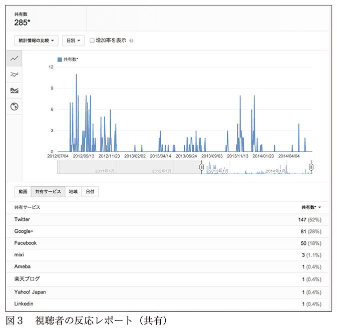
ネット上で何か商品を売るにしても、こうした動画を視聴してもらうにしても、ある程度は視聴者像を知っておく必要があります。女子高生のファンが多いのに高性能のシェーバーをお勧めしても意味がありませんし、仮に、もしそのように異なる視聴者層に多く見られたとしたら、それはそれで何か理由があるはずです。動画の視聴者層をこまめにチェックすることは、ちゃんと狙ったところに投下できているか、はたまた予想外のウケ方をしていないか知ることになるのです。
ＹｏｕＴｕｂｅ アナリティクスでは、視聴者の年齢や性別、そして再生された地域までも知ることができます（図４）。私のチャンネルは、テクノロジーや最新のデジモノなどに関心が高く、お小遣いも増えて高額商品が買えるようになってくる30代後半から50代の男性に向けて配信しています。また、そういった物にあこがれる中高生もターゲットにしています。ユーザー層のレポートは、その方向性が妥当かどうか、ちゃんとコンテンツとして合っているのかを知る、まさに指針になっているのです。
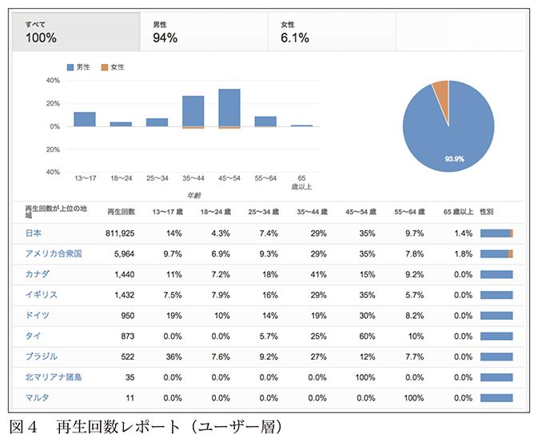
ユーザー層と似て非なるものとして、どの端末で見られているかを表す、「端末」再生回数レポートがあります（図５）。
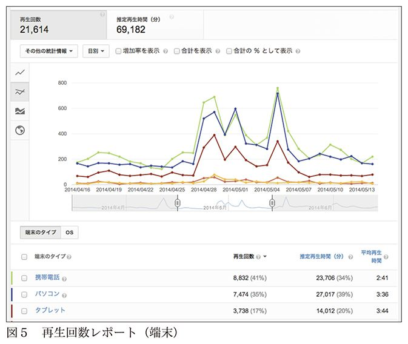
これは文字通り、視聴端末がパソコンなのか、携帯電話か、タブレットか、といったデータの集計です。携帯電話からの視聴数が多ければ、小さな画面でも読める大きさの字幕を付けたり、ウエストショットで撮影していた人物をバストショットや顔のアップショットにすることで、より見られやすくなるかもしれません。
端末別に平均再生時間も集計されています。私の知る限りでは、携帯電話よりもタブレット、さらにはパソコンと、画面サイズが大きくなるにつれて視聴時間が長くなる傾向があります（図５右端の数値）。そのことによってどんな影響があるかは一概には言えませんが、より長く動画を見てもらいたいなら、タブレットやパソコンに向けた工夫をするのも手です。逆に、もし携帯電話での視聴割合が大半を占めているなら、携帯電話での平均再生時間を考慮した短めの尺に収めるほうがよいでしょう。あくまでも仮説と検証をお忘れなく。
「視聴者維持率」再生回数のレポートでは、動画が再生されてから、視聴者がどの時間まで見ていたかが分かります（図６）。内容や全体の尺によって大きく変わるところがありますが、視聴者がどこで「離脱」したか（離脱箇所）を知ることができます。何の展開もないダラダラとした動画になっていれば、途中で視聴をやめてしまう人は多いでしょう。あるいは、視聴者に不快な思いをさせるポイントがあったのかもしれません。
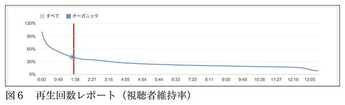
ダラダラとした映像が味になるケースもありますが、だいたいどんな動画でも、最初の10～15秒で視聴者の心をつかめなければ後はありません。
見られる動画を作るにあたり、どのくらいの尺に仕上げるかという時間感覚は大切です。結論から言えば、最初から最後まで再生される動画作成のコツは、トータルで90秒。２００５年のある日、私はこう気が付いたのです。
当時、私はフリーランスとしてウェブやグラフィックのデザイン、ＣＧ映像などを手がけており、おもな仕事場は自宅の一室でした。ときには気分転換もかねて近所のファミレスに入り、夜通し作業することもありました。早起きが苦手なうえに昼夜逆転も当たり前の生活で、クライアントのオフィスに出向いての打合せなどは、たいてい午後から夜にかけて。つまり、東京で働きながらも、朝の満員電車とは無縁の生活だったのです。
ある朝（といっても徹夜作業で迎えた朝ですが）、私は駅前のファミレスでいつものように仕事で使う絵コンテを描きながら、ある舞台俳優たちのポッドキャスト番組をＢＧＭ代わりに聴いていました。ふと窓の外に目をやると駅のホームが見え、スーツを着た人々が満員電車に押し込まれる、いかにも東京的な朝の通勤風景が繰り広げられていました。
はて？ 私が今聴いているポッドキャスト番組は、彼らも同じように楽しめるのだろうか。そんな疑問が湧いてきました。その番組は、ラジオ番組のように長い尺で、数人が気ままにしゃべって30分、ときには１時間といった具合。取留めもないトークが、オープニングテーマ曲・エンディングテーマ曲に挟まれている構成でした。私自身は作業時のＢＧＭとして聴いていたため、番組の尺が長ければ長いほど間が保ってありがたかったのですが、世間一般の方々が通勤通学時に消費するコンテンツとしてはどうでしょうか。
さっそくリサーチをするべく、朝の通勤電車に揺られて都心のオフィス街へ何度か出かけてみました。満員電車に乗り込んで、周囲と押し合いへし合いしつつポケットからｉＰｏｄを取り出し、ヘッドフォンをつけて動画を見始めるのですが、混み合った車内ではｉＰｏｄの画面を見やすい位置に構えるのも一苦労。また、電車を乗り換えたりしていると、なかなかまとまった視聴時間がとれません。電車移動中に読書しようと思っても、意外とせわしなくて集中できなかった経験がある人も多いでしょう。
こういったことを何度か繰り返してふと考えついたのが、「通勤中にｉＰｏｄで見る動画コンテンツに最適な尺はおよそ90秒」だということです。私自身の体験から得た仮説でしたが、のちにＹｏｕＴｕｂｅ視聴時間の解析などからも裏打ちされ、定説となりました。
ただ最近では、テレビ代わりにＹｏｕＴｕｂｅを見ている若年層視聴者も増えており、90秒では物足りないらしく、「どうしてこんなに短いんですか？」と聞かれることもあります。
当然のことながら、単純に時間を90秒程度に収めるだけでは見てもらえません。90分の長編映画なら最初の10分で観客を引き込まなければいけないというセオリーがあります。いわゆる「つかみ」です。これが90秒のＹｏｕＴｕｂｅ動画の場合だと最初の10秒が勝負。動画の冒頭、アバンタイトル（オープニング前に流れるシーンのこと）の段階で、ちらっとオチを匂わせるくらいの勢いが必要です。
では、90秒を超える尺ではいけないかというと、そんなことはありません。90秒で視聴者が離脱するということであれば、60秒から90秒にかけて起承転結の「転」をあてて、その後が気になるような構成で回避することも可能です。長編映画にしろテレビドラマにしろ、飽きずに最後まで注目できる作品は、それぞれのシーンや話の区切りのなかで山場がちゃんとあるものです（図７参照）。
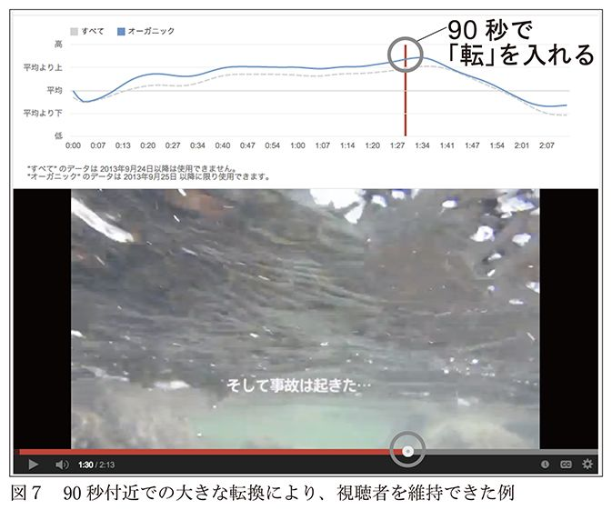
現代人の耐久時間感覚がどんどん短くなっていくのに、動画の編集方法が同じというわけにはいきません。私はビデオブログを始めるに当たって、制作の仕方を根本から考えてみました。まず、カメラ位置を変えずに通しで撮影し、あとで不要な箇所をどんどんカットしていくという手法で、私の名前にちなんで「ジェットカット」と呼ばれたりします。従来の映像用語にある「ジャンプカット」が由来です。
私はそもそもしゃべりのプロではありませんし、日常のスキマ時間を活用してのビデオブログに、いちいち台本を用意する手間などもかけていられません。だから当然、撮影中に言葉が出てこず間が空いてしまったり、同じ話を繰り返したり、「えーっと」「あのー」という不要な言葉を連発したりします。そういった無駄を極限まで省いて、純粋な情報のみを取り出す方法がジャンプカットです。
映像の編集というと、どうしてもカット同士をつなぎ合わせる作業といった印象が強いですが、ジャンプカットの場合は間引く作業、足し算ではなく引き算です。ときには話している途中にまでカットが及ぶこともあります。
この引き算の手法は、時間軸の圧縮とファイルサイズの軽減にもつながります。映像における時間軸の圧縮とはすなわち、単位時間あたりの情報量の増加です。「えーっと」「あのー」を削除すれば、そうなることは自明でしょう。また総尺も縮まります。３分程度のスピーチも、よくよく吟味してジャンプカットしてみれば、90秒に収まることがあります。尺が半分の動画になるため、ファイルサイズもほぼ半分です。
同じ情報を伝達するなら、ファイルサイズが小さいほど有利です。ダウンロード／アップロード時間が短くて済むのは、皆さんよくご存じでしょう。また、モバイルポケットルータのような移動体通信サービスでは現状、通信データ量に制約があります。たとえば直近３日間で通信したデータ量が１ギガバイトを超えたりすると、他ユーザーとの公平性を期すために速度制限をかけられる場合があります。ですから、動画に限らず静止画でもウェブページでも、作り手の多くはファイルサイズの軽減に努めています。
実を言えば、古典的な映像文法においては、人が話している場面でのジャンプカットは、どちらかというと御法度なやり方です。画面が変わらないのにカットするのは――特に私のようにきわめて頻繁にカットするというのは――映画やテレビドラマでの演出として用いられることはまずありません。せいぜい、テレビのインタビュー映像などで、頻度を押さえて使われるくらいでしょう。
先日も、あるプロの映像制作者から「素材が長過ぎたから、ジェットカットしちゃったよ」と声をかけられました。そう言われると素直にうれしいのですが、反対に、この業界に長くいる人からは否定的な意見をいただくこともあります。何より私自身ですら、当初は「映像文法としては奇妙な、こんなやり方でいいのだろうか？」という迷いがあったくらいですから、無理もありません。
しかし、インターネットでの動画配信は始まったばかりの分野です。常識にとらわれない新しい手法がどんどん増えてこなければ、成熟した文化になりえないでしょう。
日々ＹｏｕＴｕｂｅで動画を公開するためには、どんな技術が必要なのでしょうか。まずは、一般的な映像作品の制作プロセスから考えてみましょう。
最初に必要なのは企画立案です。みんなでネタを出し合ってブレインストーミングする必要もあるでしょう。そうしてある程度固まったものを企画書にまとめます。大勢が制作に関わる場合には、この企画書を基にスタッフや出演者と情報共有する必要があります。
必要であれば、台本や脚本も用意します。企画とほぼ同時に構成が固まり、そのまま撮影に入れる場合もあれば、セリフの一つひとつまで書き記すものもあります。さらには画的なところまで完成イメージを共有しておきたい場合には、絵コンテまで描く人もいます。ドキュメンタリーでは不要かもしれませんが、アニメーション作品では必須です。
この段階で、撮影に際して用意しておくべき小道具・大道具、衣装、そして撮影機材類や人員などが見えてきます。撮影が複数日に及ぶ場合には撮影スケジュール（香盤表）も組みます。
ここからようやく、実際に撮影を始めることができます。撮影現場には、カメラマンや照明、その他の機材のオペレーターが必要です。さらには現場全体を統括する監督の存在が不可欠です。
無事に撮影を終えると、今度は編集作業が待っています。最近は概ねコンピュータを使ったノンリニア編集となっていますので、フィルムを切り貼りしていた頃よりは随分と楽になりました。それでも、何度も何度も見返して、様々なバリエーションを試すことは少なくありません。
編集段階に入る頃には、プロモーション担当者も映像素材を持って走り出していることでしょう。各媒体で紹介してもらえるよう、また口コミで話題になるよう手を尽くします。そうして最終的に作品が公開に至ります。
あくまで一例ですので、多少の違いや大きく違う場合もあり得ますが、ＹｏｕＴｕｂｅ動画と比較するならこれで十分でしょう。
次に、個人がＹｏｕＴｕｂｅに動画を公開するまでを、私の例で考えてみましょう。
●企画立案......不要です。私の場合だと、レビューする製品の選定に当たります。たいていは、私が必要に迫られて購入した製品や、物欲のままに入手した物などを順次取り上げているので、企画というほどのものはありません。完全に何から何まで一人でやるので、会議もなければ書面に起こす必要もありません。私が承認して、私だけが知っていればＯＫ。
●台本／脚本......場合によっては多少の構成を考えもしますが、基本的には不要、ノープランです。
●編集......「ジェットカット」を多用して、ムダなところをざくざく切ってつなぎ合わせ、短い動画に仕上げます。
●撮影......最もスキルが問われるのは、何といっても実際に撮影する段でしょう。カメラの操作は忙しいし、照明にも音声にも配慮しなければならないし、出演して話し続けるのも自分自身です。一つひとつ真面目にやっていると、何時間あっても終わりません。あとで紹介する、ショートドラマを動画で撮影している劇団スカッシュは、４人で出演・照明・撮影とその補助などをまかなうため、忙しく役割を交代しながら撮影しているといいます（第５章「コラボレーションＣＭで、企業と視聴者の間に橋をかける」参照）。
私の場合は一人身の気楽さもあり、当たり前の方法はとらずにここはうまく逃げています。もともとサラリーマン時代の空き時間で始めたビデオブログですから、どうにも時間的余裕はありませんでした。「素人の素人によるビデオブログ」という体で、だましだましやっているのが現状です。だからこそ続けて来られたというのも本音です。
自分の動画のダメな点を挙げればキリがありませんが、まず照明がよくありません。顔が暗い。カメラと自分の位置関係を調整すれば改善されることもありますが、ふつうの家のふつうのリビングルームでちまちま撮影しているため、なかなかそうもいきません。スタジオ撮影なら２発ほど照明を焚くところですが、そんなことをしていると、すぐに家人から邪魔者扱いされてしまいます。では、そんな肩身の狭い中年ユーチューバーはどうしているかというと......私は暗いままで撮影をすませ、あとからビデオ編集ソフトを使って明るく調整します。
もちろん、強い照明を当てるのに比べれば具合のよい結果にはなりませんが、諸々の事情を考えると、これが一番の方法に思えます（ビデオカメラによっては顔検出機能によって顔の部分だけ自動的に明るさを増すというのもありますが、なかなか望むような結果になりません）。
音声も同様で、本来ならマイクを立てておきたいところですが、撮影中は私自身が出演するため、同時に音声モニタまでやるわけにはいきません。最近はビデオカメラの内蔵マイクも音質が良いので、そのまま同録しています。
さらに、照明とも大いに関係するのですが、ホワイトバランスがカットによってバラバラという難点もあります。わが家のリビングは電球色の蛍光灯を使用しているのですが、昼間の窓からの日差しや使用機材の液晶画面からの照り返しなど、複数の光源があると非常に具合が悪くなります。それでもホワイトバランスは利便性を考えて毎回オートに設定しているので、ちょっとした光源の変化で部分的に青い照り返しができたり、真っ赤になったりと差が出ます。今のところ編集時に補正することもありませんが、将来的にはきちんとしたいところです。
とはいえ、スマートフォンで撮影した動画が感動を呼ぶ時代ですから、クオリティを求めるよりも、機を逸しないスピーディーな動画制作が功を奏すはずです。
何から何まで一人で行う動画制作の醍醐味は、こういったスピード感にもあります。いちいち会議を開いたり、出演者やスタッフのスケジュールを調整しているようでは間に合いませんし、人手も足りません。日本を代表するユーチューバーの一人、ＭＥＧＷＩＮさんの決めゼリフ「俺が俺にオンデマンド」は、そんな事情の核心をついた表現です。
なおＹｏｕＴｕｂｅは、ロサンゼルスや東京・六本木ヒルズなどに、ＹｏｕＴｕｂｅ Ｓｐａｃｅという名のスタジオを用意して、ユーチューバーに最新の設備や撮影機材を提供しています。ここなら、自宅の生活感あふれる撮影環境から抜け出して、テレビ番組に匹敵するような絵面で撮影することもできます。この施設を活用し、最新デジタル機器を紹介する本格的な番組を制作する中学生ユーチューバーも登場しています。
さて、才能あふれるクリエイターがいくら丹精込めて良質の動画を作ったところで、視聴者に見てもらえなければ何の意味もありません。
クオリティの高い動画を作ることよりも、鍵を握るのはむしろプロモーションです。大勢にシェアされるよう、普段からＳＮＳなどで告知する態勢を整えておくことが大事です。ツイッターなどで非常に多くシェアされた結果、大手ニュースサイトにも掲載されるということもあります。結局は、ネット上でのコミュニケーション能力や情報拡散力が物をいいます。
インターネットは基本的にテキスト主体の文化、紙媒体から脈々とつづく「見出し」ありきの世界です。みなさんも、テキストリンクになっている見出し＝動画のタイトルから「面白そう」と感じたものだけポチッとクリックしているでしょう。
ＹｏｕＴｕｂｅに動画をアップロードすると、タイトル欄にはひとまずその動画のファイル名が入力されます。デジタルカメラが自動的に割り振ったままの「IMG0003.MP4」なんていう無意味なものはいけません。必ず動画の内容に即したものに書き換えなければなりません。
たとえば、チーズケーキを食べている動画のタイトルが単に「おいしいチーズケーキ」では物足りません。それはどんなチーズケーキですか？ 有名なお店のチーズケーキ？ 無名ブランドだけど絶品？ 見た目が面白い？ もちろん大げさすぎたり嘘にならないよう、あくまで動画の内容に即したテキストでなければいけません。
動画の内容によっては、海外でも話題になる可能性があります。文字数が許すなら英語版タイトルも入れておくと、より多くの人の目に留まるかもしれません。「The Best Cheesecake Ever!史上もっとも美味しいチーズケーキ！」という感じでしょうか。もちろん中国でウケそうなら中国語、イタリアでウケそうならイタリア語、という最適化を考えてみてもよいかもしれません。
タイトルと同じくらい重要なのが、サムネイル画像です。特にモバイル端末のＹｏｕＴｕｂｅアプリでは、テキスト情報よりもサムネイルを重視したレイアウトになっています。
現在は投稿者側でサムネイルを指定することができますが、少し前までは、ＹｏｕＴｕｂｅパートナーのみに許可された機能でした。パートナー以外の一般ユーザーの場合には、ＹｏｕＴｕｂｅのシステムが動画内から自動的に画像を抽出し、サムネイルに設定していたのです。
また一時期は、再生時間の真ん中あたりのカットが、ランダムにサムネイルに設定されていました。これを逆手にとって、本編とはまったく関係のないセクシーな女性の画像を、ちょうどサムネイルに抽出されそうな箇所に挿入する裏技も流行りました。そういった意図的な「釣り」行為ではないにしても、薄いピンク色のワンピースを着ている女性が、照明の加減で全裸のように見えてしまうサムネイルもあり、私も思わず凝視してしまったものです。そういった動画が万単位でグングン再生数を伸ばしていくのですから、サムネイルが及ぼす影響は馬鹿にできません。
私はサムネイルに、顔をできるだけ大きく入れるようにしています。私の動画の多くは製品レビューなので、あくまで主役はモノ。とはいえ、無機質な工業製品よりも人の顔のほうが注意をひきます。私のようなおじさんの顔がアップで表示されては逆効果にもなり得ますが（笑）、人の顔は視認性が高いのです。サムネイルに顔のアップを表示することは、ネットで公開されているＹｏｕＴｕｂｅの「クリエイター ハンドブック」でも推奨されています。これは、ＹｏｕＴｕｂｅを始める人に向けたマニュアルですね。
ただし、すべての動画で顔が効果的であるとは限りません。たとえば、新幹線や東京スカイツリーを撮影した場合などでしょう。クリエイター ハンドブックによれば、「サイズが大きくても小さくても見栄えがすること」「視覚的にインパクトのある画像」「明るく、はっきりしたコントラスト」がコツであるとされています。要は、いかに目立つかということになってくるのでしょう。もちろん、いくら目立つからといって、動画の内容から大きく逸脱するものはいけません。
また、動画を視聴するきっかけがＹｏｕＴｕｂｅのウェブサイト内だけとは限りません。動画好きな人なら、ＹｏｕＴｕｂｅのサイト内だけを長時間閲覧しているかもしれませんが、それよりもツイッターやフェイスブック、ブログでシェアされた動画を再生して見る人のほうがずっと多いでしょう。それに、グーグル検索の結果でもＹｏｕＴｕｂｅ動画が表示されることが多いですよね。そういったソーシャルメディアや検索エンジンとの親和性を高めることも忘れてはいけません。
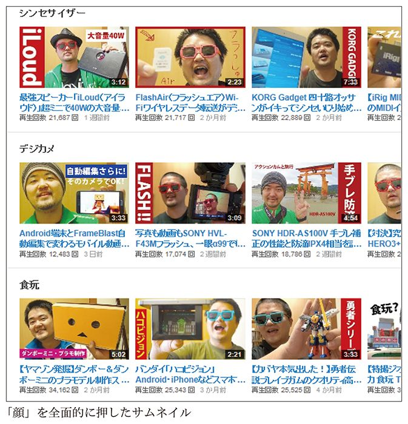
では、どんなテーマで動画を撮ればいいのでしょう。例として、面白いチャンネルを二つご紹介しましょう。
インスタントラーメンのレビュー動画チャンネルを持つｔｏｎｔａｎｔｉｎさんという人がいます。パッケージの紹介から始まり、調理シーン、出来上がりのカットなど、トータルで30秒から１分間程度の動画を多数投稿しています。パターンは毎回同じで、商品を紹介したら、鍋に麺を入れて煮て、手際よく粉スープを溶き、丼に麺を移して完成です。なぜか、ソーセージを一本投入することも多いです。常に同じ構成なのにもかかわらず、不思議と飽きません。スーパーで売られているおなじみのラーメンから、限定商品、冷やしラーメンや焼きそば、フォーなど海外の製品まで、世界にはこんなにもたくさんのインスタントラーメンが売られているのかと驚きつつ、毎回面白くてつい見てしまいます。
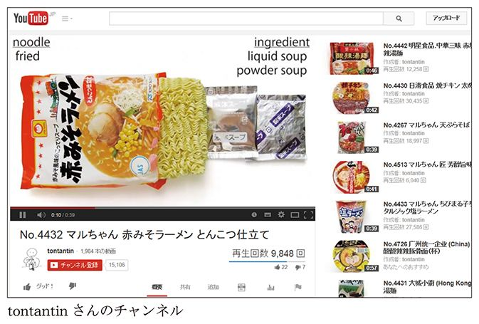
そして、最近ものすごい勢いで人気が高まっているのが、おもちゃを専門にレビューしている「レオンチャンネル」です。アニメや特撮ヒーローのフィギュアや食玩を紹介するチャンネルです。
動画にはいっさい顔を出さず、カメラを机上に向けて据え、ひたすら食玩やプラモデルを手に取って紹介しています。対象としている商品は、東映の仮面ライダーやスーパー戦隊、円谷プロのウルトラヒーローなどで、製品ラインナップ中のほぼすべてのアイテムを網羅しています。
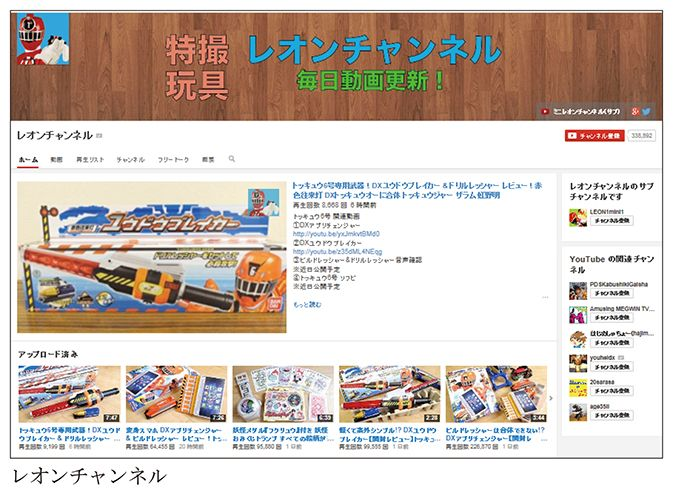
私などは、自分の好きなものだけ、たまたまお店で売られていたものなどを買ってきては紹介しているのですが、ｔｏｎｔａｎｔｉｎさんもレオンチャンネルさんも、市場に出回っている関連新商品はあまさず取り上げているのではないでしょうか。彼らのチャンネルそのものが、貴重なデータベースになっているとも言えます。
ぶれないこと、そして、テーマを決めたら徹底的に（本当に徹底的に）拾い上げること。この二つが、彼らの大きな強みでしょう。そうすれば、関連商品をキーワード検索したネットユーザーから、動画を見つけてもらいやすくなります。
そうは言っても、撮りたいものがまったく浮かばないという人もいるでしょう。たとえば、男性だからといってメイクアップ動画が作れないわけではありません。彼女や奥さんとやってみれば、意外に視聴者が集まるかもしれません。娘さんのヘアスタイルアレンジを撮影して多くの視聴数を得ているチャンネルもあります。あなたが美容師なら、練習がてらブローのコツを教える動画を作ってみるものいいでしょう。ペット動画もコンテンツとしては鉄板です。なかでもネコ動画はとても人気が高いですよね。
身の回りを見渡してみれば、動画として情報発信するに値することはたくさんあります。それがちょっとしたお小遣いに化ける可能性は大いにあるのです。
ＹｏｕＴｕｂｅをよく見ているという、私と同世代の知人と話すときに、必ず話題に出るのが「低年齢層ユーザー」についてです。小中学生くらいの低年齢層ユーザーが増えていますが、この背景には、主にスマートフォンを使用するデジタルネイティブ世代のユーザーが増加したことも挙げられるでしょう。
視聴者側だけでなく、子どものユーチューバーも増えています。４、５歳の子どもが、お気に入りのトミカや食玩などを紹介しているチャンネルも人気があります。おもちゃが大好きな同じ世代の子どもたちに人気のようで、再生回数が数十万にもおよぶ動画もあるほどです。忙しいお母さんが、家事をしている間に子どもにｉＰａｄを渡して、同年代の子が出演している動画を見させているという話も耳にします。
つまり、低年齢層に受けるコンテンツを狙って作れば再生回数を大きく稼げることになるわけですが、低年齢層にもウケるようにすると、脈絡のない誹謗中傷が書かれたりしてコメント欄が荒れることが多々あります。私には高校生の息子がいるのですが、「うちにも子どもがいるけど、ＹｏｕＴｕｂｅにバカな書き込みをしたりしているんだろうか？ まさか、そんなことはしてないはず。いや、でもなあ......」などと親同士で話が弾むこともあります。
低年齢層ユーザーはどんどん増えていますが、実はＹｏｕＴｕｂｅ側は13歳未満の児童の利用を奨励していません（ＹｏｕＴｕｂｅ利用規約12「本サービス条件を受諾する能力」による）。にもかかわらず、ＹｏｕＴｕｂｅアナリティクスではその年代の視聴者もレポートされており、ダブルスタンダードであることは否めません。
しかし、無用なトラブルを避けるためにも年齢制限は遵守すべきです。もちろん、子どもや若者のクリエイティビティを否定するわけではありませんし、そういった視聴者との交流を非難するつもりもありません。ただ昨今の、ＹｏｕＴｕｂｅでスターになれる、お金を稼げるといった風潮に流されて幼いうちから始めるのだとしたら、それは少し考えものです。
また、メインの視聴者が低年齢化していることも影響しているのでしょうが、既存の映像の文法が通じなくなってきているのを痛感します。映像にしても演劇にしても、セリフだけでなく演者の動作や表情で観客に伝える「黙して語らず」な演出は、ごく一般的です。ところが、ＹｏｕＴｕｂｅではそれが伝わらないこともあります。
たとえば、私が番組内でカレーライスを食べたりビールを飲んだりして、一口飲んで美味しさを噛みしめていると、間髪入れず「しばらく黙っているけど、不味いんですか？」といった子どもからのコメントが入ったりします。美味しいか不味いかは、表情や間から何となく感じ取れるものです。何にせよ、子どもには一から丁寧に説明しなければならないので、コミュニケーションにも工夫がいります。
こうした風潮は、ネット動画の普及に端を発したものではなく、それ以前からのテレビの変化が一因となっています。90年代の中頃から必要以上にテロップが多用され、笑いどころや重要なセリフが強調されるようになりました。制作側の意図が一目でわかるので、前後の文脈を読み取らなくても、視聴者が番組を楽しめるようになったのです。こうしたテレビの過剰な演出が広まり、セリフやテロップでの説明なしでは映像から意味を読み取れない人が増えたというのが実情でしょう。
視聴者として想定していないけれども、たくさん動画を再生してくれるお客さん――そんな低年齢層ユーザーにどう対応するかは、今のＹｏｕＴｕｂｅが抱える課題のひとつでしょう。
テレビや雑誌などで「稼ぐユーチューバー」が大きく取り上げられていますが、しかし本当に、動画投稿は稼げるオイシイ仕事なのでしょうか。
実は私は、ＹｏｕＴｕｂｅで稼げるという期待が高まりすぎている風潮には、少し違和感を覚えます。すでにブログなどで広告収入を得ている人であれば、動画を加えることで広告を表示する場所がひとつ増えるという点でプラスにはなるでしょう。しかし過去にもアフィリエイトサイトやブログ運営など、「ネットで稼ぐ」というネタが現れては消え、また現れては消えというのを繰り返しています。
ごく一部の成功者だけを祀り上げ、メディアではブームを煽ったりしますが、それに続く成功者がつぎつぎ出現しているという話は聞きません。芸能人や経営者と違い、失敗してしまった人たちが注目を浴びることもなく、貴重な失敗談を聞くこともまずありません。
何万回も再生される動画は、どのような試行錯誤を経て、どのように作られているのでしょうか。動画で食べていこうと思う人は、本来ならば、そこから学ぶところが大いにあるはずです。本章以降、動画界でトップクリエイターとして活躍している方へのインタビューを交え、そのヒントを探っていきましょう。
再生回数10億回、月間平均再生回数８５００万回、チャンネル登録者数４００万人――。小中学生向けにメイン視聴者を絞り込み、日本で最も人気があるユーチューバーとなったのが、先にも述べたＨＩＫＡＫＩＮという25歳の青年（２０１４年７月現在）です。成功を収めたユーチューバーといえば、まずこの人を取り上げないわけにはいきません。
彼は、自分の特技を足がかりにして、抜群の知名度、人気度を獲得し、トップユーチューバーになりました。もともとは、ヒューマンビートボックス（Human Beatbox：口を使って、ベース音やドラム音などさまざまな楽器の演奏を一人で再現するテクニック）の達人として注目されており、そこから縁あって動画の世界に入っていったのです。
２００６年当時、高校生だったＨＩＫＡＫＩＮさんは、趣味でヒューマンビートボックスプレイを行い、その録音を「レッツアカペラ」というサイトの掲示板に投稿していました。やがて、サイトの常連たちから「すごい人がいる」と注目され始め、海外サイトのＵＲＬを貼るようになったのが、ＹｏｕＴｕｂｅとの出合いでした。
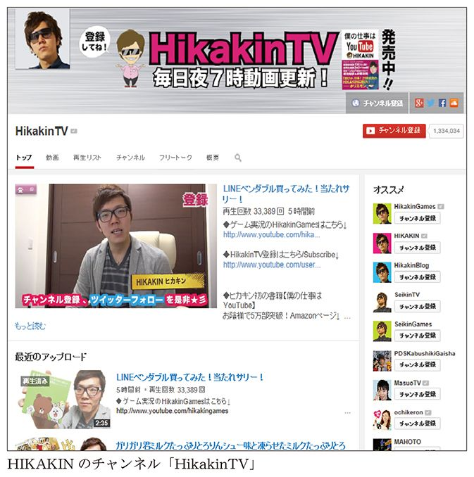
「当時のＹｏｕＴｕｂｅには、日本人は誰も投稿していなくて、すべて英語でした。パフォーマンスをしている人も全員外国人です。『海外の怪しいサイトかなあ』と思いながらも、しだいに毎日チェックするようになっていきました。
初めて自分のパフォーマンスをＹｏｕＴｕｂｅに投稿したのは、２００７年の１月です。舞台は実家の階段、撮影機材は携帯電話のカメラでした。最初のうちは地道に月１本の頻度で動画をアップしていたのですが、反応といえば外国人のコメントが十数件つくくらいにすぎませんでした。日本人からのコメントは、もちろんほとんどありません。２０１０年くらいまではそんな調子で続き、投稿の頻度は２～３カ月に１本だったでしょうか。それでも、地道にやっていたおかげで、登録者は数千人くらいまでには増えていました」
ブレイクするきっかけとなったのが、２０１０年６月17日にアップした、スーパーマリオのヒューマンビートボックスの動画です。再生回数は、24時間で20万回、２週間で２００万回、登録者も一気に数万人まで増えました。この動画は、２０１４年現在すでに再生回数が２５００万回を超えており、コメントも３万７０００件に上っています。当初、アクセスの90パーセント以上はアメリカからでしたが、その後日本からのアクセスも急増しました。
「この動画を撮影したのは、当時勤務していたスーパーマーケットの社員寮です（笑）。部屋は狭い上に木造でしたから、話し声も隣に丸聞こえです。隣に住んでいる後輩の迷惑にならないよう、できる限り壁から離れて、隅っこで録音するように心がけていました。それでもうるさいと思われていたんじゃないかな。Ｍａｃの内蔵ウェブカメラで撮影し、編集まで全部一人で作業しました」
この動画は、アメリカのテレビニュースで何度も何度も取り上げられました。アメリカのヤフーのトップページに"Japanese amazing guy"と大きく掲載されたことで弾みがつき、膨大なアクセスを呼び込むことになりました。これを機に、ＹｏｕＴｕｂｅからパートナープログラムの招待を受けてパートナーにもなりましたが（この当時、ＹｏｕＴｕｂｅパートナーはＹｏｕＴｕｂｅ側が選んだ人しかなれませんでした）、いきなりＹｏｕＴｕｂｅ一本で食べていこうとはしませんでした。これまで通り、スーパーマーケット勤務も続けます。そんなＨＩＫＡＫＩＮさんに、次の転機が訪れました。
「スーパーマリオの動画をアップしてから１年後、ＹｏｕＴｕｂｅパートナーフォーラムというイベントが開催されて、僕も招待されました。世界から有名なユーチューバーが集まるイベントだったのですが、衝撃的だったのはアメリカ人のミシェル・ファンさんのスピーチです。
ミシェルさんはメイクアップアーティストで、ＹｏｕＴｕｂｅで公開していたメイクアップマニュアルが爆発的な人気を呼んで、セレブになった人です。彼女は、好きなときに好きなように動画をアップしていて、それが仕事というスタイルをとっています。当時、僕のチャンネルも確かにそこそこアクセスはありましたが、収益化はそれほど考えていませんでした。ＹｏｕＴｕｂｅパートナーになったといっても、せいぜいお小遣い程度。ＹｏｕＴｕｂｅを仕事にしてそれで食べていくなど、想像したこともありませんでした。けれど、ミシェル・ファンのスピーチを聞き、ＹｏｕＴｕｂｅ側からも『工夫すればミシェル・ファンのようになれますよ』とお聞きして、自分でもやれるのではないかという気持ちになりました」
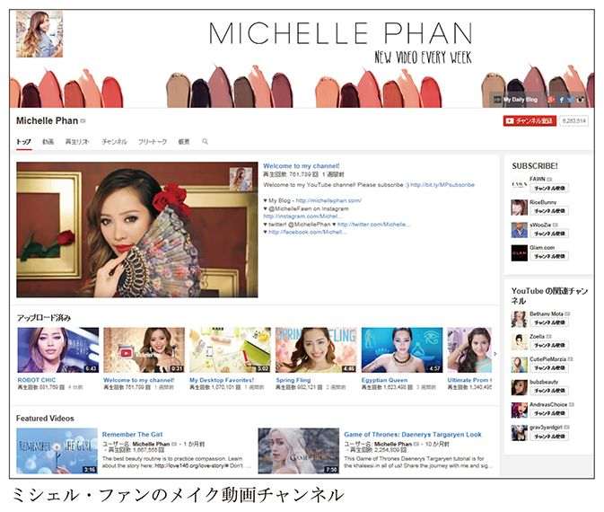
ミシェル・ファンに影響を受け、収益化を真剣に考えるようになったＨＩＫＡＫＩＮさんは、わずか３カ月ほどで、番組のスタイルを大幅にチェンジします。既存曲のカバーもやりつつ、オリジナルのパフォーマンスの頻度を増やしました。その理由は、ＹｏｕＴｕｂｅパートナープログラムの規約と関係があります。
２００８年、ＹｏｕＴｕｂｅとＪＡＳＲＡＣは包括許諾契約を結び、既存曲のカバーを使った動画を公開することに問題がなくなりました。
カバー曲には、原曲のファンが存在しますから、原曲の人気に比例して、長期間にわたって再生されるのです。ただ、カバー曲を使った動画で再生回数を伸ばせても、そこから収益を得ることはできません。一方、オリジナル曲のパフォーマンス動画から収益は得られますが、うまくヒットさせないとアクセスがピタッと止まってしまうという欠点があります。
ミシェル・ファンのスピーチから３カ月後、既存曲のカバー以外のパフォーマンス動画からも収益は得られるようになりました。一応食べていけるレベルにはなったものの、ＨＩＫＡＫＩＮさんはヒューマンビートボックス一本で続けていくことの難しさを感じるようになっていきました。
また、ヒューマンビートボックスは、ひとつのパフォーマンスを完璧に仕上げるために、１カ月程度は練習時間が必要です。音を重ねるとなると、各パートの音程を覚える必要もありますから、さらに時間がかかります。そこまで手間をかけても、カバー曲の場合は１円も入りませんし、オリジナルがウケるとも限りません。
「音楽系のＹｏｕＴｕｂｅチャンネルで食べていくのは、特に日本では簡単ではないでしょう。海外だと、カバー曲をｉＴｕｎｅｓ Ｓｔｏｒｅで販売している人もいますが。ＹｏｕＴｕｂｅだけで収益が出ないとなると、他の音楽ジャンルと同じようにライブをたくさんこなさないといけません。ここでもビートボックス特有の難しさがあります。ビートボックスのライブをやって、『人間業じゃない！』と感心はしてもらえても、『いい歌だなあ』とファンになってもらうことは難しいのです」
それならば、ビートボックスを活かしつつ別のことにもチャレンジし、好きなときにカバー曲のパフォーマンスをすればいいのではないか？ そう考えたＨＩＫＡＫＩＮさんは、自分が好きなもの、ファンの人に楽しんでもらえるものを面白く紹介するチャンネル「ＨｉｋａｋｉｎＴＶ」を、ヒューマンビートボックスのチャンネルとは別に立ち上げることにしました。コンビニの新商品を紹介したり、たまにヒューマンビートボックスを披露したりといった、ゆるい作りになっています。
ビートボックスのチャンネルからファンが流れてきたこともあり、ＨｉｋａｋｉｎＴＶでアップした動画は、開設初期の頃から再生回数が１万回ほども稼げ、10代を中心に高い人気を得るようになりました。
「僕はけっこう用心深い性格なので、収益が勤務先のスーパーマーケットの月給を超えるまでは、会社を辞めるつもりはありませんでした。ある月に、給料と同じくらいの額を稼げたのですが、３カ月くらい継続するまでは待とうと。ＨｉｋａｋｉｎＴＶのほうに本腰を入れ始めたところ、翌月には収益が給料を超えたため、会社を辞める決心がつきました。いつかはビートボックスで食べていこうと思って新潟から上京してきましたから、最高な気分でした」
ＨｉｋａｋｉｎＴＶを軌道に乗せることに成功したＨＩＫＡＫＩＮさんは、活動の幅をさらに広げることになりました。
「請求書の発行や確定申告、契約書とか、もう全部はできないと悟りました。最近は、こういう業務を全部人に任せられるようになって、本当に助かっています」
トップユーチューバーとしてのＨＩＫＡＫＩＮさんを象徴するエピソードが、エアロスミスとの共演でした。
２０１３年、ＹｏｕＴｕｂｅ関連のイベントに招待されてシンガポールに滞在していたＨＩＫＡＫＩＮさんに、ある連絡が入ります。同時期に、やはりＹｏｕＴｕｂｅがスポンサーになっていた「Social Star Award」というフェスがシンガポールで行われており、バンド入れ替えの際に流すパフォーマンス動画として、ＨＩＫＡＫＩＮさんによるヒューマンビートボックスの動画を使いたいというオファーがあったのです。
「エアロスミスの出るステージに自分の動画が流れるのはすごい！」と思ったＨＩＫＡＫＩＮさんですが、話はそれで終わりませんでした。パフォーマンス動画を見たエアロスミスのボーカル、スティーヴン・タイラーさんが「こいつをステージに出そう！」と言い出したのです。
トップユーチューバーとカリスマロックバンドとの夢の共演――。ＹｏｕＴｕｂｅで人気になることは、そうした活動の場を越えての夢のコラボレーションをも実現させてしまうのです。
＊
ＹｏｕＴｕｂｅをやっているという方々と交流することがありますが、皆一様に「ＹｏｕＴｕｂｅで有名になりたい」と言います。私は芸能人志向ではなく単にブロガーのつもりでＹｏｕＴｕｂｅを続けているため、そういった方々へのアドバイスはあまりできませんが、必ずこう聞き返します。
「有名になってどうするの？」
裏を返せば「あなたは何を持ってますか？」「実態は何者ですか？」ということです。無暗に名前を売っても、憧れのバンドからお声などかからず、夜毎のイタズラ電話に悩まされるだけかもしれませんよ？
そのぶんＨＩＫＡＫＩＮさんの動画では、たとえ商品紹介においても、演出やちょっとした修飾としてビートボックスは欠かせません。今やＹｏｕＴｕｂｅでは大スターですが、彼のエンターテイナーとしての根っこは、ビートボックスの技術に裏打ちされていることを忘れてはいけません。ともすると、一夜明けたらスターになっていたかのようなサクセスストーリーがまことしやかに語られがちですが、ごくふつうの一般青年がＹｏｕＴｕｂｅに動画を公開したからといって、誰でもがゆくゆく芸能界で活躍できるというわけではないことはあきらかです。
一口にＹｏｕＴｕｂｅで成功を収めたといっても、天性の才能と磨き上げた実力でスターダムにのし上がった人もいれば、自国ではスターながらもさらに上のグローバルなステージに登った人、そして実力に見合わず（しかも予期せずに）有名になってしまった人まで様々です。
海外でももちろん、ＹｏｕＴｕｂｅに投稿した「歌ってみた」動画がきっかけで、芸能界に羽ばたいた事例は多くあり、まさにアメリカンドリームと言えます。
その筆頭となるのは、バンクーバー出身のジャスティン・ビーバーでしょう。ＹｏｕＴｕｂｅに公開していたカバー曲での歌唱力が高い評価を受け、歌手として音楽業界にスカウトされ、北米を中心に絶大な人気を誇りました（今では何かとお騒がせな有名人になってしまいましたが）。
また、アメリカの人気テレビドラマに「ｇｌｅｅ（グリー）」という、高校生のグリークラブ（合唱団）をテーマにした作品があり、このドラマの中で80年代を席巻したロックバンド・ジャーニーの名曲「Don't Stop Believin'」が、作品テーマを象徴する曲としてたびたび演奏されます。ジャーニーの全盛期のヴォーカリストであるスティーヴ・ペリーの広い声域、特に高音域を活かした壮大なスケール感の楽曲で、グリークラブの実力を示すにもうってつけの選曲です。
このスティーヴ・ペリーが90年代末にジャーニーを脱退して以降、長い間ジャーニーは低迷期を送っていましたが、２００７年にスティーヴ・ペリーの生き写しとも言える声と歌唱力をもったフィリピン人ヴォーカリストを得て、再スタートを切りました。彼はアーネル・ピネダといい、フィリピンでは既にデビューしていましたが、彼がジャーニーのカバー曲を歌っているＹｏｕＴｕｂｅ動画がバンドメンバーの目にとまり、見事フロントマンの座を射止めたのです。アメリカを代表するロックバンドがアジアのシンガーに行き着いたのは、世界中でＹｏｕＴｕｂｅのサービスが展開されているという要因も大きかったのです。
もちろんＹｏｕＴｕｂｅでもより多くの視聴者を得るには、英語は大きな武器になります。しかし、英語よりもはるかに音楽の力は大きく、それが顕著に現れた例が、韓国のミュージシャンＰＳＹ（サイ）のミュージックビデオ「江南スタイル（Gangnam Style）」です。ほとんど韓国語の歌詞ですが、ややダサめながらノリがよく耳に残るダンスビートとコミカルなダンスによって、言語に関係なく楽しめる作品です。件のジャスティン・ビーバーが保持していたＹｏｕＴｕｂｅ再生回数のギネスブック記録を塗り替え、本書の執筆時点での再生回数は19億９７００万回以上にものぼり、もうすぐ20億再生に達するかというほどです。サンフランシスコのＹｏｕＴｕｂｅ本社にはこの快挙を記念したプレートが壁に飾られており、ＰＳＹ本人も米国のテレビに何度も出演することとなりました。
このＰＳＹの一件は日本においても興味深い事例ではないでしょうか。テレビを中心に展開されるＫ―ＰＯＰや韓流コンテンツ、それらとはまた別の経路で結果を示したことは、ＹｏｕＴｕｂｅの影響力を計る上で無視できない現象です。
良いか悪いか判断しかねるものの、有名人になってしまった人がレベッカ・ブラックです。
彼女は13歳のときに「フライデー」という曲のミュージックビデオを自費制作し、ＹｏｕＴｕｂｅに公開しました。おもに歌詞の内容が有名人や音楽評論家たちの酷評を買い、あまり良くない方向で一躍有名に。視聴してみれば確かにひどい部分は否めませんが、元はといえば家族や友人に見せるために作ったものだそうで、名のある大人たちが寄ってたかって否定的な批評をするのは行き過ぎである感も否めません。負の方向で有名になってしまったため、いじめや脅迫コメントにも悩まされたそうです。
ただし、捨てる神あれば拾う神ありで、彼女を擁護する有名人もいました。なかでも特筆すべきは、ケイティ・ペリーの大ヒット曲「ラスト・フライデー・ナイト（Ｔ・Ｇ・Ｉ・Ｆ）」のミュージックビデオへの出演です。曲名の「フライデー」つながりで話題性を狙った面もいささか感じますが、半ばドラマ仕立ての映像でレベッカは準主役級の役を好演。また、ケイティ・ペリーのライヴにもゲスト出演しています。その後レベッカ自身「サタデー」という曲もリリースし、２０００万回以上の再生数にのぼっています。
ＨＩＫＡＫＩＮさんは、名実共に日本のトップユーチューバーとなり、ネット上だけの活躍にとどまらず、テレビへの進出も着々と果たしています。ただ、私としてはＹｏｕＴｕｂｅからそういったアイドル的存在やシンデレラストーリーが誕生しているのもさることながら、ＹｏｕＴｕｂｅにおけるエコシステムが成長してきたことにも注目しています。
それを象徴する存在が、シバターさんです。彼は、人気ユーチューバーにケンカをふっかけ、差別発言オンパレードのヘイトスピーチをぶちまけ、徹底的に「炎上キャラ」を貫いています。そのため、何度もアカウント停止を食らっているほどです。
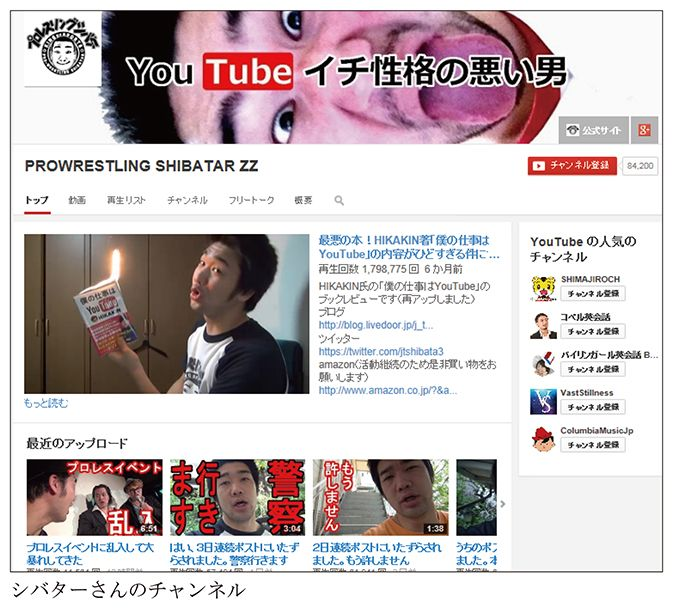
シバターさんの本業は、実は格闘家。格闘技興行団体のパンクラスに所属し、ジ・アウトサイダー（前田日明がプロデュースする格闘技大会。ケンカに自信のあるアマチュアが出場する）、ハードヒットなど、数多くのリングに上がった経験を持っています。
「１９９７年に総合格闘技のイベント『ＰＲＩＤＥ』が始まり、これに影響を受けて総合格闘技に興味を持つようになりました。高校時代には、学校の仲間とよく試合をしていましたね。校舎の地下には柔道場があり、サッカー部で一番筋肉がある奴や、柔道部で一番強い奴なんかを集めて、オープンフィンガーグローブをつけて殴り合っていました。まあ、小学生の頃にやっていたプロレスごっこの延長です」
すでにこの頃から、シバターさんは自分たちのやっていることをウェブ上で発信し始めていました。
「仲間同士の殴り合いを『今日の試合』としてウェブサイトにアップしていました。コンテンツを発信するのは昔から好きでしたね。そのうち２ちゃんねるで『こんなキ○ガイ高校生がいるぞ！』と話題になってきたのです。『素人同士で格闘技を練習しよう』というスレッドがあって、そこに書き込みしている人たちに目をつけられるようになりました。『俺たちのほうが、お前たちより強い！』『ふざけんな！』といったバカなやり取りがあり、僕と友達数人で、先方のチームと勝負しました。スポーツセンターの一角を借りて、ガチ（真剣勝負）の試合に発展。もちろん、勝ったのは僕たちです（笑）。この試合の模様もデジカメで撮影して、サイトにアップしました。高校時代は、３年間ずっとそんなことをやっていましたね」
高校を卒業して大学生になってからも、プロレスごっこを続けたかったシバターさんは、総合格闘技の中では一番プロレスに近かったパンクラスに入門しました。
彼が中学１年生だった１９９７年から大学卒業までの10年は、ＰＲＩＤＥの全盛期とちょうど重なっていました。ジ・アウトサイダーとパンクラスとの交流戦に出場したシバターさんは、格闘ファンに名前を知られるようになり、これ以降試合に出る機会が増えていきます。
「僕のファイトスタイルはちょっと変わっていて、ふざけているように見られてしまいます。パンクラスでは、選手も観客もストイックですから。一方、ジ・アウトサイダーの観客には、そういうスタイルが受けたりします。『ＹｏｕＴｕｂｅ、見てます！』と声をかけられることは、パンクラスよりもジ・アウトサイダーのほうが多いですね。僕が総合格闘技でこだわっているのは、いかにプロレス技を見せるかということです。プロレスの美学は、相手の技をきちんと受け切った上で、自分の技を繰り出すところにあります」
総合格闘技の世界でプロレス技を前面に出す人はほとんどいないため、それをウリにしていきたいと語るシバターさん。
「知名度の高いパンクラスの試合に出られたこともラッキーでした。そこでキャラを前面に出すことで、『シバターさんを使わせてください』といろいろな試合のオファーをいただけました。真剣勝負とプロレス的演出のさじ加減はなかなか難しく、ふざけすぎると、やはり観客もしらけてしまいます。本気なのかふざけているのかわからない、曖昧なところが自分のよさだと思っているので」
シバターさんが動画配信を始めたのは、格闘技と出合ってちょうど10年後の２００７年。ピアキャストという動画共有サービスを見ていたのがきっかけでした。
「ピアキャストの人気者の一人に、パチンコ・パチスロの実況を行っている〈永井先生〉がいます。この人がリスナーからビールやタバコ、お菓子などの嗜好品を寄付されているのを見て、心底うらやましいと思ったのです。『俺もお布施が欲しい、嗜好品をもらいたい、ファンの女を食いたい！（笑）』と」
そのために彼が選んだのが、「炎上キャラ」という手法です。
「ニコ生でもそうですが、人を嫌な気持ちにさせて炎上させるというのは、有名になるための定石です。法律を破るか破らないかくらいのギリギリのところで『人を嫌な気持ちにさせる系』の配信を行う。今のＹｏｕＴｕｂｅでは、他人に絡んだりバカにしたりして、負の感情でのし上がってくる人はあまりいません。だから、ＹｏｕＴｕｂｅで炎上キャラのポジションを保持していきたいのです。ＹｏｕＴｕｂｅでちょうど椅子が空いているのだから、僕が最初に座って、あとから誰も参入できないよう自分の得意なやり方で畑を荒らしてやろうと。総合格闘技の世界で、他の人がやらないプロレス技をやるのと同じことです」
確かに、シバターさんの炎上キャラぶりは筋金入りで、なかなか他の人には真似できないものがあります。
「テレビだと絶対に放映できない放送禁止用語もよく使います。２ちゃんねるには、僕の悪口を言うためのスレッドが立っていて、毎日けっこうな速度でスレッドが消化されていきます。１日に５０００レスくらい僕の悪口が書かれ、グーグルからアカウントを停止されることも日常茶飯事。僕を嫌いな奴が集まって何かをするというのは今に始まったことではありませんから、もう慣れっこです」
人気ユーチューバーに見境なくケンカを仕掛けるように見えるシバターさんですが、どのあたりまで「ガチ」なのでしょうか。
「『まったく興味がないから絡まないでくれ』というユーチューバーもいれば、乗ってくれる人もいます。後者とは、お互いに企画で協力し合ったりします。ピアキャストの頃はそういう絡みはほとんどなかったですね」
旬の人に噛みついては炎上をしかけるシバターさんですが、ご自身の母親といっしょに歌を歌うなど、時々アットホームな動画も流すのが巧妙なところでしょう。
「極悪人がおばあさんの手を引いて横断歩道を渡ったりすると、ふつうの人がやるよりも褒められるようなものですね。でも、『シバター、実はいい人』説があんまり広がりすぎると困りますね（笑）」
シバターさんにとって、ＹｏｕＴｕｂｅは単なるストレス発散の場ではありません。格闘家とユーチューバーを両立するために、彼は勤めていた会社を辞める決心をしました。
「僕が動画の制作にかける時間は、だいたい１時間から、長くても３時間というところでしょうか。あまり編集しない分、台本は事前に書きます。話すことは全部文字に起こして、テイクを重ねて撮影しています。あとから要らないところを切ることはしません。５分間の動画なら、10テイクや20テイクは撮ります。
会社に勤めながらトレーニングをしている頃はほとんど時間の余裕がありませんでしたが、会社を辞めたことで、ようやくトレーニングと動画配信を両立できるようになりました。まだ実家暮らしで、格闘家やユーチューバーとしては食えていませんが、これからですね。
今後は、ＹｏｕＴｕｂｅでの動画配信と格闘技の試合をうまく結びつけられるようにしたいと考えています。最近は、ブログから試合のチケットを買ってくださる人も増えてきました。また、試合会場で『ＹｏｕＴｕｂｅ、見てます！』と、よく声をかけられるようになりました。他のユーチューバーと違い、僕は企業から絶対に仕事をもらえないタイプのキャラクターなので、いろいろと企画も考えないといけません」
＊
ベストセラー本が出てくれば、その反論本など便乗商品が登場してくるものです。お笑いの世界でも、最初のうちは自分たちでネタをあれこれ考えて売り出そうとするわけですが、そのうち他の芸人をいじってネタにする芸人が出てきます。その点で、シバターさんは「ひな壇芸人」と共通する姿勢にも感じます。炎上ユーチューバーは、人気ユーチューバーという相手あってのカウンターであり、あるメディアが成熟してきたことを示すバロメータでしょう。
ただし、閉じた世界のことだけを扱うコンテンツは、そのなかでしか消費されませんから、爆発的な大ヒットにつながる可能性はほぼ皆無でしょう。もちろんシバターさんだって、他のユーチューバーいじりだけに終始しているわけではありませんから、彼の過激な側面だけを見てマネするのは控えたほうが無難かと思います。ＹｏｕＴｕｂｅというひとつの大きな「世界」ができあがって来つつありますが、ＹｏｕＴｕｂｅそれ自体が「動画」やその周辺の関連文化を指すわけではありません。ＹｏｕＴｕｂｅでやるとウケるネタというのもいいですが、さらに数歩下がって大きな視野で「動画」を作ることを大切にしていくべきではないでしょうか。
なお、このシバターさんのインタビューから数カ月を経た２０１４年５月24日、プロレスリングシバター公式ウェブサイトに「俺の視聴者のほとんどはプロレスを見たことない件について」という記事が公開されました。独自アンケートの結果として『視聴者のほとんどは、プロレスに興味がない』ことや、その感想として『ただの悪口動画が好きなひねたティーンエイジャーだった』と書いた上で、今後のプロレス集客のための展望を語っています。試合会場で『ＹｏｕＴｕｂｅ、見てます！』と声をかけられるようになってはいるものの、本来の目的であるはずのプロレスのプロモーションとしてはいまひとつの成果であることがうかがえます。ＨＩＫＡＫＩＮさんがビートボックスから商品紹介に舵を切った件とも若干似て、ＹｏｕＴｕｂｅで再生回数を得やすいコンテンツと、やりたいことの本質との乖離を感じざるを得ません。
私もＹｏｕＴｕｂｅを利用し始めた初期の頃、コメディー動画を投稿していました。そのコメディー動画は国内で一番人気を誇るビデオポッドキャストでしたが、そのままでは商業的に展望が見えなかったため（ＹｏｕＴｕｂｅパートナー制度もまだありませんでした）、当時ブログのマネタイズ法として隆盛だった製品レビューブログをロールモデルとして２００７年に大幅に路線変更したのです。
このように、動画で注目を得ること自体が目的であればまだ話は単純ですが、本当にやりたいこととやるべきことを密につなげていくのは難しい面もあります。
やりたいこと（やるべきこと）とＹｏｕＴｕｂｅの活用という観点から興味深いのが、４人組の演劇集団「劇団スカッシュ」です。
現在、本格的な連続ドラマをＹｏｕＴｕｂｅで公開して人気を集めている劇団スカッシュも、元々は舞台にこだわる生粋の役者たちです。
２００４年、大塚竜也は、弟の祐也、中田大地、前川健二、他２人のメンバーとともに劇団スカッシュを立ち上げました。テンポのよいコメディーをメインにした彼らの芝居には、ある程度ファンもつくようになりましたが、それでも劇団の運営は厳しいものでした。高校時代の友人から「ＹｏｕＴｕｂｅで告知をしてみたらどうか」と勧められたときには、すでに結成から５年が経過していました。
「ＩＴに疎い僕たちだったので、最初はＹｏｕＴｕｂｅのリンクをクリックするのも恐かったです。動画を再生したらお金を勝手に取られちゃうんじゃないかと思っていました（笑）」（大塚竜也）
「ついに俺たちもインターネットに手を出さなければならないのか......と、暗澹たる気持ちになりました。でも、チラシを配っているだけでは舞台にお客さんを呼ぶにも限界がありましたから、舞台公演の告知をインターネットでやろうと。最初は本当にそれだけが目的でした」（大塚祐也）
ほとんどのメンバーは乗り気ではありませんでしたが、唯一パソコンを持ち、多少インターネットの知識があった中田を中心に、集客のために週に３、４本はコンスタントに動画をアップしていくと決めました。とにかく１年間頑張ってみよう――。これが、劇団スカッシュのＹｏｕＴｕｂｅデビューでした。
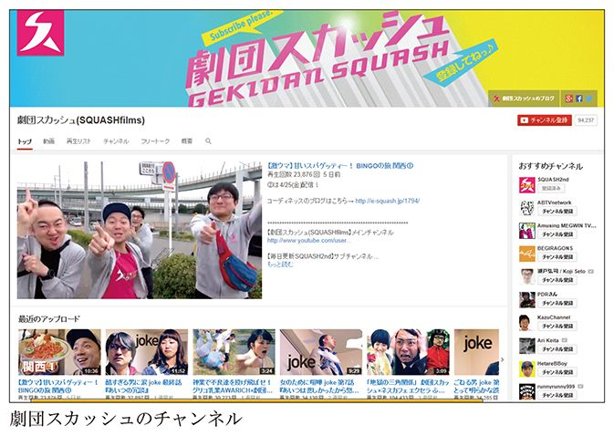
「この頃が一番きつかったですね。劇団の公演の準備もしなければならない上に、ＹｏｕＴｕｂｅ用の映像も作るのですから。バイトをする余裕もなく、収入も本当に厳しくて生活はカツカツでした」（竜也）
初めて動画の世界に足を踏み入れる人は、動画を作ってアップロードさえすれば見てもらえるだろうと、楽観的に考えがちです。彼らもそんな調子でしたが、その目論見はあっさり外れます。慣れない機材やパソコンの操作に苦労しながら動画を撮影、編集、公開しても、再生回数はせいぜい１００回程度でした。
悔しくなったメンバーは、見られる動画の作り方を、ネットでコツコツと調べ始めました。当時のＹｏｕＴｕｂｅでは、サムネイルに使われる画像は動画の真ん中あたりから自動でピックアップされるようになっていたため、その近辺に派手な画像が来るように調整したり、内容をかなり誇張した「釣り」タイトルを入れたりと、なりふり構わない手段をとるようになります。
「劇団メンバーに、前川健二という一見真面目そうな男がいるのですが、彼がただ川で泳ぐだけの動画に『川で未確認生物発見！』というタイトルを付けてアップしたところ、ＹｏｕＴｕｂｅのトップページに取り上げられ、再生回数がいっきに１００万回になりました」（祐也）
「それに味をしめました。エロでも何でも、見られないより見られたほうがいいということで、ひたすら人を引っかけるノウハウを磨いていくことになりました。『釣り』劇団の始まりです」（竜也）
再生回数で上位に躍り出たことで、ＹｏｕＴｕｂｅパートナープログラムへの参加を促すメールがグーグルから送られてきました。
「動画を公開するようになってから２カ月くらい経った頃、ＹｏｕＴｕｂｅから英語のメールが届きました。でも、これはきっとスパムだろうと放っておいたのです」（祐也）
「無視していたら、そのうち『広告の表示回数に応じてお金を稼げます』と日本語でメールが来ました。そんなの絶対嘘だろうと思っていたら、メンバーの一人が『いや、もしかしたら可能性あるよ！』と言うのです。それで半信半疑のままＹｏｕＴｕｂｅパートナープログラムに参加したのです。でも、ようやく実感がわいてきたのは小切手が送られてきたあとですね。でも、小切手を換金するのに手数料がかかるので、記念に取っておこうとタンスにしまい込みました」（竜也）
この頃は、メンバー６人全員で動画のネタを出し合い、自分が出したネタについては監督を務め、他のメンバーに芝居を付けるというシビアなルールを課していたそうです。６人が出したネタは全部撮影し、６本のうち出来のいい２本をアップする決まりでした。
「舞台とＹｏｕＴｕｂｅがつながっているという実感は、なかなか持てませんでした。演劇と関係ないことで、どうしてここまで苦労しないといけないのか。本末転倒ではないか、と。あまりにもつらすぎて、メンバーのうち２人は辞めてしまいました。その苦労を知っているから、他の劇団に軽々しく『ＹｏｕＴｕｂｅやってみなよ』とはとても言えません」（竜也）
最初に動画を公開してから１年が過ぎた頃、ＹｏｕＴｕｂｅパートナープログラムによる収益は月に数万円程度にはなっていました。
「ものすごく根を詰めましたが、結局舞台への集客効果はほとんどありませんでした。来場者のアンケートを見る限り、ＹｏｕＴｕｂｅのおかげで増えたお客さんは10人か20人というところだったんです。２年目からは、もうＹｏｕＴｕｂｅは惰性でやるだけにしようと決めました。残ったメンバー４人でネタを考えて、４本撮影してボツはなし。１カ月で４本を公開するサイクルです」（竜也）
「劇場での公演では、満員になれば多少の収益にはなりますが、実際はそこそこお客さんが入っても赤字になることが多いのです。月に数万円以上収益があると、そうした公演の赤字分を補うことができたのです。そうなると、舞台を続けるためにも、ＹｏｕＴｕｂｅをやめられなくなってしまいました」（祐也）
動画を作ってはＹｏｕＴｕｂｅで公開するものの、再生回数を増やして、少々の収益を得ることだけにしか興味はなかったと思います。もちろん、視聴者とのコミュニケーションを図ることも念頭にありませんでした。
「チャンネルに登録してもらうことの意味も全然考えていませんでしたね。登録者数が増えても、別に公演費が増えるわけじゃないから関係ないと思っていました。動画の視聴者とコミュニケーションするという発想がなくて、考えているのはバンバン釣って再生してもらうことだけ。そうしているうちに、コメント欄がどんどん悪口だけになっていきました」（祐也）
「お金のためだけにしかやっていなかったので、悪口のコメントもまったく気になりませんでした。『大塚兄弟、氏ね！』と書かれても、さっさと削除。そのときはまだ、演劇のためにＹｏｕＴｕｂｅを使っているだけで、僕らはユーチューバーでも何でもないと考えていたんです」（竜也）
評判など気にせず、お金のためだけに、ＹｏｕＴｕｂｅに適当な動画をアップしていたスカッシュ。やがて、転機が起こります。２０１１年３月11日、東日本大震災の発生でした。岩手県出身の前川健二の実家が津波に流されてしまったのです。幸い、彼の家族の無事はまもなく確認されましたが、被災地が大変な状況であることはニュースからも伝わってきました。
「震災発生直後は被災地も混乱状態でしたから行かなかったのですが、１カ月くらい経つと、前川が『やっぱり地元に行きたい』と言い出しました。東京でやきもきしているくらいなら、思い切って被災地に行こうと。ＹｏｕＴｕｂｅで『支援物資をいただければ、被災地に届けます』と呼びかけたところ、たくさんの支援物資が集まりました。支援物資を被災地に運んでいるところや、地元の幼稚園での出し物をしている様子をＹｏｕＴｕｂｅにアップすると、視聴者からダイレクトに反応が返ってきたのです」（竜也）
ＹｏｕＴｕｂｅって、意外にいいものなんじゃないか？ と、初めて感じるようになったメンバーたち。ちょうどその頃、ＹｏｕＴｕｂｅが「ＮｅｘｔＵｐ」の募集を始めました。
ＮｅｘｔＵｐは、パートナープログラムを結んでいる人たちから選ばれた10組の入賞者に２００万円の動画制作支援金が支給され、さらに、スキルアップのための講習にも参加できるというプログラムです。そこで、「日本にある世界遺産をすべて回って動画にする」という企画を立てて応募したところ、見事に入選しました。
「正直言って、僕らはＹｏｕＴｕｂｅを演劇より下のものとして扱っていました。真剣に作った動画の再生回数がたった１５０回で、くだらない釣り動画が１００万回再生されたりするのですから。けれど、きちんとＹｏｕＴｕｂｅから発信していくことができれば、新しい形の劇団を考えられるんじゃないか。それなら、チャンネルへの登録者数のことも考慮し、しっかりブランディングしていこうという意欲が出てきました」（祐也）
芝居とは異なる、ＹｏｕＴｕｂｅ用の動画制作についても、真剣に考えるようになったと言います。
「それまでは、デジカメのザクティ（Ｘａｃｔｉ）と１０００円の三脚でずっと撮影していましたが、入選をきっかけに、きちんと技術を学ぼうという気持ちになりました。入選者は、デジタルハリウッドという専門学校の５日間講習に参加できるのです。５日間というと短いようですが、『こういう表現をするためにはどうすればいい？』などと積極的に質問していくことで、効率的に学べました。講習のあとには芝居の公演、それが終わったらすぐに世界遺産めぐりという地獄のスケジュールでしたけれど。支援金も２００万円いただきましたが、機材をそろえたりしたら、結局全部で２５０万円くらいかかりました」（竜也）
心を入れ替えたスカッシュ。しかし、それまでにさんざん「釣り」動画をアップしていたスカッシュに対する視聴者の評価が、いきなり１８０度変わったわけではありません。「スカッシュだからもう見ない」というアンチの風潮ができあがっていて、動画の再生回数はＹｏｕＴｕｂｅを始めた当初のレベルにまで落ちてしまいました。ＹｏｕＴｕｂｅが一番力を入れてプッシュしてくれたチャンスに、スカッシュだけうまく乗ることができなかったのです。
「ただ、そうなることは覚悟していました。もう、一から出直すしかない。そのため、世界遺産めぐりを終えたあとは、ずっとメンバーで議論を重ねていました。演劇とＹｏｕＴｕｂｅをどうつなげていけばいいのか」（竜也）
劇団スカッシュとしてブランディングしていくのであれば、本当に僕たちがやりたいことをやろう。それが、ＹｏｕＴｕｂｅに特化したドラマでした。
実は、２０１１年の初頭、ＹｏｕＴｕｂｅ用に書き下ろした『コイサクラン』という連続ドラマを撮影していたのですが、海の話だったため、震災後に公開するにはためらいがありお蔵入りになっていたのです。２０１２年の初頭、新生スカッシュの本気を見せるために、勢い込んでそれを公開したものの、再生回数にはつながりませんでした。
「救いだったのは、すでに実績のあるユーチューバー、それもクリエイター系の方々から、面白いと褒めてもらえたことです。『顔をものすごくアップにしているから、スマホ向きだよね』『展開がめちゃくちゃ速い５分以内のドラマを作っている人は他にいない』などと言われました。そのおかげで、『今年が勝負の年だ』という気持ちになれました」（竜也）
「それまではプライドなしでやっていたので、何を言われても傷つきもしなかったし、他のユーチューバーを見ても心が動きませんでした。けれど初めて、人気がないことへの悔しさが爆発したんです」（祐也）
幸運なことに、ＹｏｕＴｕｂｅ Ｓｐａｃｅ（グーグル社内にあるＹｏｕＴｕｂｅコンテンツ制作スタジオ）のオープンに合わせた動画企画の話が持ち上がり、『隙間男』というドラマがＹｏｕＴｕｂｅ側に認められ、企画が本格的に動き始めます。スタジオの中に一軒家を建てて撮影を行う『隙間男』の制作は、スカッシュにとって正念場でした。家の発注からすべて、メンバー４人で行う必要があったのです。
結果的に『隙間男』の評価は高く、これを契機に企業とのコラボレーション企画も次々と入ってくるようになりました。
「ＹｏｕＴｕｂｅでコンテンツを作ってきたことで、お金が流れる仕組みがようやくわかってきました。演劇だけをやっていたときは、『大事なのはお金じゃない、面白いものさえ作ればいいじゃないか』と思っていました。だけど、ＹｏｕＴｕｂｅをうまく活用してお金を出してもらえる流れを作ることができた。そういう流れを演劇でも生み出すことができるのじゃないかと考えるようになったんです」（竜也）
リアルな演劇と、パソコンやスマートフォンで再生することが前提の動画では、見せ方が大きく変わってきます。劇団スカッシュのドラマは、どのあたりがＹｏｕＴｕｂｅ的なのでしょうか。
大きな違いのひとつは、感情の流れをどう表現するかです。たとえば、登場人物が怒ったり泣いたりする場合を考えてみます。舞台の場合は、観客が「この人は本当に怒っている」とか「こういう状況に自分が置かれたら泣いてしまうだろう」などと、役者の感情の流れをリアルに感じられないと面白くありません。しかし映像作品の場合は、カットを割ったり音響を入れたりすることで、演出できてしまう面があります。逆に、感情の流れを作ろうとして１カットに時間をかけすぎると、テンポが悪くなってしまうのだそうです。
「ＹｏｕＴｕｂｅの場合、登場人物がいきなり泣いているところから入って、『なんで泣いてるの？』と観客に思わせて引きつけることができます」（祐也）
「ノウハウがまったく違ってきますね。演劇なら観客も１時間半くらいかけて見るつもりでいますが、ＹｏｕＴｕｂｅの場合はたまたまふらっと『見に来ちゃった』という人も多いわけです。そういう人に面白いと感じてもらい、チャンネルを登録してもらえるようなドラマを作らないといけません。
飲み会でのワリカンをめぐって４人が河原で口論を繰り広げるショートドラマ『君、平等で然るべき』は、舞台公演もしており、脚本自体はほとんど変えていません。ＹｏｕＴｕｂｅの場合は、冒頭の15秒で観客の心をつかむ必要がありますから、インパクトのあるシーンを持ってくるように演出を変えていますが。また、ＹｏｕＴｕｂｅ用には、意味なく川に落とす〝釣り〟シーンを全話に追加しています（笑）」（竜也）
連続ドラマ『君、平等で然るべき』を公開した途端、スカッシュ自身も予想していなかったほど、チャンネルの登録者が急増しました。
「正直に言って、まさに演劇っぽいあの作品があんなにウケるとは予想していませんでした。『隙間男』のあと、短編しか出していなかったので、連続モノのドラマが期待されていたのかもしれません」（竜也）
「『隙間男』はそんなに凝ったストーリーではありません。どの話から見ても、『食われると隙間男になる』ということが観客にわかります。でも、『君、平等で然るべき』は３話から見ても、１話、２話を見ていないと話がわからない。はたしてこういう形式はＹｏｕＴｕｂｅに適しているのだろうかと、メンバー同士でも話し合いを重ねました。３話から見てしまった人でもストーリーがわかるよう、いちおう冒頭にあらすじ紹介は付けていますが、このやり方で正しかったのかどうか、まだ腑に落ちていません」（祐也）
「ただ、ＹｏｕＴｕｂｅに適したスタイルも変わり続けていますし、観客がついてきてくれさえすれば問題ないのではないでしょうか。海外だと、ＲｏｃｋｅｔＪｕｍｐという人が長い連続ドラマを発表して、観客から支持されています。彼のドラマは、30分×８話くらいで、テレビドラマと同じやり方です。それが支持され、大きなスポンサーもついています。日本だと今のところ、ブログをチェックするようにＹｏｕＴｕｂｅをさっとチェックして、新しい動画があれば見るという人が多いようですが、シリーズものも見てもらえるようになるとうれしいですね」（竜也）
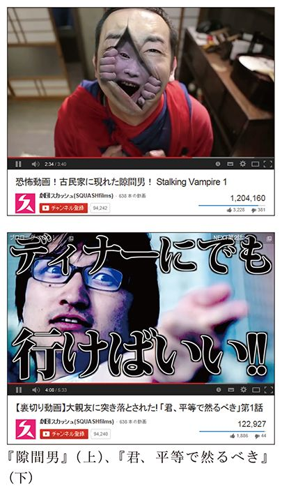
撮影も含めた作業は、現在でも初期の頃と同じく、４人だけで行っています。
「作品によって細かい作業を手伝ってもらうことはありますが、基本的には４人だけでショート・ドラマを作っています。ただ、最近はさすがに人手が足りないことが増えてきました。特に、合成処理が必要なものはそうですね。カメラマン、シートを押さえる人が２人、レフ板を持っている人となると、誰も出演できません」（祐也）
「実際問題、稼げなくて演劇をやめる人はものすごく多いです。劇場という〝箱〟にこだわっている限り、チケット販売のノルマをこなすか、上手にプロモーションしてくれるのを待つかになってしまうので、僕は攻める意味でもこれからもＹｏｕＴｕｂｅを活用していきたいと思っています」（竜也）
「まったく新しい劇団のやり方を模索しています。ＹｏｕＴｕｂｅを舞台への誘導だけに使うのではなく、舞台とＹｏｕＴｕｂｅの両方でしっかりと芝居を見せるというスタイルです」（祐也）
＊
このインタビューは２０１３年８月９日に行いましたので、現在の劇団スカッシュの方向性とはまた違う部分も多々あるとは思います。それにしても、彼らの話は示唆に富んでいます。
実は私も、自主制作映画の上映を〝箱〟という物理的な制約から切り離す可能性を求めてインターネットの業界に入りました。もう15年以上前のことです。紆余曲折を経て現在に至るのですが、ウェブの世界を劇場のように捉えている部分があるのは今も変わりません。
先のシバターさんの例ではウェブから〝箱〟へつなげる考えを聞かせていただきましたが、劇団スカッシュの場合はＹｏｕＴｕｂｅという新たな〝箱〟を得て、そこにアウトプットするものを最適化させています。これはＹｏｕＴｕｂｅ活用のひとつの解だと言えるでしょう。
ＹｏｕＴｕｂｅ動画のみでしかイベント告知をしていない場合、当然ながらその動画を見て来場されたお客さんと、その同伴者がほぼ１００パーセントを占めます。にもかかわらず、来場者から『いつもＹｏｕＴｕｂｅ見てます』という声をもらうと、ＹｏｕＴｕｂｅでの集客効果が高かったと錯覚してしまいそうになります。
ＹｏｕＴｕｂｅに限りませんが、インターネットでは、ニッチな分野のメディアでも情報の質が高ければ、それなりの影響力を持つことができます。たとえば現在、幼児向け玩具などを紹介するいくつかのＹｏｕＴｕｂｅチャンネルが、国内の再生数の上位に位置しています。こういったところで独身男女向けの婚活イベントの告知を行うことは妥当でしょうか？ 聞くまでもありませんよね。
ＹｏｕＴｕｂｅチャンネルにもそれぞれ特性があり、視聴者世代の偏向があります。再生回数が多いからといって、全方位的な告知媒体として向いているとは、必ずしも言い切れないのです。
私自身も失敗はありました。２０１２年の著作権法改正により、音楽の違法ダウンロードが罰則化されましたが、これはＹｏｕＴｕｂｅ利用者にも無関係ではないということで、他のユーチューバーと企画して「音ジェット☆」という啓蒙イベントを開催したのです。そのイベント内では、音楽制作者連盟の理事だった山口哲一氏に講演していただいたり、主催メンバーの我々ユーチューバーや電子楽器メーカー、音楽ソフトウェア会社などが、アマチュアでも簡単にできるオリジナル楽曲制作のデモを行ったりし、音楽における著作権侵害の防止を訴えかけました。そういったセッションの一幕として、簡便なデジタルガジェットを駆使して演奏するミュージシャン、サイモンガー・モバイルさんによるミニライブもありました。そこで事件は起きたのです。
狭い会場だったこともありオールスタンディングのイベントだったのですが、サイモンガーさんの演奏が始まるやいなや、それまで総立ちだった観客が一斉に座り始めたのです。サイモンガーさんはイベントの目玉としてお招きしたのに、ステージと客席とのあまりの温度差に顔面蒼白となりました。
このイベントの告知・集客はほとんど私たち主催メンバーのＹｏｕＴｕｂｅ動画のみでした。ＹｏｕＴｕｂｅ利用にまつわる音楽著作権についての啓蒙イベントでしたので、告知媒体としては間違っていないはずでした。が、ふたを開けてみれば、そうしたミスマッチが起き、サイモンガーさんにアウェー感を味わわせてしまったのです。もちろん構成を担当した私の責任が大きいのですが、主催ユーチューバー側の視聴者層だけにしか告知できていなかったという偏りを痛感しました。
私は70年代の前半に富山県の小さな山間の町で生まれ、高校を卒業するまでそこで育ちました。江戸時代には参勤交代の行列が立ち寄る宿場町として栄えていた町だそうですが、それも１５０年以上昔のこと。今となっては周辺の観光地からもやや距離があり、わざわざ訪れる理由も少ない場所です。最寄りの駅まではクルマで20分ほど。そんな場所ですから、映画館やコンサート会場のような文化的なものは遥か彼方の存在でした。
日本海側は裏日本とも揶揄され、どうしても東京や大阪のメディアに呑まれて、なかなか情報発信源となることはありません。中央偏重型のマスメディアからの情報と、自分の周辺とのギャップに悶々としながら過ごすこともよくありました。
少し話は脇にそれますが、現在ＹｏｕＴｕｂｅとして活躍するクリエイターには、私と同じ北陸地方出身者が妙に多いのです。はじめしゃちょーさんは、私と同じ富山県出身。おとなり新潟県にはＨＩＫＡＫＩＮさんとお兄さんのＳＥＩＫＩＮさん、Ｍａｓｕｏさん、元ＭＥＧＷＩＮ ＴＶメンバーのデベソさん、石川県からは今、飛ぶ鳥を落とす勢いのマックスむらいさん、福井県はカズチャンネルのカズさん、ＹｏｕＴｕｂｅをやるために生まれたような男・瀬戸弘司さんを輩出しています。
彼らのほとんどは、いまや古参ユーチューバーと言ってもいいほど長く活動していますが、ここまで北陸地方に集中しているのには、何か必然性を感じます。日々、動画を撮影、黙々と編集して公開という作業を長く続けるためには、忍耐力が必要です。冬は雪に閉ざされ、それ以外の季節でも降雨量の多い北陸地方だからこそ、こうした資質が自然と備わった人が多いのかもしれません。
私が映像制作と出合ったのは、中学生の頃にさかのぼります。けれども、最初から映像制作をやりたかったわけではありません。始まりは、音楽でした。
今の文化系中高生ならＤＪにあこがれるところかもしれませんが、当時の人気の的は、何といってもギターです。私もギターを始めたかったものの、そこは富山の田舎。ギター教室なんて近所にはありません。
私が通っていた中学校では、授業の一環として文化系のクラブ活動を行っており、幸いギタークラブもありました。ギターへの熱い思いに駆られていた私は、さっそくギタークラブに入部......できませんでした。クラブには人数制限があり、中でもギター部は超人気で応募者が殺到していたのです。
希望の部に入れなかった人は、適当な部に無理矢理振り分けられるのですが、そこで私は映像制作との運命的な出合いを......まだ果たしません。中学１年生のときに入れられたのは「栽培クラブ」。栽培というより農作業ですね。都会に住んでいるなら野菜作りも趣味として楽しいでしょうが、ド田舎では、そこらじゅう田んぼや畑だらけ。規模の大小こそあれ多くの生徒は兼業農家の子どもたち。学校でも農作業をやらされてはたまったものではありません。
中学２年生になっても、ギター部への望みはまたしてもかなわず、代わりに入部させられたのは「信号研究クラブ」。手旗信号とかモールス信号とか、信号全般を研究するという部です。部員は全員男子。
中学３年になって、ようやく念願かないギタークラブに入部しました。しかし、ギタークラブの初日から、顧問の先生が大変なことを宣言したのです。
「今日からこのギタークラブは、『Ｖ＆Ｇクラブ』に名称を変更します」
ＧはギターのＧだとして、Ｖは何だと訊ねると「ビデオ」とのこと。顧問の先生はギターの他に、ビデオ撮影も趣味としていたのです。それでもギターを教われるのならいいやと思ったところ、続いてこの先生は驚くべき質問をみんなに投げかけました。
「ギターとビデオ、どっちにする？」
え？
どういうこと？
ギターとビデオの両方じゃないのか!? これなら「Ｖ ｏｒ Ｇクラブ」だろうっ！ 運が悪いことに、私以外の部員の多くは前年度からギタークラブに属していて、今年度は別のことをやりたいという者が多く、あっさりビデオクラブになってしまいました。これが、私と動画との運命的な出合いになったのです。
当時のビデオカメラといえば、ビデオテープのカセットを内蔵したもので、今のようなポケットサイズなんて夢のまた夢という巨大さです。それでも「小さくなった」なんて言っていました。何しろそれ以前だと、カメラ部分とビデオデッキが別々となったセパレート型が当たり前、それぞれの部分が肩に担ぐような大きなサイズでしたからね。
ソニーのテレビコマーシャルで、宇宙飛行士が船内を漂いながら８ミリビデオカメラを持っている映像がありましたが、浮遊するほど軽量という表現だったのでしょう。我々ビデオクラブの面々はそれを持って、遠足や修学旅行、運動会などの学校行事を撮影してまわりました。
顧問の先生はビデオ編集にとても詳しく、初めてコンピュータを使ったビデオ編集を体験することになります。といっても、今のように撮影したデジタルデータをパソコンに全部取り込んで、編集ソフト上で切ったり貼ったりするというものではありません。当時、ＭＳＸという安価なパソコンがありました。先生はＭＳＸとビデオ編集用のカートリッジを持っていて、私たちに教えてくれたのです。
ビデオデッキからのアナログのビデオ信号をカートリッジに入力し、テロップを重ねたりワイプなどの効果を入れたりしてそのビデオ信号を出力。これを別のビデオデッキに入力してダビングするのです。まずはビデオデッキが２台ないとできない作業ですから、その頃の一般家庭ではなかなか体験できることではありません。すっかりビデオ編集の面白さに取りつかれ、積極的に勉強するようになりました。
私の家では、ちょうど一番下の妹が生まれた頃でした。父はかわいい娘の成長を記録するためにビデオカメラを買ったものの、単身赴任も重なってあっという間に使わなくなり、ラッキーなことにほとんど私専用のビデオカメラになりました。ズーム倍率が今とは比にならないほどで、豆粒みたいな映りでしたが、皆既月食を夜通し撮影したり、小学生時代に作ったガンプラでコマ撮りアニメーションを作ったりしていました。
そうしたビデオカメラの普及と小型軽量化にともなって、視聴者からの投稿ビデオを募るテレビ番組が現れてきました。
その代表格は、小堺一機さんと関根勤さんが司会を務める「コサキン勝手にごっこ」でしょう。番組ではハプニング映像や自主制作映画など、個人からの投稿による映像が放映されました。ラジオ番組を作りたいと考えていた私も、次第にビデオ制作のほうに関心を移すようになり、いつかはこの番組にも投稿したいと考えていました。
また、メジャーデビューを目指すバンドの登竜門的なテレビ番組「いか天（三宅裕司のいかすバンド天国）」の後番組として、同様にインディーズ映像作家を発掘する深夜番組が放送されました。「三宅裕司のえびぞり巨匠天国」、通称「えび天」です。
日本各地の映画祭などで活躍していた映像作家たちの名作オンパレード、ド田舎でまったくそういう事情に触れず育った私にとって、これは大変ショッキングな番組でした。こんなにも面白い映像作家がたくさんいるのか。自分も負けてはいられないと。そこで、貯めていたお年玉で、ＭＳＸとビデオデジタイザーというカートリッジを購入しました。
ビデオデジタイザーを使うと、画面をタイル状に16分割したり、ストロボ効果を加えたりと80年代ミュージックビデオ風な効果を与えることができました。また、マウスで描くアニメーション作成ソフトも付属していました。音楽制作ソフトに譜面を打ち込んで曲を作ってみたりと、初めての打ち込み音楽体験もしました。
今見ると作品と呼ぶことすらはばかられる稚拙なものばかりですが、トム・クルーズ主演の映画「トップガン」にあこがれ、特撮のような作品を作ったのもこの頃です。パイロットが敵と空中戦を行うというそのまんまな内容で、古典的に糸で吊った戦闘機の模型を撮影しましたが、プラモデルばかり作っていたのが遠回りながら役立ちました。この作品のタイトルこそ『ジェットダイスケ』でした。この他にも未完成のチープな特撮作品があったのですが、ガンプラを改造したオリジナルロボットのコマ撮りアニメーションなどに没頭する日々でした。
ビデオ制作にのめり込む一方で、大学に入学してからは、音楽制作への欲求もわいてきます。自分で作曲して弾き語りのデモテープを作り、ほかの楽器パートも加えれれば、一人でも曲が完成させられます。それに自分の映像を組み合わせてみたことが、ユーチューバーとして活動を始める第一歩でした。
大学で映像を作っていたとき、自分の作品を人に見てもらうには、上映するための会場を手配しなければなりませんでした。それなりのサイズのある会場を自力で用意するのは、なかなか大変です。
苦労して作品を作るかたわら、上映会のお客さんを集めるのがまたひと苦労です。小さな上映会場を満員にして20人程度のお客さんに見てもらえはしても、もっとたくさんの人に見てもらおうと思ったら、また一から会場を用意しなくてはなりません。生で演じる必要性もないのに、これでは芝居と変わらないではないですか。自分の作品を、会場の制約に縛られずにお客さんに見てもらいたい――。そういった期待をインターネットにかけていたのです。
大学を卒業した私は、大阪のとある作曲家のおっちゃんのもとで働き始めました。彼は小さな芸能プロダクションも経営しており、オーディション告知のビラ撒きバイトさんたちの采配などをしつつ、２人で映像制作プロダクションを立ち上げるべくスポンサー集めに奔走していましたが、頓挫。
ほどなくしておっちゃんの紹介で、今度は内芝製作所という会社に入社。当時はＭａｃやその周辺機器を扱っていて、パソコンマニアにはとても人気があった会社です。
私が内芝製作所で働き始めた90年代の半ばは、パソコン・インターネットブームの後押しもあって、ＣＤ―ＲＯＭコンテンツを視聴するといったマルチメディアも注目されていた時代。入社当初の私はおもに、ＣＤ―ＲＯＭ収録用の動画編集を担当していました。この頃は、ＣＤ―ＲＯＭを付録にした雑誌が当たり前だったほか、ビデオＣＤという規格も登場し、コンピュータで動画を見ることが一般的になり始めていた時期です。
また、ウェブサイト制作がそろそろビジネスになり始めていた頃でもあります。私は、フォトレタッチソフトのフォトショップ、ドローソフトのイラストレーター、動画編集ソフトのプレミアなど、コンピュータを使った作品制作を覚えて、カエルカフェの白石ひとみさん等、インディーズミュージシャンのプロモーションビデオを作ったりしていました。
当時一般家庭でのインターネット接続はまだアナログモデムを使った遅いもので、通信速度は数十ｋｂｐｓといったところ。会社で使っていた１２８ｋｂｐｓのＩＳＤＮ回線が高速だと言われていました。パソコンの処理能力もたいしたことはなく、切手くらいの大きさの短い動画しかウェブサイトには載せられませんでした。映画会社のウェブサイトで１～２分の予告編を見ようと思ったら、そんな切手サイズの動画ですらダウンロードするのにお昼休みを使い切るほどでした。
せっかくコンピュータで映像を扱えるようになったというのに、小さな映像がちまちま動くだけ。ビデオデッキからパソコンのお尻にケーブルを差せば、全世界の人に自分の作品を24時間ずっと垂れ流せると思っていた私にとって、何十分も待ってようやく切手サイズの映像が再生される当時の環境は「あり得ない」の一言でした。ようやくインターネットのおかげで〝箱〟の限界を破れるのではないかと思っていたのに――。
その後東京に引っ越してからも、ウェブサイトの運営は続けました。その頃、個人のウェブサイトには掲示板や日記といった、フォームから投稿して更新する形式のコンテンツが増え、私もウェブ上で日記を書くようになっていました。まだＳＮＳもブログも生まれる前でしたが、そういった下地が徐々に整いつつありました。
ＡＤＳＬ接続が広く普及し始めた２００１年は、日本におけるブロードバンド時代の幕開けでした。一般的なアナログ電話回線を使って、１ＭｂｐｓというＩＳＤＮの10倍以上の速度が出るようになりました。その頃、私はインターネットサービスプロバイダーに入社したばかりで、会社のサーバーに動画データを置き、映像をどれくらいスムーズに流せるか、様々な実験を繰り返していました。この当時は、ＳＤ画質（ハイビジョン以前のテレビ放送画質で、解像度はだいたい６４０×４８０ピクセル）なら、１ＭｂｐｓちょっとのＡＤＳＬ回線で何とか配信できました。
私も、高校時代に制作した動画『ジェットダイスケ』をＣＧでリメイクし、ウェブサイト上で公開しました。ＡＤＳＬ回線であれば、それまでより劇的に画質劣化の少ない状態でショートムービーを配信できるのです。長年思い描いていた〝箱〟の構想がだんだん現実になりつつありました。ジェット☆ダイスケという名前で活動し始めたのもこの頃からです。
また、ノートパソコンとウェブカメラ、そしてＰＨＳ端末を使って外出先からのライブ動画配信にも挑戦しました。画質が悪いどころかパラパラ漫画にも満たない動きでしたが、一応配信に成功したときの喜びはひとしおでした。
２００２年から２００３年にかけて、ネットで新しいブームが起こります。個人によるウェブ上での情報発信が、ブログの登場によって格段に簡単になったのです。
今では無料ブログサービスも当たり前ですし、１分もあればブログを始めることができますが、ブログという言葉（当時は「ウェブログ」とも言われていました）が使われ始めた頃は、自分でレンタルサーバーを借り、ブログを構築するためのソフトウェアをサーバーにインストールするという面倒な手順が一般的でした。
もちろん誰しもができることではありません、ブログ構築を代行するサービスも流行りました。ウェブ制作を手がけていた私も、数え切れないほど他人のブログを構築したものです。しかし、自分のブログを始めるという発想はまだありませんでした。
もちろんブログ以前にも、ウェブ上で日記を書くためのプログラムはありました。ブログが画期的だったのは、トラックバックという、他人の記事を引用・言及した際にそれを知らせる仕組みを実装したことでした。現在ではあまり使われていないようですが、トラックバックにより複数のブログサイトに議論が展開していくのをたどりながら読むこともできるようになりました。別々のサイトにある各々の記事の関係性が可視化されたのです。
「デザインはどうするか～」などとうだうだ言っていないで、とりあえず書き始めてみるべし。日本人ブロガー第一人者であるコグレマサト氏にそう背中を押され、いよいよ私自身がブログを始めたのは、２００４年のことでした。
ブログは単にサイト運営を簡単にしただけでなく、個人サイトレベルにも「パーマリンク」をもたらしました。パーマリンクとは、永続性を意味する「パーマネント」と「リンク」を掛け合わせた造語です。つまり日本語的感覚では「永続的リンク」とも呼べるでしょうか。先に述べたトラックバック機能も、このパーマリンクなしには存在しえません。
ブログの記事には個別にＵＲＬが与えられています。ブログでなくとも、ツイッターの各つぶやき一つひとつにもＵＲＬがありますよね。現在ではほとんどのウェブサイトがこういう作りになっていますから、当たり前だと思うかもしれません。でも、ブログ以前の個人サイトは、そうとも限らなかったのです。記事一つひとつが別個のＵＲＬを持ったことで、記事単位、コンテンツ単位で情報を流通しやすくなりました。
わかりやすくＡｍａｚｏｎで考えてみましょう。Ａｍａｚｏｎのトップページからカテゴリーをたどったり、製品名を検索したりして、各製品のページにたどり着くといったことが可能になりました。その製品のページのＵＲＬを使えば、「この製品欲しいよね」とＥメールやツイッターなどで友人と情報共有することができます。
ここで共有したＵＲＬはパーマリンクですから、基本的には２時間後でも10日後でもおそらく変わってないはずです。ところが、これがいつ変更されるかわからないＵＲＬだとしたら、安心して共有することもできません。「これイイよね」とメールしたＵＲＬのページが既に存在していない程度ならまだしも、まったく別の内容に書き換わっていたり、しかもそれが公序良俗に反していたりすると、大問題に発展しかねません。
記事がそれぞれ別個のＵＲＬを持っていれば、ＵＲＬをペタッと貼るだけで目的の情報がすぐに表示できます。「この記事見てよ」といって、知り合いにも紹介しやすくなりますから、面白い記事はどんどん伝播していきます。フェイスブックやツイッターで面白かったＹｏｕＴｕｂｅ動画のＵＲＬをつぶやくというのも今ではごく自然なことですが、10年くらい前まではそうでもなかったのです。
２００６年10月には、グーグルがＹｏｕＴｕｂｅを買収して、動画共有サイトがビジネスになるのではないかと、ＩＴ、ウェブ系の業界では大変な話題を呼びました。
しかし、それまでのＹｏｕＴｕｂｅの評価は必ずしも高いものではありませんでした。ＹｏｕＴｕｂｅ以外にもいくつか動画共有サイトが登場しましたが、その中でＹｏｕＴｕｂｅの画質は最低レベル。粗い動画の代名詞として「ＹｏｕＴｕｂｅ画質」という言葉が使われていたほどです。もっとも、そのとき比較された動画サイトはＹｏｕＴｕｂｅ以外残っていませんが。
当時の動画サイトは、アクセスが集中すると「落ちる」（サービスが停止する）ことが多かったのですが、画質をなかなか向上させなかったのも、インフラ運用との兼ね合いがあったのでしょう（低画質であれば、回線やストレージへの投資も減らせます）。ただ、グーグルに買収されてからのＹｏｕＴｕｂｅは次第に、画質や応答速度を向上させていきました。動画はテキストとは比にならないデータ量ですから、安定したサービス提供には相応の資本力が必要とされていたのです。
この頃の私は、「ＹｏｕＴｕｂｅにやたら製品レビュー動画をアップしている人」として、ネット上で認知されるようになっていました。ブログ上には、動画でレビューした商品へのリンクを貼り、ＥＣサイトから受け取るアフィリエイト報酬は当時の月給を超えることもありました。ただ、この時点での活動の中心はブログであり、自分はユーチューバーではなくブロガーであるという認識でした。ＹｏｕＴｕｂｅは単に「動画の置き場所」に使っていただけですから。
話は多少前後しますが、２００１年の元日、私は「エレクトロニッキ」という日記動画シリーズの配信を始めました。「２０００年末に人類は滅亡した」という設定で、ＣＧ加工された私の顔が登場し、３分くらいでその日の出来事を語るという内容でした。
とにかくブロードバンドによって動画視聴のストレスが減り、テキストの代わりに動画で日記を配信するという発想も「アリ」になってきたのでした。ところが、通信速度についてはほぼ解決されつつあったものの、今度はレンタルサーバーの容量制限という壁が立ちはだかっていました。
動画は、静止画に比べて非常にデータのサイズが大きくなります。従来のような切手大のものならまだしも、ブロードバンド時代のクオリティでは少なくとも、その２倍から４倍ほどのデータ量が必要とされました。「エレクトロニッキ」では一本あたり10メガバイトを超える容量でしたが、借りていたレンタルサーバーのディスク容量はわずか１００メガバイト。人類滅亡後の日記という企画は、あっさり１週間で滅亡しました......。
ところが、ＳＮＳやＣＧＭ（コンシューマー・ジェネレイテッド・メディア）の隆盛により今度は、いくらでもアップロードできる無尽蔵のサーバーを得ることになったのです。それまでブログに掲載する写真や動画は、自前のサーバーにアップロードしていましたが、写真はＦｌｉｃｋｒへ、動画はＹｏｕＴｕｂｅへ別々にアップロードして、それをブログへ貼り付けるという利用法になっていきました。「動画の置き場所」というのはそういうわけです。
そして次第に、ブログにアクセスしてそこに掲載されている動画を見るのではなく、直接ＹｏｕＴｕｂｅ上の私のチャンネルで動画を見る人が増えてきたのです。
動画共有サービスの台頭（詳しくは次章）と同時期に、モバイル端末も大きく変わりつつありました。
２００７年５月、東海道新幹線Ｎ７００系の試乗会が開催され、報道関係者約３００人が招待されました。この３００人には、テレビ局や新聞社などの大手マスコミのほか、個人ブロガーも多く含まれていました。白いボディのＭａｃＢｏｏｋと、今はなき三洋電機のデジカメ「ザクティ」を携え、私は試乗会に参加しました。昼過ぎに東京を出発して名古屋に着く頃には、車内の取材も一通り完了。さらに、新大阪に着くまでには、ＭａｃＢｏｏｋでの動画編集（当然ジェットカットでの編集）も終わりました。新大阪に着くやいなや、Ｗｉ―Ｆｉスポットのある喫茶店（この頃はモバイルＷｉ―Ｆｉルーターは今ほど一般的ではなかったのです）を探して、ブログに動画をアップロード。すべての作業が完了したのは、だいたい16時くらいでした。つまり、夕方に流れるテレビのニュース番組よりも私のブログのほうが早く、放送時間に縛られない動画レポートを配信できたということです。
それからわずか２年後、２００９年６月に登場したｉＰｈｏｎｅ ３ＧＳによって、バックパックを担いで行かなくても、ジーンズのポケットで事足りるようになってしまいました。ｉＰｈｏｎｅ ３ＧＳは、ｉＰｈｏｎｅとして初の動画撮影機能を搭載したのです。また単に動画を撮れるだけではなく、直接ＹｏｕＴｕｂｅに動画をアップロードできるようになりました。
携帯電話にも動画機能はずっと以前からありましたが、写メール文化の流れからか、縮小圧縮したものをメールで添付するという無理やりな投稿方法が一般的で、投稿後の画質はまったく期待できなかったのです。投稿動画のありようが、このｉＰｈｏｎｅ ３ＧＳによって劇的に変化したと言えるでしょう。
その秋には「Ｒｅｅｌ Ｄｉｒｅｃｔｏｒ」というｉＯＳ初の動画編集アプリが登場し、撮って出しだけでなく、パソコンソフトにも負けず劣らずの編集が可能になりました。
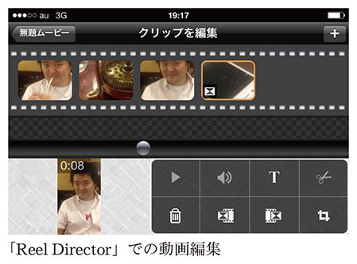
面白いと思ったものをｉＰｈｏｎｅですぐに撮影して、その場でＹｏｕＴｕｂｅにアップする。「撮って出し」の感覚は、ｉＰｈｏｎｅの前と後で完全に変わりました。
ｉＰｈｏｎｅでは、ＯＳ標準のカメラアプリ以外にも、さまざまなカメラアプリがあります。たとえば、インターバル撮影した静止画を一本の動画につないだタイムラプス動画を作成するアプリがあります。雲がものすごいスピードで流れる映像や、１日の街の様子を数分に縮めて再生する映像があるでしょう。従来であればそういった機能を搭載したデジカメが必要でしたが、ｉＰｈｏｎｅでタイムラプス動画を簡単に作れるアプリが続々登場し、ＹｏｕＴｕｂｅでもそういう作品が増えていきました。
また、スタビライザー（カメラの手ブレを抑えるためのヤジロベエのような機器）や外付マイク、コンバージョンレンズなど、周辺機器も続々と発売されるようになりました。また、防水ケースも登場し、防水カメラも使わなくとも済むようになりました。
ｉＰｈｏｎｅ ３ＧＳによって、高価な機材や特別な知識がなくとも、撮影、編集、アップロードをたったひとつの小さな端末でできるようになったのです。一昔前ならまるで夢のような環境です。
この面白さをもっと広めたいと考えた私は、アップル社に企画提案して、「ｉＰｈｏｎｅ ３分映画祭」というイベントも開催しました。アップルストア銀座のシアタールームなどで全４回開催しましたが、毎回アップルストアのイベント動員記録を塗り替えるほどの人気で、席に着いているお客さんよりも立ち見の方のほうが圧倒的に多いという盛況ぶりでした。
インターネットを通じて多くの人々に訴えかけることによって、モテたい、人から認められたいという「承認欲求」を満たしたいと考える風潮が、近年悪い方向で露呈しています。飲食店の冷蔵庫に入った写真をツイッターに投稿するような、「バカッター」と呼ばれる一連の事件にもつながっています。ＹｏｕＴｕｂｅ上でも、高校生が下校中の小学生に詰め寄り、泣かせてしまう事件がありました。
自己のアイデンティティを確立すべき年代、そしてコミュニケーション能力を養う年代にこういった欲求にかられることは不幸でもあります。私が思春期の頃はどう頑張っても世界中に発信することができませんでしたから、くだらない度胸試しやイタズラをしたところで、知れ渡るのはせいぜい狭いコミュニティ内でした。ところが今やインターネットによって、ちょっと周囲の友人たちに自慢するつもりが、世間全体を騒がしてしまうことにもつながりかねません。
また、バカッター並みの惨事には至らなくとも、歪んだ形で承認欲求は現れてきます。10代のユーチューバーのなかには、他人の動画のコメント欄に脈絡もなく「オレのほうが面白いぜ」と書込んでいく人がいます（たいていはちっとも面白くないのですが）。そんな度を越した主張もさることながら、そもそもみんなが「面白い」かどうかの尺度だけでやっているあたりに、インターネット時代特有の悲哀や未熟さを感じます。さらには、「殺すぞ」と平気で書き残す人さえいます。これは脅迫として警察に通報していいレベルで、看過できません。
しかしこれは、大人が悪いと言うより他ありません。デジタルネイティブの子どもたちに無責任にツールだけは開放しているのですから。
フェイスブックで「２歳児でもｉＰａｄ使って○○○できた！」なんていう親バカの写真投稿があるたびに、ああ大変残念だなと思ってしまいます。私の息子も２歳頃までＭａｃを使って絵を描いたりしていたのですが、保育士さんに「お子さんは筆圧が弱くてクレヨンをうまく使えません」と指摘され、ハッとしました。
極めて個人的な見解になりますが、自己を確立する前の子どもが「何も持たずに」ただ他人の真似事をして「オレのほうが面白い」と騒ぐだけなら、その前に時間を割いて学ぶべきことは山ほどあるはずです。コミュニケーションにおけるマナーはもちろん、投稿することに伴う責任、特に誹謗中傷については罪に問われる可能性が大きいことを知り、人間関係や仕事を通してアイデンティティがしっかり築けてからでも何ら問題はありません。
有名になりたい、モテたい、お金が欲しい、地位が欲しい、そんな欲求は誰でもありますが、それだけでは中身が空っぽのまま。ユーチューバーになった結果、地位も名声も手に入れたという人はいるでしょうが、地位や名声を手に入れるためにユーチューバーになるというのは少しズレていると思いませんか。
第３章で見たように、動画の置き場だったＹｏｕＴｕｂｅがＳＮＳ的要素を得てきましたが、コミュニケーションを楽しむ動画サイトは、もちろんＹｏｕＴｕｂｅだけではありません。ライブ配信がメインのサービスとして知名度が高いのは、「Ｕｓｔｒｅａｍ」や「ニコニコ生放送」でしょう。
ライブ配信サービスの草分けであるＵｓｔｒｅａｍは２００７年にサービスを開始し、２０１０年にはソフトバンクからの出資を受け入れて日本でもサービスを本格化させました。ただ現在、日本ではやや下火になってきた感が否めません。
Ｕｓｔｒｅａｍはサービスのコンセプトが優れていて、ツイッターやフェイスブックとのソーシャルメディアとの連携も早くから取り入れていました。しかし、投稿したコメントが反映されるまでにタイムラグがある、配信を録画するアーカイブ機能が不安定、広告がずっと表示されたままといった不満の声がよく聞かれます。また、Ｕｓｔｒｅａｍで配信されるのは、オンタイムで視聴しないと意味がないライブコンテンツが多く、配信時間が電車で移動しているときや勤務時間と重なっていると、見られません。
これに対して、ドワンゴのニコニコ生放送（以下、ニコ生）は、場の盛り上がりをうまくコンテンツにすることに成功しました。
２００６年12月、「ニコニコ動画」からサービスをスタートさせましたが、初期コンセプトは、ＹｏｕＴｕｂｅを始めとする他の動画共有サイトにアップされた動画を引用し、その動画上にユーザーからのコメントをオーバーラップして表示するというものでした。つまり、「ネタをみんなで共有して楽しむ」ということが出発点です。ところが、２００７年２月にはＹｏｕＴｕｂｅからアクセスを遮断されてしまい、ニコニコ動画は独自の動画共有サービスとして再出発することになりました。その後、ライブ配信サービスのニコ生が追加されます。動画サービスとしては後者のほうが人気になっていますが、一貫して重視されているのは、オーバーラップのテロップを活用したユーザー同士のコミュニケーションです。
同じくライブ配信のＵｓｔｒｅａｍと比較すると、ニコ生の面白さがよくわかります。リアルタイムで見ないと面白くないＵｓｔｒｅａｍに対してニコ生は、アーカイブを後から見ても十分面白いのです。生放送ではないアーカイブされた番組でも、ライブと同じようにコメントが流れてくるので、擬似的ながらライブのような一体感があります。この擬似的ライブ感は、テレビでサッカーや野球の試合を録画放送するときにも応用可能でしょう。
ニコ生の配信者は「生主」と言われ、有料のプレミアム会員になった上でコミュニティを作り、動画を配信します。以前は著名人でなければ月額課金の有料番組を配信できる「チャンネル」を作れませんでしたが、２０１３年からは一般ユーザーもチャンネルを作れるようになりました。ただし、チャンネルを立ち上げるためには、活動実績やコミュニティの登録人数などによる選考が行われるため、誰でも簡単に有料配信が行えるわけではありません。
ニコ生の視聴者は、コメントを書き込むとテロップになって流れるということもあり、番組に参加しているという当事者意識が強くなります。その結果、独特な濃密のコミュニティを形成しています。
ＹｏｕＴｕｂｅにも、ニコ生のような「ＹｏｕＴｕｂｅ Ｌｉｖｅ」という動画ライブ配信機能があり、２０１３年末にはすべてのユーザーがこの機能を使えるようになりました。しかし、少なくとも日本では、ＹｏｕＴｕｂｅ Ｌｉｖｅの話題性はあまり広がっていないように感じます。企業の公式チャンネルなどによる配信例はいくつもありましたが、ニコ生の生主がＹｏｕＴｕｂｅに移行して、ＹｏｕＴｕｂｅ Ｌｉｖｅを始めるということもないようです。
ニコ生とＹｏｕＴｕｂｅでは、配信者と視聴者のコミュニケーションにも大きな違いがあります。ニコ生では視聴者のコメントがリアルタイムに流れていくのに対して、ＹｏｕＴｕｂｅのコメント欄は動画のタイムラインと同期しておらず、ブログやＳＮＳのコメント欄と同様に書き込みが蓄積されていくタイプです。以前は、ＹｏｕＴｕｂｅでのコメントは誰でも自由に行えましたが、今は実名制のＳＮＳであるＧｏｏｇｌｅ＋に登録している必要があります。
ライブの動画配信という観点からすると、ＹｏｕＴｕｂｅ Ｌｉｖｅ自体よりも、「Ｇｏｏｇｌｅ＋ハングアウト オンエア」のほうが、面白みがあります。
Ｇｏｏｇｌｅ＋上では、ハングアウトというビデオチャット機能を使って、誰でも多人数のビデオ会議を開くことができます。ビデオ会議の模様を、ＹｏｕＴｕｂｅ Ｌｉｖｅの仕組みを使って誰でも見られるように配信できるのが、ハングアウト オンエアというわけです。ライブ配信の内容は、ＹｏｕＴｕｂｅチャンネルのコンテンツとして登録され、あとから視聴することもできます。
ハングアウト オンエアならではの機能を番組に活かしているのが「Ｂｌｏｇｇｅｒ Ｎｅｘｔ Ｄｏｏｒ」、通称「ブロネク！」です。複数のブロガーによるトーク番組で、各ブロガーは各々の自宅から参加します。「朝まで生テレビ！」のような討論番組（井戸端会議とも言う？）を、特別な機材なしにアマチュアだけで開催することができるようになったのです。
手軽にライブ配信ができるという売りで登場したＵｓｔｒｅａｍやニコ生、ＹｏｕＴｕｂｅ Ｌｉｖｅですが、初心者にとっては敷居が高いのも確かです。人気ユーチューバーには大勢のファンが付き、規模も大きくなっています。初心者が参入して配信を始めるのは、心理的にも戦略上も難しいことかもしれません。
今、ライブ配信サービスで人気を集めているのが「ツイキャス」です。１秒間に表示されるコマ数（＝フレームレート）は10・０ｆｐｓ（frames per second）程度、画面サイズも最大で３２０×２４０ピクセルとそれほど高画質ではありませんが、スマートフォンだけで誰でも無料ですぐに始められます。サービスは２０１０年から開始し、翌年には女子中高生の間でブレイクしました。
ニコ生やＹｏｕＴｕｂｅ Ｌｉｖｅでライブ配信をするのは、ある程度ファンが付いている人が多数派な一方で、ツイキャスユーザーで多いのは、まったくの素人（新しい層という意味で）による配信です。面白ネタをライブで拡散したいのではなく、「誰でもいいから話をしたい」という配信者が多いようです。
それを象徴しているのが、「コメント来るまで無言」というタイトルの配信の多さです。誰かと話したい、かまってほしいという欲求を持つ人が多いのでしょう。ツイキャスでは、ツイッターやフェイスブックのアカウントがあれば誰でもコメントでき、配信者はこのコメントをリアルタイムで参照しながらライブを進められます。音声だけの配信もできるため、心理的な抵抗も少ないのです。
ツイキャスの元々のコンセプトが何だったのかは不明確ですが、現在のツイキャスは映像配信サービスというより、ポケベル、ケータイメール、ＬＩＮＥの流れにつながるコミュニケーションツールにも見えてきます。今後は、ＬＩＮＥなどのチャットサービスも、ツイキャス的な映像コミュニケーション機能を搭載してくる可能性は高いでしょう。
ライブではない動画の共有サービスとして、ショートムービーにも注目が集まっています。ＹｏｕＴｕｂｅなどでも数秒程度のきわめて短い動画が投稿されることは多々ありましたが、現在話題になっているのは、ほんの６秒の撮影時間に特化したサービスです。
２０１３年１月からツイッターが提供している「Ｖｉｎｅ」では、専用のスマホアプリを使って最大６秒の動画を作成し、そのままＶｉｎｅのウェブサイトに投稿できます。ツイッターのタイムライン上では、投稿された動画が自動的に連続再生されます。専用アプリの画面を押している間は録画され、画面から指を離すと一時停止になるという、これ以上ないほど簡単な操作です。
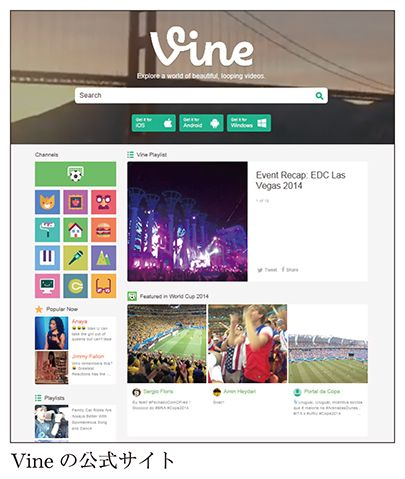
フェイスブックの写真投稿サービス「Ｉｎｓｔａｇｒａｍ」にも、同様にＳＮＳと連動した動画共有サービスがありますが（こちらは最大15秒）、Ｖｉｎｅとは対照的にさっぱり人気が集まりませんでした。動画共有サービスは、事実上Ｖｉｎｅの一人勝ち状態です。
たった６秒で何を撮影できるのか、と思われるかもしれませんね。ところが、人は制約があるほど創造性を発揮できるものです。古典的な映像マジックを配信する人気Ｖｉｎｅクリエイターも登場しています。日本でも中高生を中心にブレイクしているサービスで、女子高生のＲｅｉｋａ Ｏｏｚｅｋｉさんは、投稿したあるあるネタが話題になり、あっという間に10万人以上のフォロワーを集めました。
サービスが開始されてから間もないＶｉｎｅは、初期のＹｏｕＴｕｂｅとよく似た状況にあります。６秒という時間をどう有効に使えばいいのか誰もが試行錯誤している段階で、まだ一発ネタ系の動画がもてはやされることが多いのですが、そのうち定番のスタイルや使い方がある程度固まってくることでしょう。企業によるプロモーションへの活用もまだまだこれからでしょう。
私もこの６秒間の世界には可能性を感じており、日々の動画撮影にも取り入れ始めました。そのひとつが、『歩いて家まで帰りまＳＨＯＷ』という動画シリーズです。終電を逃してしまったあと、徒歩で帰宅する道すがら街中で発見したものや、歩く自分の姿を撮影して、ネットにアップロードする。そういう遊びを不定期にやっています。
高架下の風景が面白い、笑える看板があった、いよいよ家の近くまで来た等々、都度公開・更新しているため、視聴者にとっては「今まさに進行している出来事」というライブ感があります。「あの場所にも寄ってみて」といったリクエストが届いたり、そうしたコメントに応える動画をアップロードするなど、コミュニケーションを取りながら動画撮影を進められるのです。Ｕｓｔｒｅａｍやツイキャスのようなライブストリーミング配信にも似ています。こうしたことができるのは、通信機能やビデオ編集機能を備えたスマートフォンならではで、ふつうのビデオカメラではできません。
始めた頃は、ザクティを使っていましたが、それだと、たまたまザクティを持っていて、なおかつ十分バッテリーの残量があるときにしか撮影できません。何しろ終電を逃しての徒歩帰宅ですから、数時間に及ぶことはざらにあります。さらに、ネットに公開するためには、帰宅したあとで動画を編集して何回かに分けてアップロードするという手間も必要でした。
２０１２年発売のｉＰｈｏｎｅ５では、インカメラ（スマートフォンの背面ではなく画面側にあるカメラ、フロントカメラとも。アップル製品ではＦａｃｅ Ｔｉｍｅカメラという呼称）でも７２０ｐのＨＤ動画を撮影できるようになりました。画面側にあるカメラですから自分の姿を確認しながら撮影する「自撮り」にたいへん都合のいい仕様です。このｉＰｈｏｎｅ５を入手して以降、ビデオカメラを持っていない場合でも自撮りのＨＤ動画を公開しやすくなったのは言うまでもありません。ちなみに、自撮りのビデオや写真をウェブ上に公開することは、英語圏ではセルフィー（Selfie）と呼ばれます。
そしてｉＰｈｏｎｅ５は４Ｇ高速通信対応のモバイル端末ですから、30秒から１分くらいの動画をアップロードする程度のことは、電波が届いている限り移動しながらでも可能です。暗所撮影の画質向上もあり、私はビデオカメラではなくｉＰｈｏｎｅ５で道中を撮影し、トピックごとにその都度、ほぼ撮って出しでＹｏｕＴｕｂｅへ直接アップロードするようになりました。
ほぼリアルタイムで公開した一連の動画は、帰宅後再編集し、まとめ動画として再度公開します。みなさんもホームビデオなどで経験があるかと思いますが、従来のように何でもかんでも撮影した膨大な映像素材があると、あとで熱が冷めてから編集するのはとても骨折りです。ところが、私がｉＰｈｏｎｅから都度公開していったように、既に時間軸に沿って重要なトピックごとに選び出されている場合には、再編集と言っても概ねそれらを順番につなぎ合わせるだけで、ある晩の出来事のまとめ動画として完成するのです。
Ｖｉｎｅでは、録画ボタンを押している間に録画状態になり、指を離すと一時停止します。動画の尺の合計が６秒になるまでその作業を繰り返します。編集はできませんが、この一時停止を利用してカメラの向きを変えるなどのカット割りをすることも可能です。そのため、まったく編集なしの「撮って出し動画」よりも凝った演出ができ、ほんの６秒の間でも多くの情報量を詰め込むことができるのです。撮影済みの動画はスマートフォンのカメラロールにも保存されるため、あとからパソコンへデータをコピーし、簡単に編集を加えることも可能です。つなぎ合わせるだけで、誰でも十分テンポのよい動画に仕上がります。
Ｖｉｎｅで撮影した動画はツイッターのタイムラインにも投稿されるため、視聴者とコミュニケーションを取るのもＹｏｕＴｕｂｅ以上に簡単です。ただ『歩いて家まで帰りまＳＨＯＷ』のように都度公開していくような動画シリーズは、途中の１本を取り出して見た視聴者からしてみたら、さっぱりわけがわからないかもしれません。撮影を始めた１本目には「これから歩いて家まで帰ります」とコメントを入れますが、２本目以降はいちいちそんなことを説明しませんからね。現状では一発ネタ動画が注目されがちなＶｉｎｅだけに、余計にそういった意見が生まれやすいかもしれません。
もしもみなさんの中で、ハイクオリティな映像を撮っている方がいれば、ＹｏｕＴｕｂｅではなく「Ｖｉｍｅｏ」にアップロードしたほうが相性がよいでしょう。圧倒的に動画投稿数が多く、ジャンルを問わず作品が集まってくるＹｏｕＴｕｂｅ上にアップロードしても、そういった作品を探している人になかなか見つけてもらえません。逆に、作り手のキャラクターと強く結び付いていたり、一発ネタや過激なチャレンジ動画のようなものであれば、ＹｏｕＴｕｂｅにアップしたほうが向いていると感じます。
Ｖｉｍｅｏはプロの映像作家からの支持が厚く、クオリティの高い作品が投稿されています。また規約上も、完全に自作のオリジナル映像をアップロードすることが定められており、プロやハイアマチュア層のクリエイター向けと言えます。より高画質、大容量の映像をアップロードしたいユーザー向けには有料プランが用意されており、これがＶｉｍｅｏの収益源になっています。
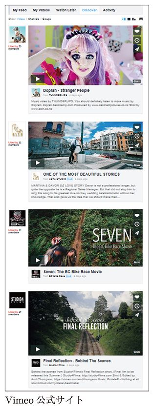
以前、あるアニメーション作家が、折り紙で作った素晴らしい作品を動画に収め、ＹｏｕＴｕｂｅにアップしていました。私がその作品を見た時点では、再生回数は２万回程度。ところが、再生後にお勧め動画として表示された、ヤンキーっぽいお兄さんがダベっている動画の再生回数は５万回。これには、正直ショックを受けました。ＹｏｕＴｕｂｅ上では芸術作品を観賞することよりも、動画を起点としたユーチューバーとのコミュニケーションのほうが求められているということでもあります。
広告モデルのＹｏｕＴｕｂｅとしては、収益を最大化するために後者のタイプに力を入れていくことになるのでしょうが、何でもいいから再生数を稼ぎたいというのではなく、映像作品として評価を得たいクリエイター志向の人は、Ｖｉｍｅｏなどのサービスの併用もお勧めします。
私はふだん、ガジェットのレビュー動画をＹｏｕＴｕｂｅにアップしていますが、もともとビデオアート色が強いものを得意としてきたので、今でもごくたまに短編作品を制作する機会もあります。こういう作品をＹｏｕＴｕｂｅにアップすると、子どもの視聴者から「どうしたんですか！」というコメントなども届いて、苦笑してしまうことがあります。完全に、お客さんのタイプが違うのです。
写真サイトで言えば、「Ｉｎｓｔａｇｒａｍ」はふつうの人がスマートフォンで料理や風景などを撮って、適当にフィルター等をかけて楽しむためのもの。Ｉｎｓｔａｇｒａｍは、写真を通じたコミュニケーションを目的にしています。これに対して、「５００ｐｘ」というサービスには、本気で写真を撮っている人による美しい作品が集まります。
動画共有サイトというとＹｏｕＴｕｂｅがすべて独占してしまうかのようなイメージがあるかもしれませんが、このように、コミュニティの性格や用途によって、すみ分けが続くことになるでしょう。
これだけネット上に情報があふれていると、コンテンツを探すほうも探されるほうも、一苦労です。そこで、いろんな話題やニュースを分類し、案内する役割＝キュレーションが求められています。日本ではまだ機が熟すのに時間がかかりそうですが、英語圏のＹｏｕＴｕｂｅでは、すでに多くのキュレーション番組が人気を集めています。
ウェブにおけるキュレーションというのは、収集した情報を分類して再共有することを指します。様々なニュースサイトやブログ、ソーシャルメディアなどから記事をピックアップしたいわゆる「まとめサイト」と同じ動きが、ＹｏｕＴｕｂｅ上でも起こっているのです。
面白い動画を探したい視聴者にとっても便利ですが、動画を投稿する側にとってもメリットがあります。人気のキュレーションサイトに動画が掲載されることがあれば、ぐんと再生回数が上がるのです。
しかし、こうしたキュレーションサイトを運営するには、他者が投稿した動画を利用するため、どうしても著作権の問題が浮上してきます。著作権の問題では、日本はまだまだ対応が後回しになっています。米国ではこういった場合、フェアユース（一定の条件下であれば、著作権者の許可がなくても著作物を二次使用できること）に基づいて肯定的な判断がなされるか、または同じマルチチャンネルネットワーク（ＭＣＮ、後述）に属するユーザー同士なら、動画を自由に使用できるといった協定を設けるなど、日本よりも他者のアップロード動画を利用しやすい土壌が整いつつあるように感じます。
著作権の注意事項については、ＹｏｕＴｕｂｅサイト内の著作権センター「フェアユース」の項（http://www.youtube.com/yt/copyright/ja/fair-use.html）に記載があります。「一定の条件を満たしていれば、著作権所有者から許可を得なくても、著作物を再利用できる」「著作権所有者の許可なく著作物を使用できるかどうかのルールは、国によって異なる」と記述されています。日本でも、法改正を前提としたフェアユースが議論されたこともありましたが、結果としてはウェブ動画の引用につながるような条項はなく、今後に持ち越されてしまいました。
パロディについても、オリジナルの著作権がどう守られるべきかという議論があるでしょう。２０１３年３月に文化庁が公表した「文化庁 パロディワーキングチーム報告書」には、こうあります。
「一定の動画投稿サイトにおいて、ユーザー又は企業が、あらかじめ二次使用を認めた素材を登録し、第三者が当該素材を利用して創作した作品が投稿されるというサービスが存在し、ユーザー同士が自分たちのコンテンツそのものをお互い高め合うことを前提として二次創作を許容する文化を育成するための箱庭的なルールが設けられている」（平成25年３月 文化審議会著作権分科会法制問題小委員会パロディワーキングチームより）
「箱庭的」という表現ですまされているあたりに、広義のパロディ作品の法規制についてはやや後ろ向きな姿勢が感じられます。相変わらず明確な線引きもなく曖昧なままなのは、困りものです。
なおＹｏｕＴｕｂｅでは、クリエイティブ・コモンズ・ライセンス（著作権者が、他者に作品の使用を許可することを示したもの）を使って動画を公開できるオプションも２０１１年より導入しており、実質的にはこの仕様によって、他者の動画を利用する仕組みは整ったことになっています。クリエイティブ・コモンズ・ライセンスを掲示している動画ページでは、「リミックス」ボタンが表示され、ＹｏｕＴｕｂｅ上で動画のリミックス編集ができるという、力の入ったものです。
とはいえ、クリエイティブ・コモンズ・ライセンスを利用して公開されている動画が少ないため、また、引用したい動画がこれを掲示しているとも限らないため、積極的に活用できるわけではありません。
面白い動画を紹介するキュレーションサイトの需要は高まっていますが、動画を引用するには問題がある。こうした問題をうまく解決し、なおかつ面白い番組にしあげているキュレーションチャンネルに、「Eat Your Kimchi」があります。
Eat Your Kimchiは、ソウル在住のカナダ人カップルによる、Ｋ―ＰＯＰや韓国文化を紹介する音楽チャンネルで、韓国のアーティストに関するトークとミュージックビデオで構成されています。トーク部分とミュージックビデオはそれぞれ別個の動画で構成され、それをＹｏｕＴｕｂｅの「再生リスト」機能でまとめるという方法で配信しています。
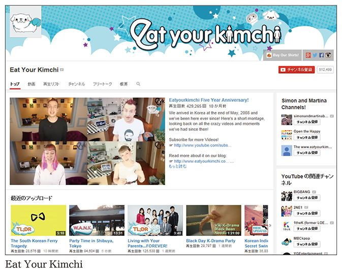
再生リストはＹｏｕＴｕｂｅの基本機能で、音楽再生ソフトのプレイリスト機能のように、複数の動画をまとめて任意の順で再生できるようにしたものです。ここには、アップロード者以外の動画も含めることができます。Eat Your Kimchiは、ミュージックビデオ部分の動画には音楽レーベル公式のＹｏｕＴｕｂｅ配信動画を利用しているため、著作権的な問題はありません。
ただ、再生リストを利用する場合、リスト中の動画を単独で再生しても意味がわからなくなりますから、うまく再生リストから見てもらえるように誘導する必要はあります。
実は私も、人気ユーチューバーの瀬戸弘司さんやアリケイタさんと３人で、「ガじる！」という動画キュレーション番組を配信したことがあります（２０１３年）。しかし日本ではEat Your Kimchiのような再生リスト方式での配信はあまり馴染みがないため、私たち３人が動画を視聴しているシーンで、目的の動画へのリンクを張る方式で対処しました。
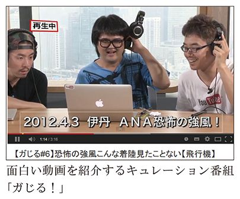
ところが、視聴者にしてみれば「出演者が動画を見ているだけ」で、視聴者自身はその場ですぐ観られないので不評でした。テレビのニュースやバラエティ番組などで見馴れたワイプ（ピクチャーインピクチャー）の形式にしてほしいという要望が多く届きましたが、動画の利用許諾を得るリソース等が不足していたため対応ができず、番組の継続困難と判断するしかありませんでした。
結局のところ、日本では、ＹｏｕＴｕｂｅのコンテンツをキュレーションしているのは、面白動画を紹介するＹｏｕＴｕｂｅ外のウェブサイトくらいしかないのが現状です。
たとえば、笑える動画を紹介する「笑うメディアＣｕＲＡＺＹ」、仰天動画を選りすぐった「Ｗｈａｔｓ（ワッツ）」といった万人ウケするものから、パズドラという大ヒットゲームだけにフォーカスした「ＢｕｚｚＤｒａ（バズドラ）」、メイクアップのハウツーを紹介する動画を扱う「Ｍａｋｅ ｕｐ Ｂｕｚｚ（メイクアップバズ）」などがあります。これらのサイトの特徴として、一般的なウェブサイトに比して何倍も大きなソーシャルメディアへの共有ボタンを配し、フェイスブックやツイッターで拡散するよう視聴者に促しています。こうした「バイラルメディア」と称されるサービスも、やはり米国から始まって日本にも広がってきました。従来の動画紹介ブログよりも一層カテゴリーを絞った、こうした特化型のサービスが、若い世代をメインユーザーとして日本でも人気を博しているのです。
今後、動画数がますます増えていき、ジャンルも細分化が進むと、自分の趣味趣向に合ったコンテンツやユーチューバーに出会いにくくなるでしょう。それは、視聴者にとっても動画配信者にとっても不幸なことです。面白いコンテンツを紹介するキュレーターやコンシェルジュの重要性はますます高まっていくはずです。
引用した問題をクリアした新しい動画サービスに、ＹｏｕＴｕｂｅの創業者でもあるSteve ChenとChad Hurleyの２人によって始められた、無料の専用アプリを使って動画を撮影する「ＭｉｘＢｉｔ」というサービスがあります。
ＭｉｘＢｉｔは動画界におけるマッシュアップ（複数の提供元からの素材を組み合わせてひとつの作品に仕上げること）サービスのパイオニアと言えます。他の動画共有サービスとは一線を画しているＭｉｘＢｉｔのユニークな点は、自分の撮影した動画クリップだけでなく、他人が撮影したクリップも自由につなぎ合わせて作品を作れるところにあります。２０１４年４月からはＭｉｘＢｉｔ上で作った作品をＹｏｕＴｕｂｅなど他のサービス用に書き出すことが可能になりました。
自分の撮影した何秒間かの動画をつなぎ合わせるのでもいいですし、アプリに登録しているその他大勢のユーザーのさまざまな動画をつないでもかまいません。まったくジャンルの違う画像をミックスすることで、意外な面白さの出る別の作品に仕上げる楽しさもあるでしょう。
ただ、現状ではこのサービスが爆発的にヒットするというまでには至っていません。クリエイティブツールとしては画期的ではありますが、動画撮影に馴染みのないユーザーにとっては敷居が高く、クリエイティブな活動に関心の高い一部の層のみにとどまってしまっているのが残念です。
また、ゲーム周辺で面白い動きがあります。任天堂が、ＹｏｕＴｕｂｅ上でのゲーム実況動画についてアフィリエイトプログラムを用意しているというのです。
ゲーム実況動画というのは、テレビゲームをプレイしている画面を録画し、プレイヤーが実況ナレーションなどを加えていくというものです。上手い人がつぶさに解説してくれるのはためになりますし、下手な人が信じられないような場所で自爆して騒いでいる姿も一興、最近の動画界隈では人気コンテンツです。
まだ本書執筆時点では公式ツイートで発表されたのみで、全貌はあきらかになっていませんが、任天堂の著作物であるゲームの画面内容を、プレイしている個人が収益化できるとうたうのですから、何やら不思議な感じもあります。
しかし著作権的に問題がないわけでもなく、これまで業界内でのコンセンサスもなかったため、見つけ次第削除する場合もあれば事実上黙認するところもあったりと、各社対応がまちまちでした。公式の宣伝と違ってユーザー視点に立ったものですからプロモーション効果も高く、何より客である消費者が楽しんでやっていることですから、メーカーサイドとしても難しい対応を迫られていました。
大手ゲーム会社の任天堂がそこに一石を投じることで、今後の流れが一変してしまうことは大いに予想されます。ゲームだけにとどまらず、マンガやアニメなどをマッシュアップした二次創作についても影響を及ぼすかもしれません。
ＹｏｕＴｕｂｅが登場する前から、動画共有サイトに取り組んできたのが、芸人のＭＥＧＷＩＮさんです。体当たり系の面白動画を毎日配信し続けてきた彼は、ユーチューバーが活躍できる場を広げ、次世代にバトンを渡すことが大切と考えています。
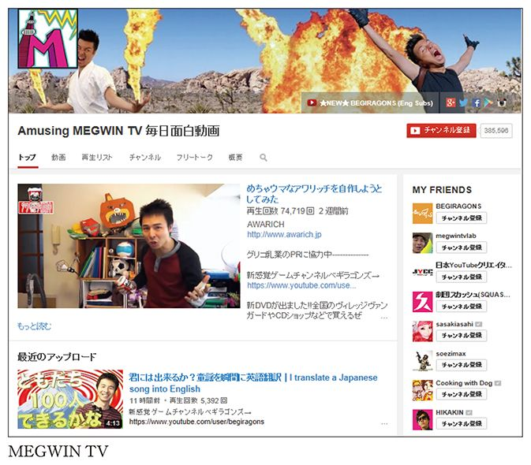
ＭＥＧＷＩＮさんは、元々は舞台を中心に活躍するピン芸人でした。ネタとネタの間の衣装替えの時間、会場を真っ暗にしてお客さんを待たせておくわけですが、どうせならその間に自作の映像を流して場をつなごうと考えたのがきっかけでした。
「ところが、コントの芸よりも場つなぎの映像のほうがウケるようになっちゃったんです（笑）」
ＭＥＧＷＩＮさんが舞台で披露していた芸は、人前で暴れたり、客席に突撃したり、×××（自粛）を出したりといった、正直あまりテレビ向きとは言えないものでした。また、芸能事務所にも所属していなかったため、いくら舞台でお客さんにウケたところでテレビに出られる当てはまったくありません。
「どうせテレビに出られないなら、『じゃあ、自分でネットに映像をアップしてやるよ！』と思いついたのです」
この頃世間ではブログブームが起こり（第３章「ネット史上画期的だったブログという仕組み」参照）、個人によるコンテンツ発信が盛んになり始めていましたが、まだＹｏｕＴｕｂｅは登場していません。
「自前のサーバーを用意してサイトを作り、動画ファイルを貼り付けて公開していました。『いいね！』みたいな機能も全部自分で用意して。動画を配信していくうちに、そういうシステムが絶対に必要になると感じたので」
その後、ＹｏｕＴｕｂｅが登場し、「やられた！」と挫折を味わったと言います。
「僕は芸人であって、プログラマーでもビジネスマンでもなかったけど、こういう動画サービスはこれから絶対流行るという予感はあったので、一人でいろいろと試行錯誤しながらシステムを作っていました。だからそのあとでＹｏｕＴｕｂｅが出てきて、とても悔しかったのを覚えています。『いつか、ＹｏｕＴｕｂｅをぶっつぶしてやる』という気持ちは今でも変わっていません（笑）」
自分のサイトを始めたＭＥＧＷＩＮさんは、毎日コメディー動画をアップロードするという目標を立てました。
「人気のあるブログを調べると、だいたい毎日更新していました。けれども、たいていの内容は『今日はこんなご飯を食べた～』という小ネタでつまらない。それならと、編集したコメディーを毎日アップすることにしたのです。毎日アップしていけば、90歳になったとき、20代の自分を振り返ることもできる。周りを見てもそんなことをやっているやつは誰もいないし、『これはとんでもないものができあがるぞ......』と、ゾクゾクしました。今でも毎日動画を配信しているのも、別にお金が欲しいからではなくて、まだ作品作りの途上なんですよ。まあ、それくらいやらないと目立つことはできません。あわよくば、『ブログの女王』と言われた眞鍋かをり的なポジションも取ろうと思っていましたしね」
当時は、芸人の活動だけでは食べていけなかったＭＥＧＷＩＮさんは、アルバイトも掛け持ちしており、その合間を縫って撮影や編集を一人で行っていました。
「睡眠とバイト以外のすべての時間を動画制作にあてていました。今でもそんなに変わっていませんけど（笑）。毎日アップしようとすると、時間が足りなくて、常にビデオカメラを持ち歩いていた時期もありました。バイトの帰りに、そのまま近所の公園で撮影することもありました」
苦労の甲斐があり、日本でＹｏｕＴｕｂｅが本格的に展開されるようになってから、ＭＥＧＷＩＮさんはコメディーのカテゴリーでトップに位置するようになりました。スタッフと一緒に全国各地を旅する旅企画も充実させています。
「動画配信を始めた当初から、視聴者のほとんどは10代の若者です。でもこれからは30代、40代の視聴者をちゃんと呼び込めるコンテンツを作らないといけないと考えています。旅の過程にコメディーを混ぜ込みつつ、大人の観賞に堪えるものにしたいですね。ただ、10代には旅モノというのはウケが悪くて、ガクッとページビューが減ってしまう。アンケートでも『旅なんてしてほしくない、体張ってくれ』と書かれたりしますが、新しいことをやるためには何とか踏ん張っていかないとダメでしょうね」
２０１１年６月、体重計で知られるタニタの出資により、ＭＥＧＷＩＮさんは株式会社ＭＥＧＷＩＮ ＴＶを設立しました。タニタは、書籍『体脂肪計タニタの社員食堂』の大ヒットや、レストラン事業への進出など、新しい取り組みで話題を呼んでいます。また、ニコニコ動画では最初に企業コミュニティを開くなど、ネットへの積極的な取り組みでも知られます。
「きっかけは、体重計を使ったネタをやろうとしたことです。体重だけでなく、筋肉量や体脂肪も測れる体重計が欲しかったのですが、調べてみたら１万円以上もする。だったら、どこか提供してくれないかなあと企んであちこちに企画書を送ったところ、返事をくれたのがタニタさんでした。
社長の谷田さんも僕のことをご存じでした。そこにいいタイミングで企画書が届いたというわけです。タニタさんからは『起業をお手伝いします』というとてもありがたい申し出をいただきました。当時はバイトしながら動画を撮っていて、まったくお金にならないような状況が続いていたので、『起業とかどうでもいいから、早くお金をくれ！』と言ってしまいそうになりましたが（笑）」
ＭＥＧＷＩＮ ＴＶでは、以前から動画制作を手伝っていた仲間二人をフルタイムで、また事務職の女性一人をパートタイムで雇っています。
ＭＥＧＷＩＮさんが会社設立を決意した理由は、「チームを作らないと、これから生き残っていけない」と感じたからと言います。動画を手伝ってくれる有志はこれまでにもいたものの、就職などでそのスタッフがいなくなれば、また一から新人を育てることになります。
「そういうことを繰り返しているだけでは、誰も将来が見えてきません。それに、僕自身はそれほど映像制作が好きというわけでもなくて、その部分を追求しようという気はありませんでした。けれど、一人で撮影しているとアングルもいつも同じになってしまうし、映像クオリティや脚本での勝負になってきたら負けてしまいます」
フルタイムで社員を雇用するためには、ただ動画を作って公開するだけではなく、きちんと売上を立てて、ビジネスとして回していく必要があります。
「『こいつらのことを守ってやらなきゃならない』という気にはなりますね。だから、新しいことに挑戦するにしても、『コケるなら早くチャレンジして、早くコケよう』と考えています。だらだら２年、３年とスタッフを飼い殺しにすることはできるのだろうけど、そんなことより『はい、ＭＥＧＷＩＮ、コケた！』と早めに結果が出たほうが、彼らも次に行きやすいでしょう。
スタッフとして働いてくれている連中は、映像制作にしてもどんどんスキルアップしているから、僕がダメになっても食っていくことはできるでしょう。いつの間にか勝手にすごい映像を作り始めていて、ここ最近は自分で動画を編集することもなくなってきました」
元々舞台で活動していたＭＥＧＷＩＮさんは、ＹｏｕＴｕｂｅとライブの連携による収益化を進めてきました。ライブへの集客だけでなく、ライブの模様を収録したＤＶＤを作り、自身のサイトで販売しています。
「ＹｏｕＴｕｂｅでファンになると、視聴者としては本人に会いたいという気持ちになるでしょう。その欲求を満たすためのライブですし、実際にお客さんに来ていただくことで収益化もできます。もともと舞台人でしたから、ライブというのはファンとの究極のコミュニケーションだと思っています」
ユーチューバーの収益というと、ＹｏｕＴｕｂｅパートナープログラムによる広告収入だと考えがちですが、ＭＥＧＷＩＮさんはそれに頼らない仕組みを作ることの重要性を説いています。
「ＹｏｕＴｕｂｅでの再生回数というのは、言ってみれば時価みたいなもので安定しません。特に日本ではまだＹｏｕＴｕｂｅだけで食べていける人は少数ですから、ＹｏｕＴｕｂｅ以外でお金を稼ぐための方法をきちんと自分で考える必要があります。僕の場合は、ＹｏｕＴｕｂｅからの収益が50パーセント、あとの半分は、企業とのコラボや物販からです。
ただ、基本的にコメディーというのは、日本企業にとってリスクが高くて敬遠されがちです。動画を再生するとき、企業広告が表示されますよね。広告を出稿する企業は、広告を表示させる動画のカテゴリーを選ぶのですが、コメディーだと『こいつら何をやるのかわからない』と、チェックを外されてしまいます。そういう理由で、コラボレーションも難しい面があります。だから、これからＹｏｕＴｕｂｅでコメディーをやるなら、英語圏やスペイン語圏を狙うという戦略も必要になってくるでしょう」
２０１３年秋から３カ月間、ＭＥＧＷＩＮさんとスタッフ２名は、ロサンゼルスに留学します。
「ＹｏｕＴｕｂｅ専用スタジオＹｏｕＴｕｂｅ ｓｐａｃｅ ＬＡに行き、クリエイターとコラボをし、現地のＭＣＮ（マルチチャンネルネットワーク）とのミーティングを重ね、英語以外にもいろいろなことを学びました。想像していたアメリカと合致した部分と、そうでなかった部分が明確になり、本当にいい体験をしました。これからも、アメリカには年に何回かは足を運ぶ必要がありそうです。
英語圏のファンを増やして、ゆくゆくは視聴者の半分が英語圏のファンになるようにしたいと思っています。ＹｏｕＴｕｂｅをやるなら、誰にも真似できない部分を極めていかないと面白くならないし、誰かが先にやっちゃうと僕はやる気をなくしてしまうので。９年前に僕が動画を始めたとき、誰も動画が流行るなんて思っていなかったでしょう？ だけど、僕はこれが流行るという確信がありました。今回もそう信じて、英語圏に進出してみるつもりです」
日本におけるＹｏｕＴｕｂｅでは、高い知名度を持つＭＥＧＷＩＮさんですが、クリエイターとしてトップに登りつめるよりも、ユーチューバーたちが自分たちの表現によって生きていける仕組みを作りたいと意気込んでいます。
「ＹｏｕＴｕｂｅの視聴者数がアメリカに次いで多いのは、日本です。けれど、日本で見られているのは、テレビの映像だったり音楽のプロモーションビデオだったりで、ユーチューバーの動画がそれほど見られているわけではありません。日本のユーチューバーがまだまだ面白くないから、見られていない。それだけの理由でしょう。だから、ユーチューバーになってみようという人もまだまだ少ない。海外では、テレビ局などよりもよほど出来がいい作品を作っているユーチューバーがたくさんいます」
その彼が目標としているのが、「ＶｉｄＣｏｎ」というＹｏｕＴｕｂｅの一大イベントです。これは、人気のあるユーチューバーやファンが世界中から集まる巨大なイベントであり、クリエイターや企業がそこで商談することもあります。オンラインビデオ好きの英語圏に住む中高生にとって、このチケットは垂涎の的となっています。このビデオの祭典は、２０１４年で５周年を迎え、今年はカリフォルニア州のアナハイムの地で６月26日から３日間開かれました。
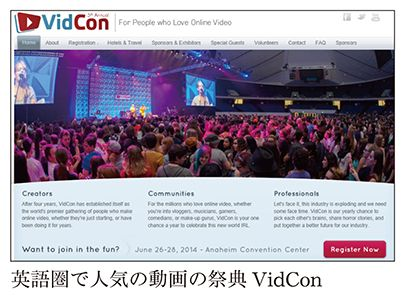
「英語圏でＹｏｕＴｕｂｅを見ている中高生に、『今一番欲しいものは？』と訊ねると、答えは『ＶｉｄＣｏｎのチケット！』だそうです。こういうイベントが日本でもできないと、ユーチューバーが育たない。だけど、日本のユーチューバーたちに話をしても、『いいですねえ。イベントをやるんなら出ますので』と言われて終わりです。『そういう〝箱〟がないから、仕組みから好きに作っていこう』と言っても、なかなか理解されません。『お金はいくらくらいもらえる？』とか『失敗したら借金が残るんでしょ？』とか言われてしまう。リスクがあるのは当たり前ですよ！ どうも日本人はリスクを取らずに楽に稼ごうという、狡猾すぎる面がありますね」
ユーチューバーが育つ仕組みを作ろうと、ＭＥＧＷＩＮさんは２０１３年、自腹を切って「ビデオクリエイターチャンピオンシップ ＶＡＮＣＨＯ」を開催します。登録者数が５万人以下のユーチューバーを対象にして、ジャンルを問わず面白い動画を募集するというものです。６２８作品の中から選ばれた８作品の中から、ユーチューバーが審査し、グランプリを選びました。
「優勝賞金の10万円は僕の自腹ですが、会場の費用や参加者の交通費など、運営費がものすごくかかったので、自腹を切るのは10万円じゃ全然すまない。幸い、エントリーしてくれた動画は６２８作品にも上り、10社くらいはスポンサーも付きました。とはいえ一口５万円ですから、ほとんど運営費の足しにはなりませんでしたが」
日本でもＹｏｕＴｕｂｅからスターが生まれないと、ユーチューバーの数が減って、企業からの広告出稿も減る。そうＭＥＧＷＩＮさんは危惧しています。
「ＶＡＮＣＨＯに応募してくる人にしても、僕も含めて今ＹｏｕＴｕｂｅで活動している人の作品を見てビデオを作るので、どうしても劣化コピーにならざるをえません。『ダウンタウンにあこがれて芸人になりました』ならまだいいかもしれないけど、僕と同じことをやっているだけというのは、なんだか寂しいじゃないですか。先陣を切って動画の世界に切り込んでいる僕らがレベルを上げて変わっていかないと、次の世代がまったく育たなくなるのではないかと案じています」
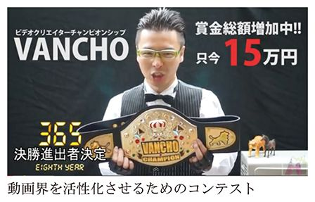
ユーチューバー同士が競い合うのではなく、ともに個性を尊重し、さらに次世代にバトンを渡す――。コンテンツ主体ではなく「人」主体の動画文化を真剣に考えるＭＥＧＷＩＮさんの思いからは、トップユーチューバーとしてのプライドを感じます。
＊
実のところ私も、私のまねごとのようなコンテンツを公開している子どもたちには頭を悩ませています。といっても何か迷惑を被ったりするわけではないのですが、「ジェットさんの動画を見て自分でもレビュー動画始めました！」なんていうメッセージを受け取って、その子の動画を見てみるとＭＥＧＷＩＮさん言うところのコピーそのもの。
学ぶの語源は真似るから来ているとも言われますが、それにしたって他に何かやることはあるだろうと。ときには「まだ中学生なのでジェットさんのような高いものは買えませんが」と言っては、コンビニで買って来たパンを紹介したりする子もいました。子どもたちが好きだと言って真似てくれるのはうれしいのですけども、暗澹たる気持ちになりました。
そういったメッセージには「せっかく自由に動画をやれる場があるのだから、もっと自分らしいことを見つけるといいですよ」と真面目に答えています。
ＹｏｕＴｕｂｅで活躍している人は、皆さん頑張ってこそいますが、無理して何者かを演じているわけではありません。どなたか他の成功者の歩いた轍を追いかけているのでもないのです。ユーチューバーとして大成したい、動画投稿で稼げるようになりたい、もしそういった動機が少しでもあったら、一度立ち止まって、自分は何者なのかを考えてみることをお勧めします。
最新のニュースをコンパクトにまとめて紹介することに着眼し、成功を収めたユーチューバーに、アリケイタさんがいます。
アリさんは動画メインでブログを更新しており、そのカテゴリーのひとつ「とりあえず時事ってみた」は、５～８分程度の軽快なトークを見るだけでホットトピックをざっとつかめる点が人気を呼んでいます。週に一度、時事ニュースや旬な情報を一気に解説します。
ファンサービスを第一に考えるユーチューバーもいるなか、アリさんは基本的にあまり視聴者のことは考えていないと言います。
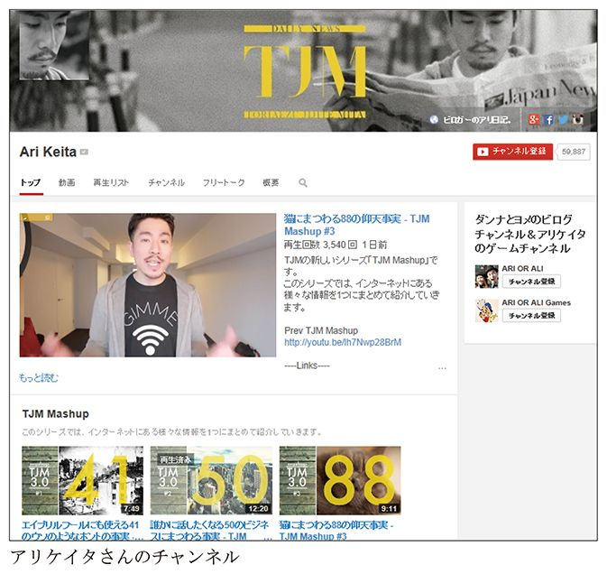
「僕が気になっているニュースを勝手に紹介しているので、『それでよかったら見てください』というスタンスです。２０１２年に、いじめを苦に自殺した大津の中学生がいたでしょう。僕も小学生の頃にいじめられた経験があったので他人事とは思えず、『いじめをしたヤツに告ぐ！』という動画を２本作りました。そうしたら、共感してくれた視聴者からたくさんの反応が寄せられてきたのです。それ以来、ＹｏｕＴｕｂｅのチャンネルでは、『自分はこう表現したい』ということを前面に出していくように意識しています」
アリさんのチャンネルでは、動画はテーマそのものがユニークなだけでなく、しゃべりが驚くほど上手いのです。どこかで鍛え上げたのかと思うほどですが、学生の頃はしゃべることや映像制作とは何の関係もない、ふつうの経営学部の大学生でした。高校生の頃からいろいろなアルバイトを経験し、コンビニはほとんどのチェーンを制覇。大学生になっても、中華料理のデリバリー、レストランや居酒屋といったアルバイトに精を出すばかりか、麻雀を始めギャンブルにもハマり、本人いわく「本当に典型的なダメ大学生」。
大学３年生になったとき、一体自分が何をやっているのか、何をやりたいのかわからなくなってしまったアリさんは、ワーキングホリデービザでオーストラリアに自分探しの旅へと出発しました。
「エアーズロックにでも行ったら何か見つかるかと思ったんですが、何も見つかりませんでした（笑）」
ただ、海外に行って本格的に英語を勉強したいという気持ちが強くなったアリさんは、大学卒業後、アメリカのサンディエゴに語学留学。英語もそこそこ使えるようになって日本に帰ってきたのが２００８年。24歳になったアリさんは就職活動を始めますが、日本企業の新卒一括採用の壁にぶち当たります。いわゆる「既卒の壁」ですね。
何とかアパレル関係の販売スタッフの仕事に就くことはできたものの、せっかくの英語力を活かした仕事をしたかったアリさんは、感覚が鈍らないようにＹｏｕＴｕｂｅで英語圏の番組を見るようになりました。
「昔からドキュメンタリーを自分で作りたいと思っていたので、ＹｏｕＴｕｂｅを見ているうちに、自分でも何かを発信したくなってきたんです」
言葉の通じない外国でもウケるよう、手始めに「くしゃみ１００連発」といった体を張るタイプの一発ネタをやってみたものの、視聴者の反応は今ひとつ。やがて、時事ニュースをビデオブログとして配信している海外ユーチューバーのチャンネルを見るようになり、そのジャンルに挑戦してみることにしました。
「当時はまだ、日本でそういう取り組みをしている人がいませんでした。はじめのうちは、自分の動画を自分で見返しても何を言っているのかわからないくらい滑舌が悪かったのですが、アナウンサーが書いた話し方の本も読んだりして練習を繰り返しました。動画を作り続けているうちに、だいぶ滑らかに話せるようになりました」
１本の動画を作るのに半日ほど費やすため、会社勤めをしながらだと、せいぜい週に１本しか動画を公開することができません。ニュース番組なのに、週１本ではどうしてもコンテンツとして弱いでしょう。ＹｏｕＴｕｂｅに本腰を入れたいと考えていたアリさんは、思い切って転職することにしました。
「たまたま友達がゴミ収集の仕事をしており、僕に仕事の口を紹介してくれることになりました。ゴミ収集の仕事は、朝は６時からと早いのですが、その代わりに昼過ぎの１時、２時にはもう仕事が終わって、あとは自由です。給料がいいのは収集車を運転するドライバーで、同乗する作業員の仕事はちょっときつくて、給料もそれほどでもありませんが、それでもアパレルの販売スタッフよりはよかったです。このおかげで、午後３時から動画のための時間が取れるようになりました」
ＹｏｕＴｕｂｅのために転職するというだけでも大胆ですが、実を言えばアリさんは、就職せずにＹｏｕＴｕｂｅに専念しようとも考えていたそうです。
「この年（２０１２年）の11月には彼女と結婚式を挙げる予定になっていて、仕事を辞めると言ったら彼女から『ふざけるな！ ちゃんと働け！』と怒られてしまいました。ＹｏｕＴｕｂｅと両立できる仕事を探したところ、運よくゴミ収集の仕事に空きがあったということです」
アパレルの仕事を辞める時点では、チャンネル登録者数も１０００人に届いていない状態だったそうです。
「ＹｏｕＴｕｂｅで稼いでいける自信はまったくありませんでしたが、それでも、ニュースのように毎日更新するコンテンツをある程度長く続けたらどうなるのか、試してみたい気持ちが強くありました。試してみたら意外に何とかなったので、今はゴミ収集の仕事も辞めて、ＹｏｕＴｕｂｅに専念しています。ＹｏｕＴｕｂｅに専念すると妻に宣言したらびっくりされましたが、共働きですから何とかなっています。
妻の実家に挨拶に行ったとき、ＹｏｕＴｕｂｅについて義父に説明しましたが、やはりうまく伝わりません。これはもう、僕の生活レベルをちょっとずつ上げていくことで、『うまくいっているんだな』と何となくわかってもらえればいいと思っています。相手が友達でも同じです。ＹｏｕＴｕｂｅチャンネルを始めた当初は、友達にもすごく宣伝していたんですよ、『俺、やってやるぜＹｏｕＴｕｂｅで！』って。でも相手の頭の上にどんどんクエスチョンマークが浮かんでくるのがわかるので、最近は友達にも言わないようにしています（笑）
アメリカだと、ＹｏｕＴｕｂｅのパートナーシップからの収益だけで暮らしている人も多いようですが、それはやはり英語人口の多さによるものでしょう。日本の場合は、ＹｏｕＴｕｂｅのパートナーシップだけではなくて、いろいろなメディアを組み合わせるのが合っているのではないでしょうか。僕の場合、製品やサービスなどを宣伝してほしいというお話をいただくことがあるので、番組内の一コンテンツとして紹介しています」
アメリカでは億単位で稼いでいるクリエイターがいるそうですが、日本ではまだまだそれほど稼げる環境は整っていません。超々々々人気ユーチューバーであっても、せいぜい年収５０００万円くらいではないでしょうか。トップ10にも入っていなければ高が知れています......。
アリさんは、ニュースではないプライベートな話題については、別のチャンネルを作ることで区別しています。
「僕が妻にプロポーズしたときの様子をＹｏｕＴｕｂｅにアップしたところ、思った以上に反響がありました。結婚式の模様に音楽を乗せてスライドショーにしたり、妻の誕生日にはサプライズを仕掛けてみたり。結婚式では式場スタッフの方が気を利かせてくれ、音楽だけ流して僕たちを式場で二人きりにしてくれましたので、いい絵が撮れました」
今では奥さんもブログを開設し、夫婦ともに人気者になっています。アリさんは今後も、英語を活かしたコンテンツを積極的に配信していく予定とのことです。
「最近テレビでＹｏｕＴｕｂｅが紹介される機会が増えてきて、先日も『ＹｏｕＴｕｂｅは儲かる！』といって、あるユーチューバーを取材していました。ただ、それにはちょっと違和感を覚えます。確かに、お金が儲かるということも大事ですけど、『こういう生き方をしている人たちがいるよ』というところに焦点を当ててもらえれば、世の中の価値観も少し変わってくるんじゃないかと思っています」
ソーシャルメディアをうまく活用して、消費者の共感を得ようとしている企業も増えてきています。たとえば、時々自虐的なギャグを入れるシャープの公式ツイッターアカウントが、人気を集めています。過去には、不況による社内リストラを敢行するという暗いニュースがありましたが、ふつうなら避ける話をあえて自虐ネタとしてつぶやいていたことでも注目を浴びました。たとえネガティブなネタでも、視聴者にウケて拡散してもらえれば、企業ブランディング的にはプラスになることもあるのです（そのさじ加減は非常に難しいですが）。
ユーチューバーというと個人の活動のように捉えられがちですが、企業がＹｏｕＴｕｂｅをビジネスに活用する例も、ここ最近よく見かけるようになりました。単に企業ＣＭをＹｏｕＴｕｂｅに掲載するということではなく、ＹｏｕＴｕｂｅによって顧客との接点を増やし、新しい販路を開拓しているのです。
その一例が、ｉＰｈｏｎｅ／ｉＰａｄのアプリやアクセサリのお勧め情報を提供するレビューサイト「ＡｐｐＢａｎｋ（アップバンク）」です。２０１３年４月には大阪梅田、８月には新宿、翌９月には八重洲に、アクセサリを販売するリアル店舗もオープンしています。
ＹｏｕＴｕｂｅを商売にすると言うと、アドセンスの収益がどれくらいかとか、人気者が企業とタイアップした等々、何かと個人にばかりフォーカスされがちです。ここ最近私が受けた取材でも、そういった下世話な覗き見レベルのようなことを聞かれました。しかし、企業もＹｏｕＴｕｂｅを活用すれば、新しく販路を広げ、消費者からのイメージを向上させることも可能になります。
ＡｐｐＢａｎｋはかなり早い段階からＹｏｕＴｕｂｅを利用していましたが、最初のうちはあくまでもレビューサイトに動画を貼るための「置き場」として活用していました。ＹｏｕＴｕｂｅのサイトから飛んできた人に見られることは想定しておらず、各動画のタイトルもごくシンプルでキャプションもなし、チャンネル自体のヘッダー（各チャンネルの一番上に表示される画像）も設定していないという状態でした。
ＡｐｐＢａｎｋがＹｏｕＴｕｂｅに本格的に取り組み始めたのは、２０１３年４月。大阪梅田のリアル店舗のオープンがきっかけでした。オープンイベントには瀬戸弘司さんが来店し、瀬戸さんのＹｏｕＴｕｂｅチャンネル経由でＡｐｐＢａｎｋ Ｓｔｏｒｅの開店を知ったお客様が大勢いたことがわかりました。
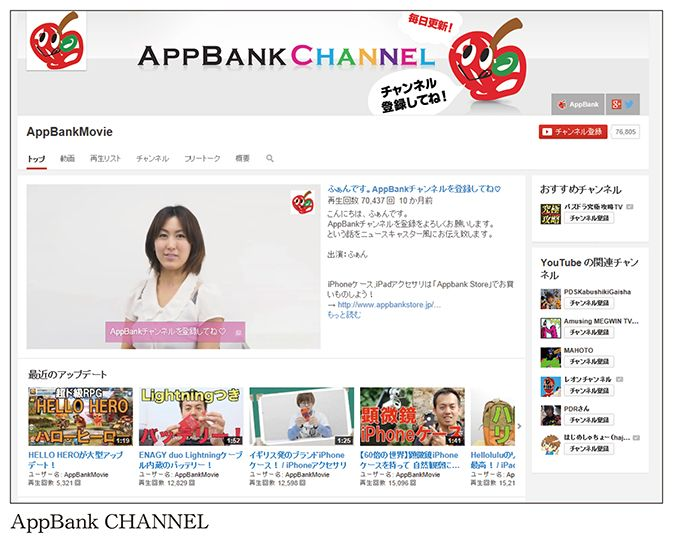
「ＡｐｐＢａｎｋのサイトからはまったくリーチしていなかった人が、こんなにたくさんいるのだと驚きました。私はこのときに初めて〝ユーチューバー〟という言葉を知ったくらいです」
ＡｐｐＢａｎｋ社員で、ライターとして活動するマミルトンさんはそう語ります。
社長からＹｏｕＴｕｂｅチャンネルをきちんと運営するよう指示を受けたマミルトンさんは、動画の貼り方や誘導方法について、一から見直すことにしました。その結果わかってきたのは、レビューサイトで記事を読む人と、ＹｏｕＴｕｂｅチャンネルから動画を視聴する人が明確に分かれているという事実です。
サイトの記事経由で動画がどれくらい見られているのか確かめるため、ＹｏｕＴｕｂｅチャンネルの一覧表示には現れないようにして公式サイトで記事公開を行います。すると、ページビューが１万～３万くらいの、比較的読まれている記事に貼り付けられた動画の再生回数は、２００～３００回程度。一方、きちんとタイトルやキャプションを付けてＹｏｕＴｕｂｅチャンネルに公開した動画なら、１万～２万回再生くらいは簡単に達成できたのです。
「ブログで記事を読む人は動画を見ないし、チャンネルで動画を見る人は記事を読みません。ＹｏｕＴｕｂｅチャンネルに動画をアップして、『詳細はこちら』とサイト記事へのリンクを貼っても、ＹｏｕＴｕｂｅのコメント欄に質問を書かれるのです」
現在、ＡｐｐＢａｎｋにはレビュー記事専門のライターが12人おり、そのうちの何人かは自分で動画の撮影・編集も行い、ＹｏｕＴｕｂｅにアップしています。動画はだいたい一日１～３本くらい、多いときで５～６本。顔を覚えてもらうため、動画に登場する人はできるだけ絞るようにしているチャンネルもありますが、ＡｐｐＢａｎｋではメディアとして長続きさせるためにも、複数人のライターに登場させる方針にしています。
「動画の担当者がいるわけではなく、それぞれが自分の得意な分野を担当しています。私なら女子向けのスマートフォンケース、別の人は男性に受けそうなガジェットといったように、うちのライター陣にはそれぞれ得意ジャンルがあります。私はわりとネタ系の記事を担当することが多いでしょうか。たとえば、ｉＰｈｏｎｅ用にブンブン振り回せるヌンチャクケースという、ただカッコイイだけのケースがあるのですが、それでトリック技をプレイする動画を作ってみました。最初はふつうにケースを紹介して、次はヨーヨーみたいなトリック技を考えて撮影して。あとは、ヌンチャクケースを使って森の中で戦うとか（笑）」
ＹｏｕＴｕｂｅにアップされた製品紹介の動画には、ＡｐｐＢａｎｋオンラインストアへのリンクが貼られています。
「通販番組のような感じにするつもりはなく、あくまでもそれぞれのライターがいいと思ったものを紹介するスタンスで動画を作るようにしています。オンラインストアで買わせることを主目的にすると、どうしても宣伝くさくなって視聴者から敬遠されることになりますし」
ＡｐｐＢａｎｋのＹｏｕＴｕｂｅチャンネルは企業としての活動ですが、動画の内容は（レビューサイトだから当然とも言えますが）消費者視点のものになっており、視聴者が共感しやすくなっています。製品メーカー自身がプレスリリースやカタログでアピールするよりも、ワンクッション挟んで、ＹｏｕＴｕｂｅなどのクリエイターを通して商品紹介をすることで、消費者とのコミュニケーションがスムーズに行えるわけです。
また、ＹｏｕＴｕｂｅチャンネルをリアル店舗への集客に活用するための取り組みも行っています。ひとつの例が、２０１３年８月にオープンした新宿店の紹介です。
「店舗がオープンするまでの過程を、動画で見せていました。最初はまだ店が何もできていない段階の予定地。次は、オープン記念として行うニコ生イベントの告知です。３本目では、できあがった店の中を歩き回り、どのコーナーにどんな製品が置かれているのかを紹介しました。店が進化していく様子を見せることで、視聴者の方も店作りに参加しているような気持ちになり、行ってみたいと思ってもらえればよいなと」
実際に店がオープンしてからは、道順案内の動画も用意したそうです。
「店舗は新宿駅から徒歩５分くらいの距離ですが、行き方がちょっとわかりづらかったので、道順を説明した動画を作りました。道順はカットせず、自分の歩くスピードで話しながら説明しています。来店されたお客様とお話ししたところ、『道順がわからなかったから動画を見ました』という方がかなりいらっしゃいました。文章でも道順は書いたのですが、動画の方がわかりやすいようです」
ＡｐｐＢａｎｋの動画活用で興味深い点は、ＹｏｕＴｕｂｅ以外にニコニコ生放送もあわせて利用していることです。ＡｐｐＢａｎｋは、ゲームアプリ「パズル＆ドラゴンズ（パズドラ）」グッズを販売する「パズドラ屋」というＥＣサイトも運営していますが、こちらの商品はニコ生経由のアクセスが多いため、動画についてもニコ生中心にしています。動画サイトにはそれぞれ特徴があり、視聴者層も異なるため、企業が動画サイトを活用する場合は、こうした視聴者層の違いも頭に入れておく必要があるでしょう。
そして、パズドラの攻略動画で爆発的な人気を誇るのが、同社社長の「マックスむらい」こと村井智建氏です。ＡｐｐＢａｎｋのホームページと連動した動画「マックスむらい日記」には４人の専任ライターが付き、毎日動画をアップするほか、ニコ生でも週に一度生放送を配信しています。ＹｏｕＴｕｂｅの「マックスむらいチャンネル」は、登録数83万人以上、動画再生回数は２億９１００万回以上にも上りました。
商品レビュー動画と、リーダーであるマックスむらいさんの動画の二本柱を強化することで、ＡｐｐＢａｎｋは視聴者を増やし続けているのです。
ＡｐｐＢａｎｋのライターは、企業の社員でありながら、ユーチューバーとして視聴者にもウケることが求められます。マミルトンさんの場合は、どういう経緯でライター兼ユーチューバーになっていったのでしょうか。
「２０１０年頃、私は自動車のディーラーで営業の仕事をしていました。今とはまったく関係のない業務ですが、接客で人と話すことには慣れていたということはあるかもしれませんね」
ｉＰｈｏｎｅを買ったマミルトンさんは、アプリやアクセサリの情報を求めてＡｐｐＢａｎｋの記事を読むようになり、さらにスタッフともツイッターでやり取りするようになっていきます。
「その頃私は大阪に住んでいたのですが、関西でＡｐｐＢａｎｋのオフ会が開かれるようになり、いつの間にか自分もオフ会の幹事をするようになりました。ＡｐｐＢａｎｋ創立者の宮下とも知り合い、ちょうど女性ライターを募集していたのでもうこれは行くしかないなと思い、２０１１年10月に入社しました」
それまで動画を撮影した経験はまったくありませんでしたが、入社後に自分なりに試行錯誤を繰り返して、ユーチューバーとして活動するようになっていきました。
「初めはカメラを向けられることも苦手でした。ＡｐｐＢａｎｋに入ってからも半年以上は慣れなくて。人がいると恥ずかしくてしゃべれないので、家でテンションを上げて一人で話してみたり（笑）。最近意識するようにしているのは、カメラや撮影者ではなく、視聴者に向かって話すということですね。撮影者に話していると、視聴者と出演者との間に邪魔ものが入る感覚になってしまうみたいです」
ＡｐｐＢａｎｋで扱っているのは、基本的にｉＰｈｏｎｅ／ｉＰａｄ用アプリ、アクセサリで、マミルトンさん自身もｉＰｈｏｎｅ用のケースは10個以上持っていて、服を着替える感覚でその日の気分に応じて付け替えているそうです。ＡｐｐＢａｎｋが女性のスタッフを多く採用しているのは、こういった事情もあるのでしょう。
「車の営業をしていたときからそうですが、自分でもいいと思う製品だと、お客さんにもつい熱弁してしまいます。そのおかげで買ってもらえることがよくありました。別のライターも、自分が気に入った製品はものすごく推します。その代わりに、それほどでもない製品はあきらかに適当に紹介していて、ＹｏｕＴｕｂｅのコメント欄でも思いっきり突っ込まれていましたけど（笑）」
ＡｐｐＢａｎｋは製品のレビューを提供するメディアであり、同時に小売業でもあります。従来のマーケティング手法ならばここまで配信者側の好みを前面に出すことはありませんでした。
「仕事として勧めているのか、本当によいと思って勧めているのか、動画だとそれが顕著に出ますね。仕事として製品を紹介しているのに、自分の好みだけでいいのかという意見もあるでしょうが、それぞれのライターが持ち味を活かして紹介すれば説得力も生まれると思っています」
ブログで記事を読む人は動画を見ないし、チャンネルで動画を見る人は記事を読まない――。これは衝撃的です。今あなたが（もしくはあなたの会社が）ブログメディアしか展開していない場合、ＹｏｕＴｕｂｅの利用者層にまったくリーチできていないということです。さらに、ＹｏｕＴｕｂｅを動画の置き場として使うだけでなく、これもまた別個のメディアとして運営していくことで効果が現れるのです。もはやテキストのメディアだけでは片手落ちな時代に入っているのです。
私の場合もそうでしたが、最初は動画の置き場にしかすぎなかったところ、次第にソーシャルメディア化してきたことで、なかば「仕方なく」注力せざるを得なくなりました。まったくこれまでの読者層とは違いますし、他での知名度も通用しにくいのがＹｏｕＴｕｂｅです。テレビでは引っ張りだこの芸能人だとしても、ＹｏｕＴｕｂｅ上ではＨＩＫＡＫＩＮさんやレオンチャンネルさんに遠く及ばないという実情があったりします。
私よりもずっと有名なブロガーでツイッターのフォロワー数も私の倍以上、それなりに名のあるマーケッターにもかかわらず、いざＹｏｕＴｕｂｅチャンネルを開設してビジネス展開を図ろうとしたときに、まったく箸にも棒にも引っかからないという例がありました。特に若年層の視聴者が多いと言われるＹｏｕＴｕｂｅでは、ブログのようなある程度オトナの世界や業界の通念を持ち込むことが結果につながるわけでもありません。改めて、一から視聴者との関係を築くことが大切です。
ビジネスの環境が整ってきたことで、ＹｏｕＴｕｂｅのネットの世界から、他のマスメディアに進出するクリエイターも増えています。ＨＩＫＡＫＩＮさんは、吉本芸人らでおなじみの男性用シャンプー「スカルプＤ」といった大口テレビＣＭの出演を果たし、メイクアップ動画チャンネルで知られる佐々木あさひさんも、ネスレのＣＭに起用されました。
佐々木あさひさんは、「メイクアップパフォーマー」という肩書きで本格的なメイク動画を配信し、女性視聴者を中心に人気を得ているユーチューバーです。ミシェル・ファンをはじめ、海外ではわりと以前から登場し始めていたメイク動画でしたが、日本に広まったのはここ最近で、佐々木さんはまさにその先駆者。自宅で壁紙やライト、衣装など、お金をかけずに工夫をこらした演出で、プロのアーティスト顔負けの映像を生み出しています。
今や、企業が消費者とつながるためには、ユーチューバーやブロガーのような人たちの存在が不可欠になりました。いいものを作ってマス広告を投入しさえすれば商品が勝手に売れていた時代は、遠い過去のもの。商品を買ってもらうためには、共感を持ってもらう必要があります。そのための手段のひとつが、「バイラルマーケティング」。ブログなどのソーシャルメディアによる口コミを通じて、企業の活動や製品に共感してもらう戦略です。
しかし、企業の広報がダイレクトに消費者に働きかけると、逆に反感を買ってしまう場合もあります。バイラルマーケティングを成功させるためには、企業と消費者の間に入り、消費者の目線に立って商品やサービスを紹介する人が求められています。まさに、ネット上での支持者の多いブロガーやユーチューバーが必要なのです。
実は、第２章で紹介した劇団スカッシュのインタビューには続きがあり、企業ＣＭについて非常に示唆的なことを述べていました。劇団スカッシュは企業とコラボしたドラマ仕立てのＣＭも多数作っていて、ネスレやグリコなどの大手食品メーカーや、アイフルなどの消費者金融などとコラボレートし、商品やサービスを組み込んだストーリーを書き下ろしています。
「企業のＣＭ制作のときは、クライアントにびっくりされますね。１カット撮影して『ＯＫ、じゃあカメラ代わって』などとみんなで悪戦苦闘したりすると、クライアントがこそこそ話しているのが、聞こえてくるんですよ。『あれで、大丈夫なの？』って。
企業とコラボレーションするときは、企業が求めることと自分たちがやりたいことのバランスを取らなければなりません。その分、オリジナル作品を撮るときは、やりたいことだけをやるというスタンスで撮っています。とりあえず、エンターテインメントとして面白いものを作り続けていくことでしか答えは見えてこないでしょう」（竜也）
しかし、ユーチューバーを続けてきたことで、きちんとビジネスとして考えるようになってきた、そう大塚兄弟は言います。
「僕たちは、自分たちがやりたいことをビジネスにしていこうとしています。けれど、面白そうな提案を誰かがしても、ビジネスにならないことは、やってはダメだと自分たちに言い聞かせています」（祐也）
「視聴者からウザいと思われたら、広告としても失敗ですから。ＹｏｕＴｕｂｅの動画で最初にどーんと企業名が出てきたりしたら、それだけでもう視聴者にスキップされて、別の動画に行かれてしまいます。視聴者に支持され、企業側にもメリットのある広告を作ることで、企業や広告代理店にも『ユーチューバーを使うのはいいね』と思ってもらえるようにする必要があるでしょう。そうしないと、広告業界におけるＹｏｕＴｕｂｅの認知度も、広告費も上がっていきません。『面白いけど、お金にならない』と思われるのは、ユーチューバーにとっても企業にとってもマイナスです」（竜也）
ドラマや企業ＣＭによって認知度が上がってきたこともあり、劇団の収益も少しずつ安定してきました。舞台への集客にはあまり効果はないものの、Ｔシャツや舞台版映像の有料コンテンツが売れるようになりました。ＹｏｕＴｕｂｅだけで何とか生活できるようになったメンバーたちですが、自分たちの求める芝居とビジネスの間で、まだ試行錯誤を続けているそうです。
テレビＣＭや他のメディアへの露出は華々しいので目立ちますが、企業とタイアップしての、ＹｏｕＴｕｂｅ上での「プロダクトプレースメント動画」も活況を呈しています。
プロダクトプレースメントとは、番組内でスポンサーの商品を登場させる広告手法です。たとえば米国でよく見られますが、ドラマの中で俳優が飲んでいるドリンクのペットボトルにメーカーのロゴが妙にはっきり映っていたり、さりげなくロゴ入りＴシャツを着ている場合などがあるでしょう。これも、プロダクトプレースメントの一種です。
過去には、ＹｏｕＴｕｂｅの利用規約として、企業と組んでＣＭを作るのは禁止されていましたが、今ではクリエイターがスポンサーから報酬を受け取ることを公式に認めています。ミシェル・ファンなどは、化粧品会社から提供を受けるようになって以降、さらにクオリティの高いメイクアップ動画を制作しています。
私の商品レビュー動画でもプロダクトプレースメントに該当するような動画が混じっていますが、それらは「ＰＲ」や「タイアップ」とバナー表記を入れているため、視聴者側もきちんと識別することができます。手前味噌になりますが、今ではよく見られるこうした有償でのレビューは、私が早い段階から始めたものです。その後、追随してレビュー動画を投稿する人が増えてきましたが、私の思惑と違う反応もあって戸惑うときもあります。
たとえば、動画が純粋に作られたものでなく、企業絡みであることへの視聴者からの反感があります。ＹｏｕＴｕｂｅに限らずブログでも他のメディアの記事広告でもそうなのですが、お金が動いていることを察知した瞬間から、「書かされてる」「言わされてる」と感じてしまう読者・視聴者が多いようです。本当によいものだろうが関係なく、お金をもらってやらされているのではないか、と思われているのです。「宣伝だからやってるんですよね？」というコメントが来ることも少なくありません。
対照的に、これは企業が関係しなくてもあるのですが「ジェットさんの紹介するものは欲しくなる」というコメントも届きます。私も別に実演販売をやってるわけではないので、そう言われても困惑するのです。アフィリエイトリンクなども貼っていますが、そこから買っていただいても10円とか20円がぽつぽつ入ってくるだけです。基本的に私自身の視点や利用方法から製品やサービスを評価するだけですから、私がいいと言っても万人に通ずるかどうかは分からないものです。レビューといえども鵜呑みにはせず、あくまで一つの見解として咀嚼し、情報の精査は視聴者各自で行う必要があります。
また、発注する企業の側でも勘違いがあります。お金を払っている以上、思った通りに商品を褒め、いいように宣伝してくれると考えている傾向があります。
勘違いされることも多々ありますが、「宣伝」と「レビュー」はまったく違うものです。私が動画上で行っているのは、あくまでもレビュー。私自身、レビュアーであって、広告塔ではありません。有償でレビュー動画を作る際は、お金をもらっているから褒めなければいけないということではなく、いつも以上にクオリティの高い動画を目指し、よりシビアな目で商品について語らなければなりません。企業側の宣伝文句を代弁するためにやっているのではありません。それなら、企業としてもテレビＣＭを作るほうが理にかなっているでしょう。
以前、メイロマ（@May_Roma）の名前で知られる谷本真由美さんが、ツイッター上で次のような興味深い発言をしていました。
「ワシはレビューも一枚いくらで金とります。それで食べています。金を払わなければちゃんとみません。プロの無償労働を期待するのは大変なマナー違反です。」（https://twitter.com/May_Roma/status/329281588925956097）
谷本真由美さんは、ふだんから歯に衣着せずズバズバ本音で発言する方で、この見解も極論ながら一理あると感じました。金銭が発生するような案件こそ、手間ひまかけて、責任もってレビューをしたいと思うのは当然です。
ただこれは、同じくレビュー動画を専門にしているユーチューバーの間でも意見が分かれるところでしょう。金銭授受＝宣伝となるのもやむなしですが、一人のレビュアーとしては、有償だからといって企業側の目線に立つのではなく、企業と消費者の中間で両者を媒介する存在でありたいのです。
ＹｏｕＴｕｂｅは、ビジネスのための巨大なプラットフォームになりつつあります。たくさんのチャンネルを持った放送局というより、ＹｏｕＴｕｂｅ自体が「放送」のようなインフラになっているといったほうが近いかもしれません。
たとえば、「ＶＩＣＥ」というメディアがあります。30カ国以上に支部があり、サブカルチャーに関する題材を取り上げたフリーマガジンを発行しています。ＹｏｕＴｕｂｅ上では、ドキュメンタリー番組のＶＩＣＥのほか、ニュース番組「ＶＩＣＥ ＮＥＷＳ」、日本語版の「ＶＩＣＥ ＪＡＰＡＮ」など複数のチャンネルを展開しています。ＶＩＣＥチャンネルで公開されているドキュメンタリーには長尺のものも多く、一般個人のユーチューバーによる番組とは一線を画しています。
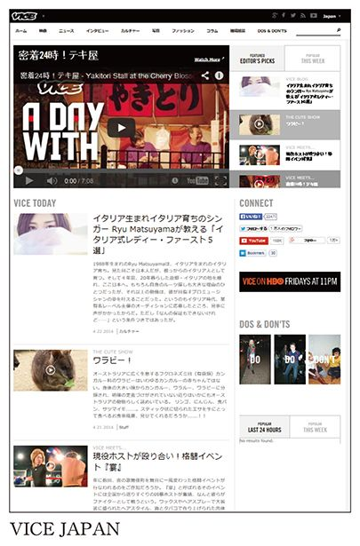
ＶＩＣＥの番組はＹｏｕＴｕｂｅ上にアップロードされてはいますが、ＶＩＣＥの公式サイトにも番組は集約されており、動画やテキストを組み合わせた総合的なメディアサイトとなっています。つまり、ＶＩＣＥはＹｏｕＴｕｂｅというインフラを活用することで、多額の設備投資なしに巨大なメディアを作っているといえるでしょう。
国内の成功例を挙げるなら、ＹｏｕＴｕｂｅ配信を利用した「ＤＩＧＩＮＦＯ ＴＶ」でしょう。日本発のテクノロジーを中心に紹介するビデオニュースサイトですが、これもＹｏｕＴｕｂｅチャンネルを運営するだけでなく、そこにアップロードされた動画を自サイトに集約し、テキスト記事もあわせたメディアとなっています。日本語版と英語版があり、どちらかというと日本よりも海外のほうで認知度が高まっています。もともとは翻訳業だったという強みを活かして、独自取材した映像に英語ナレーションや字幕をつけて配信しています。今では貴重な日本のハイテク産業の情報源として、ＣＮＢＣやＣＮＮなど海外の名だたる放送局の動画ニュースサイトで引用されるほどまでに成長しています。東京オリンピックも控え、これからますます日本から発信する動画情報は価値が増すのではないでしょうか。
ビジネスプラットフォームの観点から最近注目を集めているのが「マルチチャンネルネットワーク（ＭＣＮ）」という仕組みです。
「アドネットワーク」という広告業界のビジネスモデルをご存じでしょうか。これは、広告主が効率よく掲載媒体を探せるよう、アドネットワーク事業者がさまざまなウェブサイトを募り、複数のサイトをひとつのアドネットワークに束ねるビジネスモデルです。
かつては広告主や広告代理店は、各広告のカラーに合うウェブサイトを一つひとつ探して、掲載を依頼していました。これに対してマルチチャンネルネットワークでは、広告主は、ひとつのアドネットワークに広告掲載を依頼さえすれば、アドネットワーク事業者が複数のウェブサイトへ一斉に広告を配信してくれるのです。各ウェブサイトにとっても、アドネットワーク事業者が指定する記述をウェブページに載せるだけで、自動的に広告を表示できるというメリットがあります。特に、中小規模のウェブサイトにとっては、楽に広告の収益機会を増やせることになります。
マルチチャンネルネットワークは、いわばこの仕組みのＹｏｕＴｕｂｅ版とも言えます。ほとんどの動画クリエイターは、一人の力ではたいした視聴者を集められません。たまに話題になる動画があったとしても、コンスタントにヒットを飛ばすのは大変です。そこでマルチチャンネルネットワーク事業者は、有望そうな動画クリエイターを集めてひとつのチャンネルに仕立てます。
視聴者がこうしたチャンネルで動画を再生すると、その再生回数に応じた収益が、マルチチャンネルネットワーク事業者から個々のユーチューバーに支払われることになります。
マルチチャンネルネットワークを成立させる仕組みはＹｏｕＴｕｂｅが用意していますが、さまざまな事業者が独自に運営しています。アドネットワーク事業者が手がけているほか、大手のメディアサイトが参入を始めたり、ベンチャー企業が立ち上げられたりと、英語圏ではかなり賑やかな状況になってきました。
英語圏の大手マルチチャンネルネットワーク事業者としては、Maker StudiosやFullscreen、Machinima、ＶＥＶＯといった名前がよく挙がります。
Maker StudiosやFullscreenは、タレント的に人気のあるクリエイターを多数抱えており、さまざまなテーマでチャンネルを展開しています。契約しているクリエイターは数千から１万人にもなり、チャンネルの購読者も１億人を超えると言われています。一方、Machinimaはゲームに特化しています。ゲームの実況中継を始め、最新ゲームレビュー、開発者インタビューなど、従来のメディアよりもはるかに「濃い」情報が、ゲームファンに支持されています。
ＶＥＶＯは音楽専門の事業社です。個人のクリエイターではなく、ソニー、ユニバーサルといったレーベルと提携して高画質のミュージッククリップを流しているのが特徴です。
これらのマルチチャンネルネットワーク事業者は、ＹｏｕＴｕｂｅ上だけでなく、自分たちのサイト、その他のメディアにもコンテンツを配信します。チャンネルをまとめてひとつのテレビチャンネルのように提供することで、大口の広告を取りやすくなるのが一番のメリットと言えるでしょう。個々のユーチューバーからしても、露出機会が増えますし、収益が安定するといったメリットがあります。
日本でも２０１３年７月に、マルチチャンネルネットワークの仕組みが整備され、数社がマルチチャンネルネットワーク事業者として名乗りを上げました。
吉本興業は「ＯｍＯ」というエンタメに特化したマルチチャンネルネットワークを運営し、クリエイターの発掘や育成を掲げています。ハリウッドのような産業規模とは違う形で、日本のマルチチャンネルネットワークは発展していくのかもしれません。
ただ、英語圏とは異なり、日本でのマルチチャンネルネットワークは成功しているとは言いがたい状況です。原因のひとつに、日本語圏のＹｏｕＴｕｂｅチャンネルには、マルチチャンネルネットワークが成立するだけの十分な観客がまだいないことがあるでしょう。
先に解説したようにマルチチャンネルネットワークは、複数のチャンネルを束ねる、ごく簡単な仕組みです。チャンネルを束ねることで、グーグルと契約するアドセンスの料率も上げることができ、マルチチャンネルネットワークが受け取るアドセンスと、マルチチャンネルネットワークからユーチューバーに払われる報酬との差額が、マルチチャンネルネットワーク事業者の取り分になります。
また、マルチチャンネルネットワークが自社で別途営業して、広告を取ってくることもできます。しかし、十分なビューがないと、この仕組みは回りません。マルチチャンネルネットワークは、個々のユーチューバーと契約して、収益を分配するという運営コストが発生します。ユーチューバーを束ねることで仮にアドセンスの収入が１割上がっても、それがマルチチャンネルネットワークの運営コストを下回ってしまっては意味がありません。
多くのマルチチャンネルネットワークでは、所属ユーチューバーのアドセンス収益のうち２割ほどを自社の取り分としているようです。当座それで回っているにしても、実際にそれで両者ウィンウィンなのか、長い目で見ていく必要がありそうです。今後、テレビ代わりとして利用される程度にでもなれば、ビジネスとして大きく化ける可能性は十分にあります。
なお、マルチチャンネルネットワークが所属ユーチューバーに提供するのはアドネットワーク的要素だけにとどまらず、たとえばスタジオなどの撮影環境、クロスメディア展開やプロモーション、ユーチューバー同士のコミュニティサイトなどもあります。そういったものを提供するかどうかは、各マルチチャンネルネットワークによって違います。
Maker Studiosでは、ハリウッドのお膝元ロサンゼルス近郊のカルバーシティに、本家ＹｏｕＴｕｂｅスペースにも匹敵するほどの大きな撮影スタジオを構え、所属ユーチューバーたちが日々制作を行える環境を整えています。時にはハリウッドセレブも撮影のために訪れるとも言われています。カルバーシティは古くから映画産業で栄えた街で、ソニー・ピクチャーズ エンタテインメントの本社や、『風と共に去りぬ』『市民ケーン』など数々の名作が撮影されたカルバー・スタジオなどもあります。日本で言えば、太秦や蒲田のような歴史ある映画の街でしょうか。Fullscreenもまたこのカルバーシティにオフィスを構えていますし、そこからクルマですぐのプラヤビスタ地区にはＹｏｕＴｕｂｅ Ｓｐａｃｅ ＬＡもあります。
ユーチューバー同士のコミュニティサイトというのはＳＮＳのようなもので、そういったシステムの提供により、コラボレーションを促進したり、トラブル時の助けあいなどの交流もあります。東京や大阪のような大都市だとユーチューバーが集まって飲み会をやったりしますけど、たとえば地方でぽつんと動画配信をやっている場合などは不安なこともいろいろあるようで、そういった方への一助となる仕組みです。
ユーチューバー側から見ると、収益の２割を抜かれてまで参加するのですから、それでも価値のあるマルチチャンネルネットワークに所属したいと思うのは当然です。アドネットワークでの収益増だけではピンと来ない場合もあるでしょう。とはいえ残念ながら、日本では、本場アメリカのような設備を提供しているようなマルチチャンネルネットワークはまだありません。どうしてもその辺で見劣りしてしまうので、契約に二の足を踏んでしまうユーチューバーも少なくないのではないでしょうか。
たいていのユーチューバーは、動画を作ることが楽しくて、視聴者に喜んでもらいたいというサービス精神にあふれた人たちです。そのため、アドセンスで小遣い稼ぎをする程度には興味があっても、大きなビジネスにつなげることには関心が薄かったりします。
興味を持ってくれた広告代理店が、何とかコンタクトを取ろうとしてくれているのにもかかわらず、レスポンスひとつ返さなかったユーチューバーが、私の知人にいました。決して、悪気があったり社会性に乏しかったりといった理由ではなく、実際に毎日７～８時間かけて動画を撮影・投稿するような生活をしているユーチューバーたちは、世間一般で持たれているイメージ以上に、本当に時間のゆとりがないのです。ネタ探し・撮影・編集と忙しく、事務的なことまで一人では手が回らないというのが実情です。
また、広告タイアップなどの仕事を受けることになっても、ビジネス感覚や相場感に欠けるため、とんでもない悪条件で請け負ってしまう例も多く、結果としてユーチューバーが搾取されてしまうことにもつながります。こういう状態が続くと長期的に見て、ユーチューバー、広告業界双方にとってマイナスですし、何より新しいビジネスの場が、ブラックな労働市場に変わってしまうかもしれません。
これからもっともっと大きく育つ産業ですから、そのようなことがないよう私も代理店などに足を運んで呼びかけてきました。２０１３年初めになってようやく、ＹｏｕＴｕｂｅに特化したタレントプロダクションや広告代理店がぼちぼちと登場し環境が整ってきました。ちなみに私もｕｕｕｍ（ウーム）というプロダクションの所属クリエイターであり、同社の顧問も務めています。プロダクションや広告代理店が有望なクリエイターをスカウトし、適切なスポンサー企業を探してマッチングさせる役割を担うようになったのです。忙しいユーチューバーたちに代わってビジネスの場に橋をかける役割が必要とされているのです。
ここまで、第一線で活躍しているユーチューバーを中心に、ＹｏｕＴｕｂｅでお金を稼ぐことの苦労、それぞれの戦略についてお聞きしてきました。ただ、彼らのようなトップユーチューバーになれる人は、ほんの一握りです。動画発信は、動画で食べていこうと一念発起して、この世界に飛び込む覚悟がないと始められないものでしょうか。もちろんそんなことはありません。あくまで趣味ベースで、フェイスブックやツイッターなど、すでに活用しているＳＮＳの延長として、動画を発信してみたいという人も多いでしょう。プロのユーチューバーと区別する意味で、ここではそんな活用法を「まったり発信」と呼ぶことにしましょう。
まったり発信で十分だと感じる人は、高性能の機材をそろえる必要はなく、ｉＰｈｏｎｅ一台で気軽に始められます。
まったり発信者の好例が、カレーを中心として「食」に関する記事を執筆しているライターの飯塚敦さんです。飯塚さんも、ｉＰｈｏｎｅ一台で気軽に撮影した動画をもとに、インドカレー、スリランカカレーなど、数々のカレー専門店を取材・紹介しています。飯塚さんのブログも、ｔｏｎｔａｎｔｉｎさんやレオンチャンネルさんのように（第１章「設定したテーマは徹底的に掘り下げる」参照）絞り込んだテーマを徹底的に掘り下げているため、関心のある人にとってたいへん有益な情報源となっています。
彼もまたコンスタントにＹｏｕＴｕｂｅ動画を公開してはいますが、自身のことをユーチューバーだとは認識していません。２００５年以降、カレーについてのブログも熱心に更新していますが、これまでにネットを通じての収入はあまりあてにして来なかったと言います。
まだインターネットが一般化する以前の30年ほど前まではシステムエンジニアをしていましたが、その後はＩＴとは無関係の輸入雑貨、飲食業、ライターと10年ごとに転職。ライターとしてメディアに携わるようになったきっかけは、交通事故でした。
「怪我のせいで飲食業の立ち仕事が困難になったのですが、食に関する思いが強く、ライターとして食に関わっていくことにしたのです」
そんな飯塚さんは２００９年、カレーの取材で訪れたインドで、ｉＰｈｏｎｅ動画に目覚めます。
「ザクティやコンデジなどいくつか持っていたのですが、ｉＰｈｏｎｅ ３ＧＳは素早く操作できて性に合いました。また、まだインドでは一般にそんなに知られていなかったデバイスなので、盗難にあう危険が少ないかなと（笑）」
80年代初頭には８ミリフィルムの趣味もあったため腕に覚えがあり、インドで撮影したｉＰｈｏｎｅ動画をそのままｉＰｈｏｎｅ上で編集。それを友人らと開催していたｉＰｈｏｎｅ写真のイベントにて上映しました。その動画が、アップル製品に関する記事で著名なＩＴジャーナリストの林信行さんに評価され、そのままｉＰｈｏｎｅでの動画制作にのめり込んでいったそうです。
以降、カレー店の食べ歩き動画を中心に、デジモノの紹介やスリランカの食文化レポート動画など、ＹｏｕＴｕｂｅへのアップロードを続けました。その総数は、なんと１３００本にも及びます。今ではｉＰｈｏｎｅだけでなく、魚眼レンズの小型ビデオカメラＧｏＰｒｏも使って撮影。魚眼だと狭い店内でも使いやすく、お店が広く映って印象がよくなるのです。
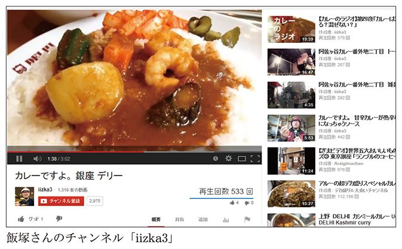
飯塚さんはＧｏＰｒｏを顔の近くに据え、お店でカレーを食べる姿を自画撮りし、ＹｏｕＴｕｂｅで公開しています。
「これはエゴなんだけど、気に入った店にはいつまでも長くやってほしい。でも、自分一人が食べに行ったくらいでは、そんなに売上げに貢献できるわけじゃありません。だったらいい動画を作って広め、皆さんにも来てもらいたいのです」
飯塚さんにとってＹｏｕＴｕｂｅに動画を公開することは、好きなお店を応援することであり、お店との大切な接点にもなっているのです。食べログをはじめ、ネット上では飲食店の口コミ情報があふれているにもかかわらず、その多くは写真で紹介されるばかりで、実は動画のお店紹介はまだまだ広がっていません。特に飲食店がみずから動画を作って公開するというのは、不思議とあまり見かけません。
「つい最近も、動画を見たというインドネシア料理店から『うちも撮りに来てくれ』という依頼を受けました。飲食の現場は忙しく、特に個人経営のお店などでは、動画を作っているような時間がとれません。そこで、私の動画がありがたがられることも多いのです」
お店側にとっても視聴者側にとっても新鮮な動画情報は、これからどんどん増えていくことでしょう。
飯塚さんの撮った動画がお店側のイメージとずれているようなときは、撮り直すこともあります。その際は、いくらかの制作費がもらえることもあるようです。とはいえ、悪意があって撮るわけではないので、お店側から咎められることはありません。また、お店の公式ツイッターアカウントが飯塚さんの動画を紹介することもあり、ウィンウィンの関係を築けています。
飯塚さんが理想的な「まったり発信者」であると感じた理由のひとつに、コメントを承認制に限定して、視聴者とのコミュニケーションをクローズなものにしていることがあります。
飯塚さんは、ＹｏｕＴｕｂｅを始めた当初はすべてのコメントを許可していましたが、現在はコメント欄を承認制にしています。
「どうしても雑音が入るので承認制にしました。その結果わかったのですが、承認制にしているところにわざわざ罵詈雑言を書く人はいません。最初から相手にしてくれないとわかっているのでしょう。あとは、口汚く書かれたコメントも意見のうちなのか、あるいはただ荒らして楽しんでるのか、振り分けるにもよい方策だと思います」
承認制にして以降、罵詈雑言の類のコメントはただの１件もありません。他人に迷惑をかけてでも構ってもらいたいという歪んだ承認欲求は、その程度だということです。また、承認制でも汚い言葉で書いてくるような人は、飯塚さんにしてみれば「話せばわかる人」で、実際にコメント欄で話し合って和解したこともあるそうです。イエスマンだけが来ても仕方ないですが、好きなことを表現する場だから、荒らすような輩には来てほしくないと言います。より実のある場所にするなら、コメントの承認制を検討してみてほしいとも。
たとえどんな内容を書かれても、まるで求道者のようにコメント欄を全開にして、罵詈雑言でも誹謗中傷でも受け容れているユーチューバーもいます。コメントの数は人気や盛り上がり具合のバロメータでもありますから、そういった姿勢も悪くはありません。
ただ気をつけてほしいのは、コメント欄の管理権がユーザー自身に委ねられているということです。承認制もそのひとつですが、個別に削除したりスパムを報告したりもできます。自分自身へ宛てられた暴言を放置しておくのは任意ですが、無関係の第三者を指して誹謗中傷を書込む人もいるため、注意深くチェックする必要があります。
最近も私のコメント欄に、あるユーチューバーを名指しして『○○○は犯罪者です。近づかないでください』といったコメントが書込まれました。こうした書込みはきちんと削除なり報告なりをしておきたいところです。
「ブレイクするってのは、バカに見つかるってことなんですよ」
数年前に、この言葉がブロガーのあいだで話題になりました。お笑い芸人の有吉弘行さんがテレビ番組内で言った言葉だそうですが、私はその番組を見たわけではないので真偽のほどはわかりません。ただ、その言葉が有名なブログで次々と取り上げられたことは、興味深いことです。
インターネット上では、社会的地位や立場などを越えて、本来なら縁がなかったであろう人々をも結びつけることがあります。ときにそれは、非常にフラットな世界に映ることもあります。ツイッターで、ホリエモンさんや孫正義さんのような有名人から返信をもらったことがある方も決して少なくはないでしょう。あるいは、返信がなくとも、一方的に意見することは誰でもできます。受け答えやリツイートされるものを見ていると、悪意に満ちたものもまぎれているようです。
ヒエラルキーと言ってしまうと語弊があるかもしれませんが、出会わずに済んでいたはずのグループ同士が出会ってしまう、見えていなかった世界が見えてしまうことで、軋轢や衝突を生む不幸はあります。意見を異にする層にまで、広くあまねく知れ渡ることで反発を生むこともあるでしょう。ブロガーなどはその発信力から常にそういった矢面に立たされているようなものです。ですから、「ブレイクするってのはバカに見つかるってこと」という言葉に共感するのも頷けます。ユーチューバーも遠からず立場は似ているため、似たような経験で頭を悩ますこともあるのではないでしょうか。
ことＳＮＳ上ではすべてのユーザーがフラットに映りがちです。ビートボックスの達人も、長年やっている劇団も組織に属するライターも、そのバックボーンに着目せず「何者なのか」を無視してしまえば、皆一様にＹｏｕＴｕｂｅ上にアカウントを持っているだけに見えるかもしれません。それに対して、「俺のほうが面白いのに」という承認欲求を全開にした中学生の書込みなどもよく目にします。
ＹｏｕＴｕｂｅのＳＮＳ的な側面については、飯塚さんはどのように向き合っているのでしょうか？
「以前はブログ記事を書いてから、その記事に動画を貼ったりしていましたが、今は動画を用意してからブログを書いています。動画を作ってからテキストを書くほうが頭が整理されて、要点のまとまったブログ記事が作れるのです。つまり、〝ブログ記事内の１コンテンツとしての動画〟という位置づけです」
単なるブログ用の動画置き場ではなく、ソーシャル化していくＹｏｕＴｕｂｅへの対応が不可欠であると、本書で再三述べてきましたが、飯塚さんの場合はある意味で対照的、時代の流れに逆行しているとも言えます。あえて今、ブログ記事のための動画を置いておく先としてのＹｏｕＴｕｂｅでもあるのです。
その観点で見ると、「コメントの承認制」というのも必然性があるかもしれません。ブログという文脈で登場する動画コンテンツに対して、文脈の外からあれこれ発言されても困ってしまいます。
ＹｏｕＴｕｂｅを人が集うコミュニティとして捉え、それを最大化するかたちで人気ユーチューバーたちの活躍があります。それとは違う側面として、いまだに動画を置いておくためだけのツールという利用法もまた否定されるべきではないでしょう。誰がどう使うかは自由です。
ともすると成功ハウツー本やノウハウ紹介サイトの内容などに影響されて、そのような運用スタイルを真似てしまいがちですが、飯塚さんのように自分のスタイルに合わせてマイペースで利用していくのも大いに有りだとは思いませんか？
20代という若さながらも、しっかり自分のブランディングを考えているＨＩＫＡＫＩＮさん、ニュース性のあるトピックをフォローし続けるアリケイタさん、動画界を挑発しつづけるシバターさん、本職とどう両立させていくか模索しつつも、動画を活用している劇団スカッシュ、新たな仕組みを作りたいＭＥＧＷＩＮさん、動画を自社製品の販促に生かすＡｐｐＢａｎｋ......。さまざまなユーチューバーがいます。ビジネスのプラットフォームも整いつつあることも述べました。そのうえで、やはり私個人としては、「ＹｏｕＴｕｂｅで大きく稼げる」というのは絶対に違うと感じています。
ＹｏｕＴｕｂｅの役割は、「稼げる」「儲かる」ことではなく、むしろ社会におけるセーフティネットに近いものではないかと感じています。
10年前にはなかったこうした仕組みがあれば、初期投資ゼロで、お小遣い程度であってもお金を得ることができるのです。たとえば、食えないと言われる業界で夢を追う若者を支えるものになりうるかもしれません。
女性が活躍できる場としても見直される可能性は大いに期待できるでしょう。女性の社会進出が叫ばれていますが、育児や家事と両立しながら会社勤めをするのは現実的に苦しいものです。しかし、家事や育児の傍ら、女性・母親の視点を生かして、面白い動画を作ることができるかもしれません。ユニークな家事のコツや料理など、女性目線のコンテンツは視聴者の幅を広げてくれることでしょう。現に、母親の撮影による子どもの動画が人気を博しています。
私自身も、会社を辞めた際、何本かの連載執筆とブログや動画で、幾ばくかの収益をあげていたことが助けになりました。何しろ退職からわずか11日目にして東日本大震災が発生し、震源から離れた首都圏ですら電車移動がままならない状態や、繰り返し起こる激しい余震などで、思うように再就職活動ができませんでした。そもそも企業側もそれどころではありません。結局は再就職するよりも、そのまま動画投稿を中心に生活してみるのも面白いかと考えて、今日に至ります。ＹｏｕＴｕｂｅのアドセンス収益額だけでは生活できませんが、それでも頼りにしてはいます。
アドセンスやアフィリエイトなどの収益によって、プロブロガーと呼ばれる方々が、ユーチューバーに先行して多数出現しています。会社勤めなどで時間や場所に縛られない活動により、ウェブ上を駆けめぐる情報の質も大きく変わりました。人気ブロガーが製品レビュー記事を書いたり、マスコミとおなじ新幹線試乗会に行ってその情報を公開したり。あるいはウェブ上の情報をキュレーションし、さらには自身の視点から大震災のような事件を伝えるようになりました。
ブログ文化とＹｏｕＴｕｂｅ文化は、テキストか動画かというコンテンツの違いだけでなく、発信も読者／視聴者層も異なる部分はあります。ただ、プロブロガーの出現によって世の中に流通する情報の質が変わったように、ユーチューバーがＹｏｕＴｕｂｅからの収益を頼りに世界を変えるような活動に身を投じる可能性も大いにあります。
動画で食べている私が言うのも変かもしれませんが、この仕事の魅力とは、高収入が狙えることではなく、仕事の幅を広げてくれることにあります。
たとえば、雑誌に何かのジャンルについて専門記事を書いていたとしても、扱いはあくまでも一ライターにすぎません。しかし、ＹｏｕＴｕｂｅチャンネルで顔出しの番組配信を行い、ある程度の人気を得ていたとしたらどうでしょう。自分の得意分野についてのイベントにも、招待者として参加することができるようになります。一般の人たちが世間から注目を浴びるようになり、テレビやその他のメディアに飛び出していけるようになってきたのです。
実際に私も、ＹｏｕＴｕｂｅチャンネルを持っているおかげで新聞やテレビなどの大手メディアにも認知してもらえ、さまざまなイベントに招待されるようになりました。顔出しすることにはリスクもありますが、セルフブランディングの面ではやはり大きな効果があります。
また、電子機器のレビューを見てくださったヤマハのボーカロイド（ＶＯＣＡＬＯＩＤ）担当者からイベントの司会の仕事をいだいたことがありました。イベントの配信はＹｏｕＴｕｂｅではなくニコ生だったのですが、ライブで３万人の視聴者に見てもらえ、その後の私の仕事の幅を広げてくれるいい機会となりました。
イベントを依頼する側としても、事前にＹｏｕＴｕｂｅを見ることで私のトーク力がどのくらいなのか把握できるので、安心感もあったのでしょう。動画は、そんな役割も果たしているのです。
映画の父と呼ばれるリュミエール兄弟が最初に撮った映画は、わずか数十秒のごく単純なものでした。工場の出口から労働者の女性たちが出てくる光景や、駅のホームに汽車が入ってくる瞬間、ただマッチョな男性が現れるだけといった、ストーリーも何もないものです。まるでＳＮＳでやり取りされるショートビデオの世界ですね。まずそうした短い活動写真が生まれます。
１９０２年に作られた『月世界旅行』は、初めてのＳＦストーリーとして、映画の新しい時代を切り開いた作品でした。しかしこれも舞台全体を撮影したもので、まだズームやパンといった技巧もありません（まあ、もちろんズームカメラ自体もないわけですが）。そうした黎明期を経て、大衆に普及する映画文化が確立しました。
アメリカのＳＦドラマシリーズ『スタートレック』という作品があります。私はこの作品の大ファンなのですが、ここで描かれる24世紀の世界には、もう映画というものがありません。人びとは「ホロノベル」というものを「ホロデッキ」を使って再生し、立体映像のなかに入って自分も演者として参加することが可能です。スクリーンで上映する映画はもはや、過去の文化として語られるものになってしまっているのです。しかしこれは、ある文化が衰退したのではなく、科学技術の発展とともに進化・変遷していったのです。
またこのスタートレックの劇中では、宇宙船の乗組員たちが自身の趣味としてホロノベルを書いたりもします。ブログやＹｏｕＴｕｂｅのような一般個人の手によるコンテンツでもあるのです。本書ではおもにスマホのような簡便な機器による動画制作やインターネット配信について述べてきましたが、それが24世紀までのあいだにどのような変化を経てホロノベルに至るのかを夢想してみるのも面白いかもしれません。
また、日本のＳＦアニメーション『トップをねらえ！』や『ほしのこえ』といった作品では、相対性理論に基づく時間の遅れ＝ウラシマ効果が物語の肝になっています。光速で移動する宇宙船では、地球にいる者よりも歳をとらないというアレです。実際に家族や友人たちと離れて、光速で旅する時代が来るとしたら？ 地球に帰還したあなたは、自分の息子よりも若いという逆転現象があるかもしれません。そんな時代や環境で、通信ネットワークや動画配信はどんな役割を果たすのでしょうか。
私は昨年、母をがんで亡くしました。母が亡くなる10日ほど前、私は取材のためカナダのユーコン準州を訪れていました。そこで撮影した美しい星空の写真を病床の母に送ろうとしたのですが、あいにく電波状態が悪くて送信できませんでした。帰国後に一息ついて、膨大な写真の整理が済んでから改めて送ろうと思っていたのですが、そうこうしているうちに母の意識がなくなってしまい間に合いませんでした。宇宙はおろか、まだまだ地球上の僻地からでも、家族に写真一枚送ることすら難しいのです。
今後、ビデオ・動画をとりまく環境はどう変わっていくのでしょうか。コンテンツとしてだけでなく、私たちのコミュニケーションをどう変えていくのでしょうか――。
初心者はスマートフォン一台から始めるのでも十分ですし、よりクオリティの高いもの作りを目指したい人は高性能の機材を買い求めるのもいいでしょう。可処分時間が変わらないのに動画投稿する人口が増えるのであれば、ごく一部の人気者に視聴者が集中してしまうか、あるいはもっともっと短い尺の動画が好まれるかもしれません（近い将来では、Ｖｉｎｅの６秒ですら長く感じるかも！）。また、ソーシャルメディアの在り方も変わり、シェア・拡散する方法も新しいものが出てくるかもしれません。
ただ、ユーチューバーになるのでしたら、クリエイターとしての意識を少しでも持っていてほしいとも思うのです。
海外クリエイターの動画を見ると、クオリティの高さに圧倒されます。日本発の動画サイトや動画文化も、決して負けてほしくありません。マルチチャンネルネットワークがなかなか根付かないなど、ビジネスとして確立されるのはまだこれからでしょうが、コンテンツのユニークさやコミュニケーションツールとしての斬新さでは、世界に誇れるレベルでしょう。
スマートフォンで誰もが気軽に撮影できる文化と、そういった人たちが到底真似できないくらいクオリティの高い動画文化、異なる二つの層がそれぞれ成熟することで、また新しいメディアや利用法が現れるように思います。
日本の映画産業は最盛期よりも縮小してしまいましたが、まだまだハリウッド映画は人気もあり、話題性も大きいです。テレビが現れたことで映画がなくなることはありませんでした。将来的には分かりませんが、ひとまずこの50年間ではそうです。ＹｏｕＴｕｂｅがあるからといってテレビがなくなることもしばらくはないでしょうし、ＹｏｕＴｕｂｅもいずれはオールドメディアになるでしょう。
なお、映画から派生したものとして最近では、プロジェクションマッピングという表現手法も注目されています。建物などの立体物に、その形状に即した錯視的な３ＤＣＧなどを投影するものです。立体物がまるで生きているかのように動いて、とても華やかに見えることからイベント等で人気があります。有名な例として、東京駅の復元工事完成記念イベントで行われたプロジェクションマッピングがありました。とても大掛かりで手がかかるものですが、そうしたものが面白がられる一方で、そのプロジェクションマッピングを見ている観客たちによってスマートフォンで撮影された動画が、すぐさまシェアされインターネット上を駆けめぐるという現象もまた面白いですよね。
ツイキャスにおける「コメント来るまで無言」に象徴されるような、コミュニケーションの性格を強く帯びた動画文化、おしゃべりやメールのような感覚で動画を配信する時代が始まっています。そうは言っても、双方向に動画で通信するビデオチャットやテレビ電話とはまた違うものです。ニコ生でもそうですが、配信者を起点として、視聴者がそこにぶら下がる形でのコミュニケーションが行われるものです。
「会いに行ける」というのを売りにした、握手会などを頻繁に行うアイドルが人気を博していますが、それに重ねて考えることができそうです。実際に会って、友達みたいに話し込むというわけではないのです。ステージの上の存在ではあるけれど、それでいて身近に感じられるかどうかが重要なのです。
動画配信においてはそれがコメント等を介したコミュニケーションという形で発露しているのでしょう。いざテレビ電話でもしようかとなると、間がもつほどの話題もなかったりするけれど、ある種のショー形式であれば観たり聴いたりし続けられるし、その中で視聴者の一人である自分のことにもちょっと触れてくれたらうれしい、そんな感じでしょうか。私も小中学生の頃は、ラジオでリクエストハガキが読まれると大変うれしかったものです。
「コメント来るまで無言」というのは、そういった気持ちを逆転させてしまったものかもしれません。自分が配信者であれば、ただの受身とはちがって、自分の意思で視聴者と関わり合うことができます。ただし、他者に構ってもらいたいという承認欲求を満たすために、スタート地点が「コメント来るまで無言」という他人任せなのだと思います。本来、発信したいことがあれば、開始トリガーを他人に委ねるなんてことはしませんよね？（笑）
ＹｏｕＴｕｂｅブームというのが具体的にいつから始まったのかは人によって意見が分かれるところでしょうが、そのブームもまだ冷めやらぬうちに「コメント来るまで無言」という主体性があるのかないのか計りかねる、次の領域に動画文化が発展しつつあることは確かです。もちろんこれまで通り「発信したい」人たちのためのウェブサービスや仕組みはいつまでもなくなることはないでしょう。しかし、発信したいというよりは、コミュニケーションをとりたいという潜在的欲求から、動画配信ツールを利用している人々が増えてきたのです。
映画『ブレードランナー』の原作ＳＦ小説としても有名な、フィリップ・Ｋ・ディック『アンドロイドは電気羊の夢を見るか？』（１９６８年）では、最終世界大戦後の汚染された世界が描かれています。人々は「共調ボックス」という機械によって、教祖ウィルバー・マーサーとの融合を中心に、ほかの世界中の利用者ともども一体化・共鳴し合います。「一人ぼっちじゃない」と認識するための道具なのです。何だか現代日本のような舞台背景ですし、動画のライブ配信者と、夜な夜なそこに集う視聴者たちとの関係を想起してしまうのは私だけでしょうか。
ＹｏｕＴｕｂｅ初期の段階では、どこかの誰かがアップロードした「とても面白い動画」に人気が集中していました。コーラにメントスを入れて噴出させる動画が話題になったこともありましたが、これも誰が投稿したかは特に重視されていません。現象自体に面白さがありましたから〝詠み人知らず〟のままでも良いのです。
一方で、最近のＹｏｕＴｕｂｅでは、「何を」撮るのかではなく、「誰が」撮っているのかがより重要です。同じことをやるにしても、あなたの友人がやるのと、まったく知らない人がやるのとでは印象が違うはずです。毎回笑わせてくれる人と、10回に一度の割合でしか笑えない人では、どちらのほうがより見たくなる人でしょうか。大学教授のコント、お笑い芸人による物理学、それらは妥当でしょうか？ 妥当ではないにしても、意外性の良さもあるでしょうか？
とはいえ、これはキャラクター性のことを言っているのではありません。動画がソーシャル＝社会性の役割を担うようになってきたことの表れでもあります。そう考えると、あらゆるニュースバリューを上回るほど、ユーチューバーその人への信頼度が高いことが求められます。自分が何者なのか？ の本質に根ざした価値の提供とも言えるでしょうか。
みなさんには、誰かのコピーではなく「自分の動画」を作ってほしいのです。最初からは難しくても、模索を続けていればいつか自分だけのものにたどり着けるかもしれません。最初はｉＰｈｏｎｅから、６秒だけの世界から始めてもいいんです。ウェブの文化は移り変わりが激しい世界です。変わり続ける潮目を読みながら、そして楽しみながら動画を楽しんでみるとよいでしょう。アリケイタさんの言葉「こういう生き方をしている人たちがいるよ」は何も既存のユーチューバーに限ったことではありません。
いつか動画サイトで、あなたの「生き方」とめぐり合うのを楽しみにしています。
愛場大介（ジェット☆ダイスケ）（あいばだいすけ）
1974年富山県生まれ。大阪芸術大学映像学科卒業。ビデオブロガー。2009年、アルファブロガーアワード受賞。ビデオアート系の映像作家としても受賞歴があり、国内外で作品を上映している。日本で最初の動画レビュアーとして知られ、創設以来YouTubeの発展に貢献。個人ブログ「ガジェット☆ダイスケドットコム」では、主にデジタル商品を動画と共に紹介している。2013年より、uuum（ウーム）株式会社の顧問を務める。
YouTubeチャンネルID：jetdaisuke
YouTubeで食べていく 「動画投稿」という生き方
2014年８月20日初版１刷発行
2014年８月20日電子書籍版発行
著 者―愛場大介（ジェット☆ダイスケ）
発行者―駒井 稔
装 幀―アラン・チャン
発行所―株式会社光文社
東京都文京区音羽1-16-6（〒112-8011）
電 話―編集部 03（5395）8289
メール―sinsyo@kobunsha.com
®本書の全部または一部を無断で複写複製（コピー）することは、著作権法上での例外を除き、禁じられています。
©Daisuke Aiba 2014